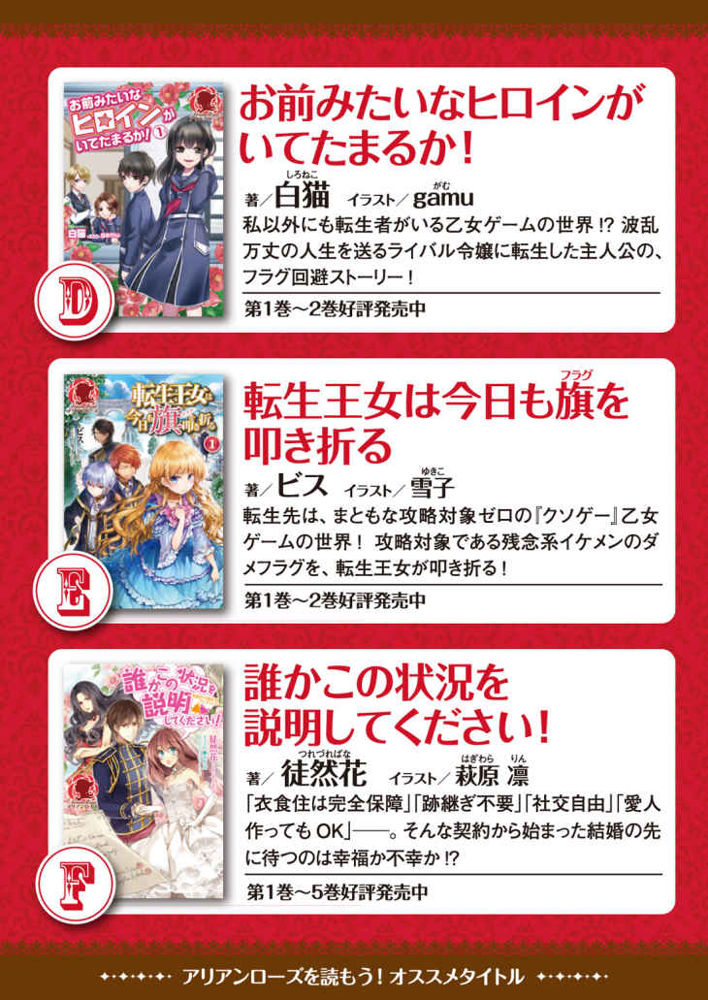

| アリアンローズを読もう！トライアルBOOK アリアンローズトライアルBOOK | |
| 広瀬煉 & 涼風 & 徒然花 & 大橋和代 & ビス & 白猫 | |
| (2016) | |

目次
この作品はフィクションです。
実在の人物・団体・事件などに一切関係ありません。

キャンペーン限定ショートストーリー
【異世界生活に必要なもの・適応能力と突き抜けた性格】
著者／広瀬 煉 イラスト／トイチ
「君にとって、ここは異世界という場所なのだよ。そして、帰る術はない。......ああ、我々にとって君のような存在は『異世界人』という一括りにされる。ゆえに、異世界人と言っても同じ世界出身とは限らない」
私を保護してくれた男性──ゴードン医師は淡々とそう告げた。そこに気遣うような感情も感じられたが、私はあえて無視をする。今の私に必要なのは情報であって、同情ではない。
どうやら、この世界では稀に異世界からの迷い人が現れるらしい。彼らの知識は非常に有益であるため、国が保護することになっているそうだ。だから、ゴードン医師の行動も保護活動の一環らしく、気にするなと言ってくれている。
当面の生活の心配がなければ、次はこの世界について知るべきだろう。実は、先ほどゴードン医師が見せた『あるもの』は、私の好奇心を非常に刺激した。
「この世界って......魔法があるんですね？」
魔法。元の世界ではゲームや小説といった、娯楽の世界にしか存在しない代物。見せてもらった治癒魔法は、まさに奇跡。傷がみるみる塞がっていくのを、私はぽかんと眺めていた。
「ああ、あるぞ。君も魔力が高いから、使えるだろうね」
マ ジ で す か !?
ゴードン医師は何でもないことの様に言っているが、私は内心大フィーバーだった。魔法はあらゆるゲームを愛する私にとって、大変馴染み深いもの。体感型と呼ばれるゲームが主流になった現在では『魔法を使いたい！』という人々が一度は魔法職を選ぶほど、『憧れのもの』なのだ。
それがリアルに可能になりました。これで盛り上がらない方がどうかしている......！
「私、魔法が使いたいです。いきなり攻撃魔法なんて無茶は言いません、身近なものからチャレンジしたいです！」
まずは自分の生活を便利にするものから。娯楽に溢れた元の世界は高い技術により、『魔法』というもののイメージを抱き易い環境だった。要はゲームでの体験がそのまま経験になっているのだ。基礎的なことさえ学べば、元の世界の知識を使っての応用も可能だろう。いや、してみせる！
「随分と熱心だな？ ......確かに、君にとって魔法が使えるのは心強いか。魔法は詠唱さえきちんと唱えれば、難しい術でない限り習得は容易い。まあ、イメージも必要になるが、異世界人には自動翻訳という恩恵もある。説明に困ることはないだろう」
私の必死な様子に何を勘違いしたのか、頷き納得してくれるゴードン医師。ありがとう！ これからは様々な意味で先生と呼ばせていただきますね！ 大丈夫、人間はやる気と根性、思い込みに萌えが揃えば無敵です。尽きぬ向上心と前しか向かないと言われた性格の前に、あらゆる障害は塵も同然ですわ......！
──そんな感じで、私の異世界生活は幕を開けたのだった。その直後、『自動翻訳のせいで発音に誤差が生じ、正しい詠唱ができない』という事実が発覚し、第一の壁となるのは余談である。
※引き続き本編サンプル版をお楽しみください
魔導師は平凡を望む １ 《サンプル版》
プロローグ
女性達は何時 だって理想の王子様に憧れる。今日も素敵な男性の話題は尽きない。
「やっぱりクラウス様よ！ あの憂 いを含んだ藍色の瞳に長めの黒髪がさらりと掛かっていてとても神秘的だわ」
「エルシュオン殿下は麗 しい方だけど近寄りがたい雰囲気があるのよね。黄金の髪に澄んだ青い瞳、なんて美 姫 を称える表現だけどぴったりだわ。あの方の隣に並ぶ器量を持つ女性なんているのかしら？」
「アルジェント様だって陽に透ける髪をお持ちじゃない。優しげな緑の瞳に見つめられたいと願う令嬢の多いこと！ 優しくて美しい理想の騎士様よね」
そんな女性達の憧れの三人は本日ある一室に集っていた。
※※※※※※※※※
私は幼馴染 達を前に溜息を吐く。彼らがイルフェナの第二王子である自分、エルシュオン・リトゥ・イルフェナの忠実な騎士であり仲間であることは事実だ。だが、それを踏まえても今回ばかりは気が重い。
かつて宮廷医師として勤めていたゴードンからの報告は、どう考えても彼らの協力が必要だと思わせるものだったのだから。
......いや、この件に関しては誰も悪くないというのが正しいだろうね。
『魔王』と呼ばれる私に頭を抱えさせる難題。どんな状況だろうとそれなりに対処できると自負していた自信は少々なくなりつつあった。
「珍しいですね、エル。貴方 がそこまで警戒するとは」
執務室には気心の知れた幼馴染二人のみ。本来ならば二人の部下や侍女が控えているこの部屋には自分達三人だけだ。もちろん、意図的に席を外させたのだけど。
「内容がちょっと問題でね。まず二人の意見を聞いた上で護衛を選びたい」
私の言葉に二人は僅 かに驚きの表情を浮かべた。それはそうだろうね、そこまでしなければならない人物など滅 多 にいない。彼らの立場ならばなおさら奇妙に思うだろう。
「随分と厄介な奴が居たものだな？ 翼の名を持つ騎士を動かすとは」
「そうだよ、クラウス。本当に想定外なんだ......ゴードンの報告書が事実だというのならばね」
「ゴードン医師、ですか？ あの方は宮廷医師の職を辞した後に辺境の村で過ごされていると聞いていましたが」
「そう、辺境の村。ラグス、と聞けばだいたい想像がつくんじゃないかい？」
アルの言葉を補う形で村の名を告げると二人の表情に緊張が走った。
「異世界人か！」
「まさか目にする機会があろうとは......」
「それも年頃の女性。ゴードンによると非常に前向きかつ冷静に物事を捉える性格らしくてね、取り乱すどころか自活すべく奮闘中らしい。文化の全く異なる世界から来たというのに狩りも覚えたとか」
手にした報告書に視線を落とす。医師として多くの人と接しているゴードンの目を疑うわけではないが、どうにもこれまでの『狭 間 の旅人』とは異なるような気がする。ぶっちゃけて言うとたくましい。......本当に年頃の女性なのかな、この子。
「『狭間の旅人』......この世界に突如招かれた異世界人。何らかの恩恵をこの世界に与えることもある異端者、そして」
「時に災い。二百年前の大戦は魔道具を考案した異世界人が発 端 ですから」
「災いなのは欲に狂った権力者だろうが。異世界人は被害者だぞ」
「判 っていますよ。本当にクラウスは魔術が好きですね」
「魔道具を作り出した偉大な技術者を尊敬するのは当然のことだ」
笑いを含んだアルの言葉に若干憮 然 とした態度を取るクラウス。そして私は二人を眺めながらも報告書の『最大の問題点』を口にする。
「その子ね、魔導師らしいよ？ しかも詠唱無し」
「は!? 」
「何？」
怪 訝 そうな二人──言葉の意味は判っても信じられない──にやや引き攣 りながらも報告書を読み上げた。
「『彼女の世界に魔法は存在せず、言語の自動翻訳という恩恵からこの世界の詠 唱 は使えないようです。どこかで発音の差が出てしまうのでしょう。ですが、知識を元に明確なイメージを抱くことで無詠唱での魔法が可能......というか成し遂げました』」
常識が覆 る事態に二人とも唖 然 としている。特にクラウスに至ってはここまで驚くなど物 凄 く珍しい。気持ちは判るよ、二人とも。
「『この方法は制御を術者が行わねばならず危険が伴うようです。現に炎を操る際にはよく体に火傷 を負っていました。彼女の作り出した治 癒 魔法は人の自然治癒力を爆発的に高めるというものだそうですが、その練習と称し自分の怪 我 も治しています。この子は発想と知識を組み合わせ、形にする才があるのでしょう』」
自分で読んでいても規格外過ぎると思う。一体何の冗談なんだろうね？ ただゴードンが気にかける理由も判った気がする。
自己防衛と生活のためだからこそゴードンも止めなかったのだろうが、彼女はかなりの無茶をして魔法を習得したということじゃないのかい？ ......ゴードンは彼女のことを『生きることと学ぶことに貪 欲 』だと書いているのだから。
「無茶苦茶だ、無詠唱なんて魔導師でも聞いたことがない！」
「話を聞く限り、事前に術を仕込んでおいたわけではなさそうですね。なるほど、『詠唱が使えぬからこそ独自の魔法を生み出すしかなかった魔導師』ということですか」
「そういうことだね。今のところは狩りや生活のために使っているだけだが、魔導師である以上は彼女を保護せざるを得ない」
「エルが後見ですか？」
「私が最適だ。多少の不自由をさせるだろうが君達も居ることだし守ることは可能だろう。この世界の知識に疎 いでは済まされない状況だからこそ自分一人でも生きていけるよう教育を施 す」
「主に貴族相手だろうが。生きた財産だな、そいつは」
クラウスの言葉は事実だ。必要な情報すら与えず飼い殺されるということすらあるのだから、下手な貴族の手に落ちれば彼女は間違いなく災厄の発 端 となるだろうね。
「我々にとっても良き友人となれるといいのですが」
あまりにも似合わないアルの台詞 にクラウス共々視線を向ける。
「アルジェント？」
「......何を考えている」
にこり、と無害そうな笑みを作ったアルが早速取り込む事をほのめかす。その笑みに私もクラウスも片眉を上げた。
「必要な情報はもちろん与えます。その上で飼い殺すのではなく『我々』を選んでもらうことが最善だと思いませんか？ エルシュオン殿下」
「ある意味平穏だろうね。でも飼い殺される性格はしていないみたいだよ？」
「女性なのでしょう？ これでも理想の騎士と呼ばれているのですが」
「理想の騎士、ねぇ？ 随分と腹黒い騎士様だよね」
「褒 め言葉ですね、それは」
浮かべた笑みがほんの一瞬冷たく歪 み、アルジェントは微 かに本心を覗 かせる。
首の後ろで一つに括 られた淡い金の長髪、優しげな瞳は明るい緑。白い騎士服を纏 う姿は確かに物語に出てきそうな騎士だった。だが、その内面は自分が認めた者以外はどうでもいいと言い切る人嫌い。他者に気付かせない点も含めて素敵な騎士様ではないだろう。
「今回は私が迎えに。エルのことですから既に手を打ってあるのでしょう？」
「ああ、あの双子をゴードンの元に向かわせた。二人と合流できれば間違いなく危険は回避できるだろうね、あの危機回避能力は凄 まじいから」
「それは頼もしい。それで、他には？」
「双子を追った者たちが居る。情報が入り次第、対処する手 筈 だ」
「クラウス達から情報がもたらされているのですね」
「そのとおり。実害があれば貴族だろうと言い訳できまい？ 何せ二人はエル直 々 の命 で動いているからな」
私達の言葉に笑みを深めるとアルは一礼して部屋を後にする。獲物を見つけた金の獣 はそれを手にするべく動き出すのだろう。女性が見 惚 れる優しい笑みを浮かべ、紳士的な態度で彼女に接するに違いない。彼にとってはそれが『役目』なのだから。
「さて、アルに任せて我々も動こうか......どうしたんだい？ クラウス」
少々不満顔の黒騎士に言葉をかけると「ずるい」と呟 いた。無表情が常の魔術至上主義者にとっても彼女は魅力的に映ったらしい。
「アルが好みじゃなかったら、君がいってみたら？」
「そうする」
あっさり頷 くクラウスに生温い視線になりつつ、ふとアルの特殊な性 癖 を思い出し心配になる。
「......アルがあの性癖を出すことはないよね？ 女性は退 くと思うけど」
「大丈夫じゃないか？ そもそもあいつに一撃見舞える女がそう簡単に居るとは思えん」
「だよね。ああ、そういった意味では婚約者ができるのは喜ばしいことなのか」
そう、アルの理想の女性が現れる可能性は限りなく低い。同じくクラウスも。
そういった意味ならば『保護』もいいのかもしれないね。二人とも女性が見惚れる外見と出自なのだし、悪い話ではないだろう。
「そうだ、彼女の教育にゼブレストからの依頼を使ってみようか。我が国の後見とあちらの王の加護があれば多少失敗しても誰かが守ってくれるだろうし」
「いいのか？」
「それくらいできなければ今後彼女は生きていけないよ」
それは間違いなく事実だった。権力者達の扱いを覚えなければたやすく取り込まれる。
僅かに顔をしかめたクラウスに苦笑を浮かべるとゴードンからの報告書を引出しの中に仕舞う。近いうちに破棄しなければ、などと思いつつ──
......後に私はこの時のことを『凄まじく甘い認識だった』と痛感することとなる。
ゴードンは報告書をか〜な〜り〜優しい表現で書いており──保護者根性と表現に困った結果だろう──何が『規格外』かを明確にしていなかったことを。
そう、『規格外』。これは彼女の能力はもちろん、それ以上に性格を指した言葉だったのである。
「ミヅキ！ そろそろ出掛けるぞ」
「は〜い」
黒髪を風に遊ばせながら明るく返事をした一人の女性。大きな瞳は旅への期待に輝き、好奇心のままにくるくると表情を変える。
彼女こそ異世界人にして魔導師、ゴードン曰 く『規格外』の香 坂 御 月 。この物語の主人公。
第一話 遭遇・実戦・フラグの予感
異世界生活にも慣れ、魔法も無事習得し。馴染みまくって今現在、保護者のゴードン先生と馬車で近くのジェノア村へ向かっていたり。
うん、色々突っ込みどころ満載の解説だけど省略するとそんな感じ。ゲームに例えるなら経験値ゼロの村人Ａから始めて村の子供達に混ざりつつ色々教えてもらった、という程度だろう。
それ以外にも狩りとか生活に必要なものは村人達から一通り叩 き込まれたはずだ。生きていくのに不自由しないこの世界の知識は確かに身に付いたのだと思う。もちろん、魔法についても。
この世界の魔法に重要なのはイメージ。だから便利さに溢 れた元の世界の状況を知っている私がそれを魔法で補おうとするのは非常に簡単だった。魔法がないだけでそれが『どんな状態か』を知っているからね。
そんなわけで村に着くまで先生と世界の差を話し合い、特に私が使う魔法の特異性について話していたり。
「ほう、それでは再現も不可能だろうな」
「ですよねー」
現在、馬車にて近くの村へ移動中。馬車の中には今 朝 狩ったばかりの熊モドキが村へのお土産として放り込まれている。状態維持の魔法がかけてあるから新鮮そのもの。
自給自足が当たり前の辺境生活では体調不良や怪我がそのまま生活に響くので、先生は時々訪れるようにしているらしい。ちなみに無償。
この世界は治癒や解毒といった魔法がある代わりに病気は薬しか対処法がない。だから治癒魔法を使える医師は意外と多いんだそうな。そこから魔法の話になったんだけど。
「あくまで遊びなので......怪我ではなくＨＰという数値の回復なんですよね」
馴染みのある回復魔法は所 詮 ゲームの中のもの。実際に怪我をするわけじゃない。だから治癒魔法は必然的に『数値の回復』であり、毒も『ステータス異常の解除』。身体強化も『ステータス数値の上昇』なので現実に使えるわけがない。
この世界の魔法は『魔法をイメージした上で詠唱、力ある言葉で発動』となっているので効果を明確にイメージする必要がある。魔法が存在しない世界の人間からすると厳しい現実だが、逆に言えば明確なイメージがあるなら自分の魔力と相談の上で万能だ。
「詠唱が使えればまだ何とかなったんでしょうけど」
溜息を吐く私に先生は興味深そうな視線を向ける。
「その割には器用なことをするな？ 体内から毒だけを取り除くなど」
「治癒は自然治癒力を爆発的に高めることで何とかなりましたしね、似た魔法を独自に作っておかなくちゃ」
でないと簡単に死にそうだ。少なくとも狩りには必須だった。怪我もしたし失敗も多かったけど生きるためには必要なのだ......必死に習得しましたとも。
「それ以外にもあるだろう？」
「ああ、結 界 ですね」
「いきなり上級結界を組むとはなぁ......」
「その上級しか知らなかったんですってば！」
もちろん、結界も習得した。この世界の結界は物理攻撃用と魔法攻撃用に分かれており、両方を弾くものは上級の万能結界と呼ばれるらしい。これはゲームの感覚そのままであっさり完成。いきなり万能結界を組んだことを驚く先生に私の方が驚いた。そういう差は最初に言ってください、先生。
「『知らないこと』が魔法の幅を広めるのだな」
呆れとも賞賛ともつかぬ視線を向けると先生は不意に表情を真面目なものへと変える。
「君は異世界人というだけではなく魔術の面でも異端だ。できるだけ周囲に溶け込むよう努力なさい」
才能を隠すことになるかもしれないがね、と付け加える先生の内面は読み取れない。だけど好奇心旺盛な先生がそう言わなければならない事情があるのだ、間違いなく。
「判りました。基本的に自分のためだけに使いますよ」
頷き話題を変えようとしたその時。
「......っ......！」
「......い......貴様......」
進行方向から聞こえてきた金属音と微かに聞こえる人の声に思わず顔を見合わせて馬車を止める。
さすがにこのまま直進して騒動に巻き込まれたくはない......シリアスな展開になっている向こうも熊を運搬中の馬車には遭遇したくないだろうよ。
「どうしましょうねー......」
「ふむ、旅人が襲われているなら助けなければならんが。しかし......」
「しかし？」
「私は戦闘に不向きでね」
申し訳なさそうな顔のまま私をじっと見る。つまり私に闘えと？ いえ、確かに熊殺し達成しましたけどね？ ひ......人に向けて魔法使ったことがないけど、いいのか、な？
「大丈夫だ、制御は完璧にできている。死んでなければ私が治せる」
「体の一部が千 切 れたりした場合は？」
「自業自得だ！」
先生、何だかこんな場面に慣れてませんか？ 随分割り切ったお答えで。でも私も助けられた一人なんだよねー......仕方ない、ここは私が頑張るか。
「判りました、行ってきます」
声はかなり近いところまで来ている。おそらくは馬に乗ったまま振り切れずに逃げ続けているという状態か。だとしたら、このままこちらの馬車に突っ込まれる可能性もあるわけで。
「よいしょっと。先生、ここで迎撃します。怪しい方を倒すので逃げてる方を保護してください」
「了解した」
先生に一言声をかけて馬車を降りる。かなり曖 昧 な言い方だがこの場合は仕方ない。なにせ私達にはどちらが悪いのか判断ができないのだ、うっかり追撃の邪魔をして犯罪者を逃すような真似は避けたい。つまり『凶暴な方を黙らせるから大人しい方を捕 縛 してね』という意味である。
保護＝捕獲。同じ行動なのに温度差があるよね......言葉って不思議。
「じゃ、始めます」
片膝を着き地面に掌を着け馬車の五メートルほど前に『罠』を仕掛ける。結界とは守るだけではないのだ、地面に物理攻撃用のものを展開したらどうなるか？
答えは簡単、上に乗った時点で『弾かれる』。ぶっちゃけると吹っ飛ぶ。
馬には気の毒だが全員一度吹っ飛ばされてもらおう。踏み付ける程度なら盛大に転ぶくらいで済むだろう。......馬の下敷きにでもならない限り。そして近づいてきた声の主たちは。
「ぐっ」
「なっ......！」
「しまったっ......」
驚愕の表情を浮かべながら弾かれた。おお、悪 戯 が成功したような達成感！ などと思いつつ弾かれた者達に目を向ける。
被害者達の服装は綺 麗 に分かれていた。二名は白いマントに青い制服？ のお兄さん。残り五名は誰が見ても普通じゃない。全身黒ずくめに加え顔を隠している。
「わあ、あからさま過ぎ！ 誰が見ても怪しい人です、先生」
「本当に......昼間からあんな目立つ格好で騎士を襲撃とは」
余裕ぶっこいてる師弟は本日も通常運転。緊張感よりテンプレどおりの服装にちょっと感動、それに制服組は騎士なのか！ もちろん、呆れている先生の言葉には心の底から同意。昼間から全身黒ずくめって正気か、お前ら。怪し過ぎるだろう!?
「はいはい、通行の邪魔ですよ？ とりあえず大人しくしてくださいね？」
呆れつつ連中を観察していると彼らは戸 惑 いながらも行動を開始した。当然、黒ずくめ戦隊（勝手に命名）は武器を構えてこちらを窺 い、騎士ズは私に向かって走り寄ると縋 りつき、
「「助けてくれ！」」
ハモった。
先生の顔が引き攣ったのは言うまでもない。そして私は、
「だ......第一声がそれか、このダメ騎士どもがぁぁぁっっ！」
思わず怒鳴りつけ頭を叩く。......『助けてくれ』だと？ 民間人・女の私に？ 武器持ってないのは判ってるよね？ 縋りつくどころか盾 にしてるよねぇぇぇ？
乙女ゲームならフラグが立つ重要場面に何やっとるんじゃぁっ、貴様ら!!
これ、何かのフラグ？ 死亡......はしないだろうから恋愛フラグとか言わないよね？ 吊り橋効果とかを期待するなら全力で叩き落としますよ？
騎士......ナイト......これが現実か。嗚 呼 、ゲームや物語の設定は嘘 吐 きなのですね......！
ギルド仲間の騎士はちゃんと仲間を守ってたよ!? ちょ、騎士に憧れる皆様に何と言ったら!?
......いやいや希望は捨てちゃいけない、こいつらがクズなだけという可能性もあるか。
「我々には任務が」
「礼はする！」
「縋りつくな、民間人を盾にするな、先に馬車に乗ろうとするんじゃない！」
「「後は任せた」」
そんなことまで言い出す騎士ズに先生は冷ややかな目を向けて呟く。
「恥さえ知らんか、これは殿下にお伝えせねばなるまい」
その言葉に何 故 かぴしりと固まった騎士ズ。おやぁ？ 先生の言葉を聞いた途 端 固まっちゃったよ？ まあ、私は自分の仕事をしますか。
「放置しちゃってごめんね？」
「「「「「......」」」」」
あらら、全員に睨 み付けられちゃった。まあ、怒って当然でしょうね〜......脚を凍結させて身動きできないようにしてるもの。彼らは結界内部にいるから物を投げても自分に跳ね返るだけ。
はっはっは、口 惜 しかろう！ 今は騎士ズのへたれ具合に対する八つ当たりをさせてくれ。あれが『騎士』とか絶対ないわ。あんた達も芸人にしか見えないけど。
「とりあえず気絶してもらいます。全員、歯を食いしばれ〜♪ 」
パチンっ！ と指を鳴らすと同時に黒ずくめ達は目に見えない『何か』に鳩 尾 を殴られた様子を見せ倒れていった。顔を殴 るなんて言ってないやい。
彼らに食らわせたのは空気鉄砲を参考にした圧縮された空気。たかが空気と言うなかれ、圧縮された空気は十分痛いのだ。
しかもどの方向から来るか見えないので防ぎようがなかったのだろう。そもそも空気という知識がないので理解できないに違いない。威力を調整できれば空気鉄砲も立派に攻撃手段だ。
「さて、お話ししよっか？」
達成感と共ににこやかに振り返り笑顔を向けた私に騎士ズは更に顔色を悪くした。騎士に憧れる乙女＆ 野郎達よ、報復は任せろ。お姉さんはこいつらをそのままにする気はないよ？ ......今後のためにも夢を壊すことは重罪なのだと思い知らせなきゃね？
「とりあえず働こっか？ こいつらを簀 巻 きにして馬車に放り込んで」
「ミヅキ、そいつらはともかくこの二人はどうする？ さすがに乗れんぞ？」
「荷物が増えるから速度もかなり落ちるでしょう？ 聞きたいこともあるし、腕を拘束したまま馬車に繋 いで走らせようかと」
「ちょ、待て!? 」
私の提案に騎士ズはぎょっとしたようだ。そんな二人に私達は冷めた目を向ける。
「......騎士ズよ、お前らの価値は労働する馬より低い。人権など期待するな、大した距離じゃないから走れ肉体労働者」
「ふむ、それもそうだな。まさか民間人を走らせるなどという真似もするまい」
先生も頷き、ちくりと釘を刺す。やっぱりさっきの事を怒っているみたい。
「荷物が増えたし、馬も可 哀 相 ですよね」
私の言葉に騎士ズは顔を見合わせ、連中を指差す。
「荷物って......」
「あいつらのことか......？」
「他に何が？ ほら、さっさと行くよ！」
そして村に到着してみれば騎士ズと襲撃者はここでも迷惑をかけていたことが判明。
要約すると『襲撃者が来たのに自分達だけさっさと逃げた。村人たちは巻き込まれ怪我をした被害者』。黒ずくめは村人達を人質に取ろうとしたが抵抗され、何人かは怪我を負ったらしい。無言で手当てをしている先生が恐ろしや。
「私も盾にされたんです。お説教くらい構いませんよね？」
少し騒がしくなるかもしれませんけど、と笑顔で告げた私は周囲の賛同のもと、まずは騎士ズに言った。
「まず膝を折って座ってくださいね。これは正座といって伝統ある座り方です。次に両手を前に着けて頭を下げなさい」
いわゆる土下座というもの。謝罪をするならこれだろう。だが、二人はお気に召さなかったらしく抗議の声を上げる。
「俺達は騎士だぞ！ そんな真似が......！」
「できますよね？」
「貴族である我々ができるわけっ」
「やれと言ってるだろ」
「「......」」
「......。謝罪できない体になりたいなら期待に応えても......」
びくんっ！ と騎士ズの体が跳ねる。最後まで言い終わらないうちに騎士ズは互いの顔を見合わせて。
「「申し訳ありませんでしたっっ!! 」」
勢いよく土下座すると謝罪の言葉を口にした。
「い......いいのかね、こんな真似をして」
騎士に土下座させたことに顔色を変えた村長さんが慌 てているけど、私と先生は同時に頷く。
「人間素直が一番ですよ。騎士全体の印象を悪くしたくないなら今ここで謝っておかなきゃならんのです」
「何の問題もない。騎士として恥ずかしいのは彼らだ」
私達の言葉に騎士ズも首を勢いよく振り頷く。騎士ズよ、君たち本っ当に判りやすいね。力関係の認識は間違いなく私が最上位で次に黒ずくめ、最後に自分達だろう。体に覚えさせるまでもなく納得してもらえて何より。......身分とかは気にしないのかって？
騎士が民間人より階級が上だと思ってるけど何か？
騎士ズが貴族らしいことも気付いてるけど何か？
全部知っててこの扱いですよ、異世界トリップ経験者の私にとって権力や不敬罪など恐るるに足りません！
知力・体力・時の運に魔法を加えて迎え撃たせてもらいますとも。この世界の身分制度がどうなってるかよく判らんので個人の感情優先。無知はある意味最強だ。そもそも二人が騎士として相応 しい行動をしていれば説教なんて必要ない。咎 められたらそこを突 付 こう。
「おい、あいつらはどうするんだ？」
「あいつら？」
「黒い連中」
村人の問い掛けにもう一組居たのを思い出す。そういや居たね、そんなの。でも騎士ズの任務内容聞くわけにもいかないから捕縛しておくくらいしかできないんだよね。
どうしようか、と考えを巡らせてると解体作業中の熊が視界をかすめた。
......。
熊......血塗 れ......。うん、一個思いついた。
「熊の血を塗って一晩森に吊そう」
ぽん、と手を叩きながら言った私に皆は首を傾 げる。ああ、私だけ納得してても意味ないか。
「襲撃者に結界・捕縛・治癒の魔法をかけた上で簀巻きにして血の匂 いを付けてから木に吊して一晩放置。素敵な一夜を過ごしてもらおう」
「お前は鬼畜か！ 生きたまま獣に食わせる気かよ!? 」
「魔法がかかってれば死なないし大型肉食獣に突付かれる程度でしょ」
声を上げたのは騎士その一。やだなあ、安全だよ？ 怖いだけで。ガラスの中に血の匂いをさせた奴等を入れておくようなものなのだ。
ただ、匂いは遮 らないから獣──間違いなく肉食獣──は寄ってくる。逃亡防止の捕縛魔法で動けないけどね。現状維持の魔法も追加で縄は切れないし。じゃれつかれて結界ごと叩きつけられる可能性もあるから常時、治癒魔法発動。ほら、どこが鬼畜さ？
そう説明すると騎士その一は微妙な顔をして黙り込んだ。安全が確保されている点は納得したらしい。
「いや、しかし......」
「もふもふな毛並の生物と戯 れるなんて滅多にない経験でしょ」
「戯れる程度じゃないだろ」
「厳しさの中にささやかな楽しみを交える私の優しさが判らないと？」
「いやいや、普通は大型肉食獣に襲われたら死ぬから！ 楽しくないから!! 」
「私に狩りを教えてくれたおばさんは食料扱いしてたけど？」
「どんな村だ、そんな猛 者 がいるなんて!? 」
「ここにも居るじゃん。村では自給自足が基本だよ」
ほら、あそこ。と指差した先にはお土産の熊が解体されている。嬉 しそうに作業しているのは当然女性陣、彼女達だって狩りはするだろう。
私も狩りと同時に解体も習ったからできるぞ？ さすがに最初は血や肉を割 く感触に恐怖を感じたけど、一度慣れれば意外と平気になる。そもそもあの熊を狩ったのは私だ。
「やり過ぎって言うけどさ、死人が出ていた可能性だってあるんだよ？」
「そうだな、怪我だけで済んだのは幸いだ。口封じの可能性もあった」
先生の言葉に皆は口を噤 む。『先生が来なかったら』『私が居なかったら』。その可能性は誰もが考えたくないに違いない。
「まあ、その場合こそ鬼畜プラン発動ですが」
「鬼畜プラン？ お前、これ以上酷 いことを考えていたのか!? 」
うるさい、騎士その二。魔導師は頭脳労働なんだよ。
「基本は一緒。ただ吊す縄に切れ目を入れて生と死の狭間を体験できるドキドキの展開。状態維持は簀巻きにした縄のみ！ 結界があっても丸呑 みされたら意味ないよね」
ぐっと拳 を握り言い切った私の本気を感じ取ったのか騎士ズは恐怖を通り越して唖然となった。
「......最悪だ、良心無しだ、この女」
「命の尊さを知る素敵な体験じゃないか、生還率五割だけど」
「お前、手加減という言葉を知らないのか......？」
青ざめた騎士ズが口々に呟き、怯 える中で先生だけが深々と溜息を吐 く。
「ミヅキのやり方は過激だが本来その役目をするべき連中が役立たずだからな」
もっと言ってやってください、先生。騎士ズはマジで役立たずです。私も腹立ち紛 れに正座で痺 れてるだろう足を踏んでおきます。
第二話 白騎士たちがやって来た
ジェノアの村で起きた襲撃事件のせいで私と先生は結局数日の滞在を余 儀 なくされた。先生の御友人経由で城に状況を報告したはいいが、辺境の村に転移法陣などあるはずもなく。
向こうからの手紙に『迎えをやるからそれまで監視お願いね！ 頑張れ♪ 』（意訳）などと書いてあったがために、暫 く留まることになったのだ。確かに村で連中を預かれというのは酷だろう。
......反対に私の滞在確定で連中は泣いてるけどな。ところで頑張れって何を？
なお、転移法陣というのは瞬時に離れた場所へと行ける便利なものである。この世界の基本的な移動が馬車なのでどれほど便利なものかは嫌でも判るだろう。
転移法陣は魔石によって術を固定されており、悪用されないために警備やメンテナンスする人が必要なので全ての管理は国が行っている。当たり前だが一般開放なんてされていない。利用できるのは国が許可を出した者（貴族が大半）、もしくは城お抱えの商人くらいらしい。それでも手続きが面倒だというから防衛面も徹底されてるんだろう。
ただ数はそこまで多くない。維持というか動力源に使われるような魔石がかなり貴重なため、国内に数箇所という程度なんだとか。必要な時に『エラー・御指定の転移法陣は作動していません』なんて言われても困るしね。
あ、手紙は一辺が三十センチくらいの正方形をした紙？ に描かれていた簡易版転移法陣（先生所有）を使って送ったみたい。簡易版とつくだけあって必要な時だけ魔力を込めるもので『対応する転移法陣へしか送れない』『容量制限あり』という互いに手紙のやり取りをするだけのもの。それさえ結構高価だと言ってたけど、村医者の先生が何故持っているのだろうね？
そして連絡があった数日後、お迎えに来たのは白い騎士服のお兄さん達だった。あれ、青い制服って下っ端 か見習いだった？
「ゴードン医師、お久しぶりです」
「やはり、お前さんが来たか」
「ええ、殿下直々に命じられまして」
そう言うと笑みをいっそう深めて優雅に会釈した。わあ、外見含め理想的な騎士がいるよ、お嬢様方！
これで顔しか取り得がなかったら大笑いだけど、連中を引き取りに来たので『助けてくれ！』はないだろう。まさに御伽 噺 に出てくる美しい騎士って感じだ。
おお、村の女性陣が頬を染めてガン見してますよ！ どこかで恋愛フラグが立ったら見物させておくれ。
「ところで、そちらが魔導師殿ですか？」
「うむ。ミヅキ、彼はアルジェントと言ってな......その、私の知り合いであり今回の責任者だ」
こちらに向けられた笑みに軽く会釈する。魔導師殿って何だ、一体。やっぱり保護された以上は色々報告されてたか。
それに。
......先生のこの人の紹介、色々すっ飛ばした感ありありだ。貴族じゃね？ 特殊な立場なんじゃね？ 警戒してもいいかな？
普通じゃない村医者の知り合いが普通の騎士とか思えないんだが。
「アルジェントと申します。アル、とお呼びください。ゴードン殿には見習い時代から大変お世話になったのですよ」
「見習い時代？ 世話になった？」
「ゴードン殿は城に勤めておられまして。国一番の名医と名高かったのですよ」
「......へぇ」
ああ、やっぱり宮廷医師だったか。お約束な展開だね！ そうなってくると当然......。
「今回のこと、大変ご迷惑をおかけしました。それで貴方達にも一度城へ来ていただきたいのですが......」
淡い金髪に緑の瞳のとっても美形なお兄さんは微 笑 み、先生と私にそう告げた。礼儀正しさの中に色気を滲 ませる美しい騎士に見惚れる人々多数。
空気を読む子としては断れる雰囲気じゃなく、恋愛フラグを立てたいお嬢様なら心の中でガッツポーズをとるような場面なのだろう。
でもね、お兄さん。世の中には例外というものが存在するのだよ。
「嫌です♪ 」
フラグを折りたい私としては即座に却 下 。笑顔で言っちゃうぞ♪
少し辺りを見回しただけでも素敵な騎士様に見惚れる女性多数なこの状況。これが城なんぞに行ったらどうなるか？
賭けてもいい。絶対に貴族令嬢達から敵視される！
『守る』と言われて安心するほど頭がお花畑じゃないのだよ。プライドの高い貴族令嬢が民間人に負けるなんて状況を許すはずないじゃないか。しかも、こちらからは不敬罪に引っ掛かるので絶対に手が出せない。
ついでに言っちゃうとこの世界の住人ではない私にとって、いきなり『騎士』とか言われても今一つ現実味に欠けるというのが正直な気持ちだ。馴 染 みがなさ過ぎて別世界に思える。
私の反応に周囲の人々が唖然とした顔をしてるけど無視だ、無視。......誰がそんな場所に行くか、面倒な。
アルジェントさん、私が貴方に名乗りもせず宜 しくとも言わない理由を察してくれまいか？
美形に釣られて苦労・苦難のフラグ満載な場所に飛び込む自殺行為なんてするわけねーだろ？
明日の命も危 ういわっ！
※※※※※※※※※
私は去っていくミヅキの背中を見つめながら口元が笑みを描くのを自覚した。『理想の騎士』と言われる自分、バシュレ公爵子息たる自分にそんな態度を取る者など居なかったからだ。
貴族階級相手ならば許されない彼女の態度はどこまでも『私』という『個人』を相手にしたものである。身分にも外見にも惑わされぬその瞳に映りたいと不意に思った。
「やれやれ、振られてしまいましたか」
「珍しい子ですね。アルジェント隊長を見ても顔色一つ変えないなんて」
あっさり断り去っていくミヅキを楽しげに見ていると部下が声をかけてくる。
確かに珍しい、というより今まで一度も無かったことだ。恋人が居る令嬢ですら何かしら反応があったものなのだが。
「ゴードン医師曰く『規格外』とのことですから。何かを察したのかもしれませんね」
魔導師とは聞いている。だがそれだけでは彼女の特異性など見えては来ない。
「任務として恋人になっていただきたかったのですが......任務抜きにしてもいいかもしれません。カーマインをたやすく葬る腕を持っているようですし」
ちら、と視線を向けると黒ずくめの男たちが捕縛されている。あれでもそれなりの規模の暗殺組織だったはず。彼らに運だけで勝てるとは思えなかった。
気の強そうな瞳を思い出し胸がざわめく......楽しい、と思う。自分が誰かに興味を持つなど考えもしなかったが、彼女はとても面白い。
何より先ほどの姿は彼女のほんの一面でしかないのだ。次はどんな表情や態度を見せてくれるのかと子供のように期待している自分が居た。
「あ......あの、騎士様。お茶でもいかがですか？」
声に振り向くと村娘が顔を赤らめながら誘いをかけていた。その見慣れた光景に気分が下降していくのを感じる。気分が高揚していた分、それはとても不快に映った。
「申し訳ありませんが仕事がありますので」
そう言ってやんわりと断れば大抵は退いた。そもそも騎士は貴族階級に該当する。村人が気安く誘える立場ではない。それ以前に任務として来ているのだから馴 れ合う必要などないのだ。
ところが今目の前にいる娘は自分に欠 片 も興味を示さない騎士達に不満を持ったようだった。
「あの魔導師とは話す時間があるのに」
ぽつりと呟かれた言葉に僅かに眉をしかめる。部下も表情に嫌悪を滲ませた。
「......彼女は私の想い人ですから」
そうだ、それが一番しっくりくる。今はまだ興味だけだが、どうせ『婚約者になってもらう』のだから嘘ではない。それを任務だけだと思っていない自分に少々驚いたが悪い気はしなかった。
先ほどの様子を思い出し思わず笑みが浮かぶ。だが目の前の娘はそれが気に食わなかったらしい。
「魔力があるだけの、あんな女にどうして！ 恐ろしい魔女のようなのに」
そう娘が罵 った瞬間、表面的な笑みすら消す。それは自分だけではなく部下も同様だったらしい。
一気に冷たくなった視線を受けて女は慌てて言葉を続けようと口を開きかける。
だが、遅い。一度言った言葉は取り返しがつかないのだから。
「彼女は君のように誰かの陰口など言わない。君は恩恵を受けた身でありながらそう言うのか」
部下の一人が口火を切るとそれに続いて厳しい言葉が女に浴びせられる。
「彼女がやらねば誰ができた？ 何人が生き残れた？ いい加減にしろ、恥知らずが」
襲撃者の素性を知る自分達だからこそ、感情だけで物を言う女の態度が許せない。そもそも逃げ隠れしていただけの女に罵る資格などあるまい。
「ど......どうなさいました!? 孫が何か失礼なことを!? 」
慌てて近寄ってくる村長は原因が己が孫娘だと気付き青ざめた。
「貴方の孫は村の恩人を罵る恥知らずなようですね。男に媚 を売るだけの役立たずが何様のつもりなんでしょう」
「そ、それは......申し訳ありません。きつく言って聞かせますので！」
事情を察した村長は益 々 顔色をなくし頭を下げるが、それでこの女が反省するとは思えなかった。
「言って聞かせる以前に理解できて当然でしょう。......ああ、命の恩人ということすら理解できないほど愚 かならば別ですが」
遠回しに言っているがそれは頭がおかしいという事に他ならない。さすがに肯定もできず黙り込む村長に向けられる視線はどれも厳しいものだった。
「貴方の孫はさぞ愚かに育てられたのでしょうね。貴族に対して対等に振る舞おうとするくらいですから」
「......申し訳ございません」
「アルジェント、少々言葉がきつくないかね？」
謝罪するばかりの村長を助けるようにゴードンが会話に割り込んでくる。彼の立場と落ち着いた声音にやや落ち着きを取り戻すも口にした言葉を後悔する気は起きなかった。
「君もだ。騎士達が言っていることは少々過激だが間違いではない。命の恩人を罵れと、そう教育されたのかね？」
「い......いいえ、そんなことは......」
村娘は泣きそうな顔でゴードンの言葉に首を振る。その様子に頷くとゴードンは更に言葉を続けた。
「騎士は貴族に該当する。貴族出身の騎士とて多い。怒りをかえば自分だけではなく家族や村全体に影響が出る可能性があるのだ。立場を弁 えなさい、彼らは任務で動いている......邪魔をするものではない」
諭 すように言うと今度は私の方に向き直り溜息を吐く。
「アルジェント。会わないうちに随分と感情的になったものだな」
「申し訳ございません。私も頭に血が上っておりました」
頭を下げ謝罪をすればゴードンは軽く目を見開き僅かに驚愕を滲ませる。私の態度はそれほど珍しかったのだろうかと内心首を傾げるが、次の瞬間ゴードンは薄く笑みを浮かべた。
「ほほう、普段の仮面を脱ぎ捨てるほどのことだったか」
これは面白い、と小さく呟く彼の表情は言葉とは裏腹に慈 しむ響きがあった。幼い頃を知られている身としてはこれ以上踏み込んで欲しくないものである。これは話を終わらせるべきだろうと思い、村長に向き直って言葉を紡ぐ。
「これ以上彼女を侮辱するならば貴族の権限をもって処罰します。我々は彼女の護衛も命じられておりますので」
騎士は民を護 るものだろうが決して対等ではない。加えて任務なのだと匂わせれば村長はもう孫を庇 おうとはしなかった。孫よりは貴族、いや国というものを理解できているらしい。
「私達の請け負った任務に該当する『対象』は彼女とゴードン医師だけなのです。二人は我々と対等であることを『許されている』。貴方達とは違うのだと御理解ください」
笑みを浮かべながらそう告げてやれば村人達は誰も反論することなく俯 く。ゴードンはそれが表面的なものだと気付いているだろうが、彼も村娘の言葉が気に障 ったのか咎める気はないようだった。その本人は俯くばかりで謝罪の言葉さえ口にしない。
......ああ、何てつまらない存在。自分の言葉に責任を持つ事をせず、俯くばかりの者など我々が気にかけるはずはないだろう？ 私達は只 の騎士ではないのだから。
そう思えば思うほど私に興味を抱かせる彼女は特別だったのだと再認識し、これからの日々に思いを馳 せる。それはとても楽しい毎日になるだろう。心が躍るとはこういうことか。
「我々の邪魔をしないでくださいね？」
村人達に根付くだろう、冷たさと優しさを混ぜた言葉は紛れもなく本心。僅かに片眉を上げたゴードンに軽く会釈すると背を向けてその場を後にする。
それ以降、我々の気を惹 こうとする者は居なくなった。『素敵な騎士』など御伽噺の中にしか居ないのだと認識させるには十分だったろう。
それに。
物語の騎士だとて『特別』はただ一人であり、それ以上に主に忠実なものなのだから。
※※※※※※※※※
私の中では既に折られたフラグ。ところが敵も諦 めが悪かった。
「諦めてください」
「い・や・で・す」
「ミヅキ殿、待遇は良いですよ？」
「村の生活で満足してます、平和が一番です」
「何でしたら気に入った貴族や騎士を傍 に......私でもいいですよ？」
「さり気に生 贄 モドキ献上しないでください、何その捨て身の勧誘」
只今攻防真っ最中。お互い笑顔なので表面上はにこやかにお茶してるようにしか見えん。
うふふ......うふふふふふ......！
さっさと退けや、優男。人間、諦めが肝心なんだぞ？ 美形だからって何でも思い通りになると思うな、そもそも明らかに裏があるお誘いじゃねーか！
部屋の中には私と敵の他に先生と騎士ズ、白騎士が居るけど......誰も止める気配無し。
白騎士、お前らの隊長が勝手に貴族や騎士を交渉の駒にしてるぞ、いいのか？
先生、諦めた表情で明後日 の方向を向くのはやめてください。
騎士ズ......怯えた表情でこちらを見てる君達が一番まともに見えるのは何故だろうね？
いい加減鬱 陶 しいし時間の無駄だ。口で言って判らないなら実力行使しかないよね。
......やるか？ さくっとやっちゃう？
決めたなら即実行！ 時間は有限なのだからっ！
「何と言われてもお断りします。......失礼しますね」
「......！ 待て、ミヅキ......っ」
魔力の動きを察した先生が諌 めようとするが手遅れだ、発動までの準備は既に整っているのだから。先生が何かを伝えようとした気がするけど気付かない振りをして攻撃対象への認識を。
障害は実力で排除するものですよ、先生。黒ずくめ戦隊を沈めたこの腕で！
敵を確認し、パチンっ！ と指を鳴らす。すると空気圧縮による衝撃波が白騎士達へと襲い掛かった。もちろん、目で認識などは不可能だ。
「「ぐっ......」」
「な......!? 」
「一体......何、が......」
いきなりの衝撃に悶 える白騎士達。腹部を押さえつつもどこか呆然と痛む個所を眺めている。
へぇ、誰も意識を失ってない。魔力はないみたいだけど強いんだろうね、彼らは。苦しむ表情も様になるとか美形って凄 ぇ。......その原因、私だけどな。
優しく労 わる気もないのでさっさと退場しよう。自業自得だよ、騎士様達？
※※※※※※※※※
医者として、ミヅキの保護者として、そして彼らを呼び寄せた者として私はこの場に居る責任があるのだろう。それはいい、それは当然のことだ。
だが。
変人どもの性癖にまで責任なんぞ持てるかぁぁっっ！
私はミヅキの出て行った扉を眺めたまま深い溜息を吐いた。実のところ、私がミヅキを止めようとしたのは全く別の理由からなのだが。
ちら、と未 だ蹲 る騎士達に目を向ける。気を失わなかったのはさずがだが、彼らのダメージは大きいだろう。しばらくは立てまい。
「ア、アルジェント殿。あいつは身分とかよく判ってないんで！」
「見逃してやってください！」
呆然としていた双子は我に返るなりアルジェントに懇願した。面倒見のいい性格らしい。
だが未だアルジェントは蹲っており、その表情は窺い知れなかった。
「......い」
「「へ？」」
ぽつり、と呟かれた言葉に双子は首を傾げ、私は彼らから距離を取った。
「......これが彼女の実力......素晴らしいです......理想的ですよ......！」
「え、ええと？ 一体何、が？」
顔は未だ伏せたまま、けれど明らかに喜びを滲ませた声に双子はやや引き気味になりながらも尋ねた。そんな彼らの声を無視してアルジェントは顔を上げる。
その表情は怒るどころかほんのり頬を上気させて嬉しそうだった。他の白騎士も同様だ。
「あの躊躇 いのなさ、抉 るような的確な攻撃！ 生かさず殺さずの絶妙な加減！ ......攻撃をした時の蔑むような視線もゾクゾクするほど素敵です！」
「いやいやいや！ それ、違う！ 何か違う！」
「頭を打ったんですか!? ゴ、ゴードン医師！ 早く診てやってください！」
言葉の内容を考えなければ見た目は十分恋する青年だ。状況を知っていればその発想に行き着くことはまずないだろうが。
......実はこの青年、かなり特殊な性癖の持ち主なのである。
『自分より強い者に憧れる・戦いに喜びを感じる』ならば珍しくもないが、『自分より強い者と戦い痛めつけられることに悦 びを感じる』奴はそうそういまい。むしろドン引きされることうけあいである。
このイルフェナという国は昔から王族・貴族に実力者（＝変人）が生まれることが当たり前だった。天才と何とかは紙一重という言葉を証明しまくってきたからこそ、小国ながら永 らえてきたのである。
城勤めでもしていれば今更な事実だが、民間人に馴染みはない。功績のみ伝えられているので、偉人どもが変人揃 いだったなどとは一般的に知られていないのだ。実力者である白騎士達も例外なくそれに該当し、察するに全員同類か。
双子の縋るような視線に応えるより早く動いたアルジェントは私の手をがしっ！ と握る。キラキラとした目が何だか怖い。
「彼女とお付き合いさせてください、ゴードン殿！ 魂が揺さぶられるような衝撃......いえ、抉られるような甘い苦痛でした！」
「抉ってどーするんだ、抉って......それは本人同士の問題だと思うぞ」
「ありがとうございます！ これから努力することにします」
許可してない、許可してないぞ!? そんな私の声無き叫びは当然無視される。
そっとしておいてやってくれ......と言おうとして私は溜息を吐く。彼らに勝利することが可能な女性がどれほどいるものかと思い浮かべて。
はっきり言って『不在』という答え一択だ。むしろ大勢居たら男は要 らない。
魔導師だったとしても呪文詠唱の時間がある限り負けるだろう。ミヅキは詠唱無しだからこそ接近戦でさえ強さを誇 っているのだから。
そんな彼らが漸 く見付けた理想の女性（＝生 贄 ）を諦めるだろうか？ ......無理だろう、拒絶の実力行使でさえ彼らは喜ぶ。
初めから伝えておくべきだったかと私はひっそりミヅキに詫びた。変人どもに気に入られるなど気の毒にも程 がある。しかも彼らがまともであったとしても彼女にとっては迷惑以外何物でもないのだ。
そんな中、騎士ズは衝撃の事実に気絶したまま忘れ去られていた。さすがに認めたくはない現実だったようだ。
騎士ズ、意外とまともな家庭（＝凡人）に育っていたようである。
第三話 城へ行こう、飼い主に会いに
翌日、麗しの白騎士様はにこやかに戯 言 をほざきやがりました。相変わらず無駄に美形だね、白い騎士服がお似合い！ 背景も合わせるべく、さっさと城にお帰りくださいな。
「結婚を前提にお付き合いしてくださいませんか」
「......は？」
不信感を露 にしながら聞き返した私に非はないはず。ええと、誰か説明ぷりーず？
でも、とりあえず。
「お断りします♪ 」
意思表示ははっきりしておこう。......だから手を離せ、見つめるな鬱陶しい。
そんなわけで絶賛現実逃避中。いやいや、おかしいだろう？
貴方との関わりなんて昨日の一件だけですよ、フラグを無視しちゃいけません。任務ですか？ 大変ですね。
ついに己の人生差し出してきたよ、この人。凄いな、騎士の忠誠心って！
そんな私に先生が──アルさんに説明を求めるのは早々に諦めた──気の毒そうに事情説明してくれた。箇条書きにするとこんな感じ。
・アルジェント達は『自分より強い者に苦痛を与えられることに悦びを感じる』という性癖の持ち主である。
・昨日の実力行使で彼らは理想の女性（＝生贄）と確信した。
・自分たちを一撃で沈める強さに拍手喝采、大興奮。嫁においで♪
・生贄確定ご愁 傷 様です。
......。
嘘だろ？ ちょ、そんなので恋愛フラグが立っちゃう!? 立っちゃうの!? 地道な好感度上昇イベントとかどこ行った!? 自分たちの性癖ストライクなイベント経過で一気に好感度ＭＡＸだと!? 斬新過ぎる展開だな、おいぃぃぃっ！
嗚 呼 ......乙女ゲームの常識ってあてにならないんだね......！ さすが生身の人間、想定外の事態発生。もっともこんな特殊設定の美形が存在するとは誰も思うまい。複数形ってことは白騎士は全員同類かよ、顔は良いのに残念な奴らだな！
......。
ふふ......逃げよう。そうだ、そうしよう。大丈夫、今ならどこだって生きていける気がする。さあ、家に戻って少ない荷物を纏めなきゃ！
「逃がしませんよ？」
「人の心を読まないでください」
「想われたことはあっても自分が想ったことは初めてなのです。絶対に諦めません」
そりゃー、そうだろう。萌 え所が顔や性格や地位なんてものじゃなく、凶暴さオンリーなんて。
言ってることは一見まともな上に天が二物も三物も与えているみたいだから、さぞモテたでしょうよ。でも残念な部分で総合的にマイナスなんて世の中上 手 くできてるね。
「おい......ちょっと来い」
あら、騎士ズが手招きしてる。とことこと傍に寄って行くと何やら真剣な顔をしていた。そういや君達も整った顔立ちしてたんだねぇ、しかもよく似てる。そう口にすると顔をしかめながらも答えてくれた。
「俺達は双子なんだよ。二卵性とかいうやつでそっくりじゃないけどな」
「お前達の世界でもそう言われてないか？ 異世界人の医者が教えたらしいけど」
「ああ、二卵性ね。なるほど。つまり君達は生まれる前から一括 り......」
「一括りって言うな！ いじめて楽しいか!? 」
「現時点ではその普通の反応にとっても安らぐ」
「「......。ああ、そういうこと」」
良かった、騎士ズは普通の人だ。騎士が全員あんなのだったらマジで泣いちゃうぞ。
「あいつは公爵家の三男だ、各地に影響力がある上にコネ狙いで協力者になろうという連中だって沢 山 いる。逃げられないと思った方がいい」
「何でさ？ 身分も権力も障害にならないよ？ 何なら国外逃亡でも......」
「旅券はどーするんだよ。国境越えられないだろ？ 発行も絶望的だと思うが」
パスポートが貰 えないのは異世界人だからではなく、上からの圧力ってことなのかよ！
「......一つだけ穏便に済ます方法があるかもしれん」
「え！ 先生、それ早く言ってください」
「そちらも十分困難なのだよ。エルシュオン殿下に直接諭してもらう」
ずざざざぁぁっっ！
騎士ズ一気に後 退 り。え、何その反応。そんなに怖いの？
「無理！ 絶対無理！ やめとけ、逃げた方がいい！」
「一度本性に触れたらアウトだ。危険な賭けはするな！」
「あ？......やはり殿下はあのまま成長されたか」
涙目の騎士ズに事情を察したらしい先生。おーい、仲間外れは寂しいぞ。
「エルシュオン殿下は大変賢く愛国心に満ちた方なのだが......その、賢いゆえに時として非情になるというか容 赦 がないというか」
言いにくそうに言葉を選ぶ先生。オブラートに包んでもそれなのかい。
「白騎士の主であるから報酬代わりに動いてくれる可能性はある」
「報酬？」
「あの方は実力至上主義でな、価値があると認める者にとっては良き後見なのだよ」
なるほど。その殿下の保護下になれるなら身の安全は保障されるってことか。しかも騎士ズの怯え方からして滅多なことでは敵対しようとする人はいないのだろう。何をやったか気になる......力技じゃないだろうし。
「アルジェントとは幼馴染だが個人的感情で贔 屓 する方ではない。一度口にされた約束は必ず守ってくださるだろう」
なんだか厳しい条件を言い渡されそうな気がするけど、逃げるより確実そう。ここは一度会っておいた方が今後のためにもいいかもね。
「判りました。今回はその方に頼ることにします」
「そうか、私からも言ってお」
「決心してくださったんですね！ 感激です！」
先生の言葉に割り込む弾んだ声、背後から回される腕。こうなると条件反射でもちろん......。
「近寄るなっつってんだろっ!! 」
ドスっ！ と音がする勢いで腹部に一発。正当防衛だ、私は悪くない！
......が。
苦しむどころか妙に嬉しそうなその表情に己の間違いを悟 る。しまった！ こいつは喜ぶだけだった！ しかも条件反射で何もせず魔法使っちゃったよ、報告されたらマズくね!?
「っ......つ......やはり......良いですね......！ 愛の痛みが」
『何が愛だ、何が』
皆の心の声は間違いなくハモった。正常な反応だ。
おやぁ？ 詠唱どころか指さえ鳴らさず魔法使ったことはバレてないみたい。良かった、そのまま気付かないでいてくれ！ ......じゃなくって。
いーやぁぁぁっっ!! 今、愛って言った!? 好感度上昇した!?
こいつを喜ばせてどうする、自分！ 私は馬鹿か！ 私の学習能力よ条件反射に勝っておくれ!!
「あ〜......とりあえず城に行く準備をするか」
ぽん、と肩に手を置きながら先生がそう言った。
ソウデスネー、今ハソレガ重要デス。転ガッテル生物ハ無視シマス。
騎士ズよ、生温い視線向けるの、やめい。
※この続きは製品版でお楽しみください。
キャンペーン限定ショートストーリー
【ディアナ、16 歳の憂鬱】
著者／涼風 イラスト／鈴ノ助
エルグランド王国の貴族にとって、社交は嗜みであり、王宮内での地位にもかかわる重要な仕事でもある。とっくに成人した良い大人である以上、逃げ出すことは許されない。......許されないのだ、が。
「ディアナ様、次は私と踊ってください」
「いいや、次は僕だ」
「君たち、ディアナ様と私の時間を邪魔しないでくれ」
今日がほぼ初対面であるにもかかわらず、隙さえあれば何処かしら触れてこようとする男性たちに囲まれ騒がれ続けては、ちょっと逃げたくなってしまうのも致し方ないのではなかろうか。「まぁ皆様、わたくしの身体は一つしかありませんのに......」と伏し目がちに困っているご令嬢を演出しつつ、ディアナの内心はツッコミの嵐だ。
（いやいや、こんな社交ビギナーな小娘狙わずに、他当たろうよオニイサンたち。てか、さっきから肩を抱こうとしてくる男爵閣下は確か、お誕生日来たら三十歳じゃありませんでしたっけ？ 完全に遊び目当てかこのオッサン）
まぁ、この男爵閣下に限らず、社交の場でディアナに声を掛けてくる男の八割は遊び目的だ。去年社交デビューし、今年でやっと二年目にもかかわらず、何故か社交界での評判は最悪中の最悪なディアナに進んで声を掛けるなんて、遊びと割り切っていなければあり得ない。
クレスター伯爵令嬢ディアナ。花も恥じらう十六歳の乙女ながら、彼女にまつわる噂は悪いものばかり。他人の不幸を見るのが何よりの楽しみだとか、その氷の美貌で男を虜にして獲物を物色するだとか、しかし虜になった男は皆、彼女の秘めた棘でボロボロになるとか──。
噂が噂を呼び、ついた二つ名は『咲き誇る氷炎の薔薇姫』。本人としては、大変不本意である。
（わざわざ他人様を不幸にするほどヒマじゃないし、どうせ狩りするなら男の人より野草が良いし。悪評広まるにしても、どうしてこう変な方向になるかなぁ）
先祖代々筋金入りの悪人面なクレスター家に生まれた時点で、社交デビューと同時に悪評がついて回ることになるとは、父や兄の例を見て分かっていたけれど。自慢じゃないが、自分と夜遊びほど結びつかない言葉もない。社交デビューするまで、同年代の異性と接する機会なんてそうそうなかった身で、どうやって『獲物を物色』できるというのか。
「ディアナ様、私と」
「僕と──」
飽きもせずに踊る順番を揉めている男性集団を、内心呆れて見つめながらディアナは思った。
（ま、こういう小競り合いをバカバカしいとしか思えない時点で、私に恋愛沙汰は早いということかしらね）
これより数ヶ月後に勅命が下り、側室筆頭『紅薔薇』となって、恋愛ごとにがっつり首を突っ込むことになるとは思いもしない、暢気なディアナである。
※引き続き本編サンプル版をお楽しみください
悪役令嬢後宮物語 《サンプル版》
プロローグ
「何をやっているのですかアナタはッッ!! 」
その日。
クレスター領伯爵家邸宅で、超 弩 級 の罵声が響き渡った──。
＊ ＊ ＊ ＊ ＊ ＊ ＊ ＊ ＊ ＊ ＊ ＊ ＊ ＊ ＊ ＊ ＊
広大な国土、豊かな自然に恵まれ、多くの人々が穏やかに暮らす国、エルグランド王国。その名の通り、統治の頂点に国王を擁し、貴族たちが平民を支配する、絶対王政国家である。
その支配階級である貴族たちの間で『クレスター伯爵家』といえば、知らない者はいないと言われるほど、有名な家だった。
『王国の悪を牛 耳 る、裏社会の帝王』──それが、彼らに与えられた二つ名だ。
クレスター家に爵位が与えられて、優に三百年。その間ずっと尻尾を掴ませることなく悪事を続け、莫大な財を成した。その人脈と手口は代が替わろうとも受け継がれ、今では王国全土にまで、彼らの根は蔓延 っている。
稀に運良く彼らの尻尾を掴むことができても、彼らにとってそれはあくまで〝尻尾〟。切ってしまえば害はないとばかりに切り捨て、決して本体の暗部が明るみに出ることはない。
下手に手を出せばこちらが危うい、正義を全うする者にとっては怒りしか覚えない存在。
それが、クレスター伯爵家──。
......あくまでも、〝噂〟だが。
「そもそも！ アナタがしっかりしていないから、こんなことになったのではありませんか!? よりにもよってこんな時期の王宮に！ それこそ、その顔の無駄な威圧感を使うときではありませんか!! 」
「す、すまないエリー。説明する！ 説明するから、その花瓶を降ろしてくれ......！」
「母上、落ち着いてください！」
シャレにならない修羅場を演じているのは、壮年の男女二人。それを青年が青い顔で止めに入るという、まさに家庭内抗争と呼ぶに相応 しい場面である。
三人の衣装は上質で、物腰も優雅。状況が優雅でないことはともかく、見る人が見れば上流階級の人間であることは一目で分かる。事実、上流階級なのだ。
現クレスター伯爵、デュアリス・クレスターと、その妻、エリザベス・クレスター。そしてその長男、エドワード・クレスター。
彼らこそ、かの悪名高き、『クレスター伯爵』一家なのである。
「お放しなさいエドワード！ 今度という今度は許せません！ 他のことならともかく、よりにもよってあの子を！」
「お怒りはごもっともですが、そんなもので殴ったら父上が！」
「構いません！ どうせ殺しても死なないような顔をしているのだから！」
「顔がそうだからといって、死なないという保証はございませんよ......」
そうは言いながら、「まぁ実際死にそうにないよな......」と内心呟 いているエドワードである。そんな彼の気配を敏感に捉えたデュアリスは、「エド、この裏切り者〜！」と机の下に隠れて情けない声を上げた。どうひいき目に見ても、その姿は『悪の帝王』には思えない。
そう、クレスター伯爵家が〝王国の悪を牛耳っている〟などというのは、あくまでもただの噂。現実の彼は愛妻家であり子ども思いの良き父であり、領民に慕われる素晴らしい領主だ。彼の本性を見て、『悪』という言葉を結び付けられる人はそういない。
ただ悲しいかな、噂が囁 かれるには、それだけの根拠があるのだ。それは──。
「アナタの、その、顔でッ！ どの口が『うっかりしてやられた』と吐 かしますか！ その、極悪非道冷血人間顔で!! 」
......これである。
遺伝子の不思議としか言いようがないのだが、クレスター伯爵家は代々、『悪人面 』としか表現しようのない、悪そうな顔の人間が多く生まれる。というより、そんな顔ばかり生まれる。どれだけ善人顔の妻を迎えようが、クレスター家の血が勝つらしく、悪人面が生まれる。
当代が、まさにその良い例だ。夫のデュアリスは、クレスター家の歴史でも稀な、超極悪非道冷血人間面。決して厳 ついわけではなく、むしろ美形の部類なのだが、その容姿を形容する言葉が〝氷のような〟とか、〝血も涙もない〟とか、〝眉一つ動かさない残虐さ〟とか、そういった類 のものしか見当たらない。無表情が標準装備、たまに笑えばその笑みは悪魔の微笑と名高く......まぁ、まとめてしまえば「ちょ、おま、その顔で一般人とかないわー」なお方なのだ。
そんな彼とすったもんだの末に恋愛結婚（恋愛結婚！）したのが、当時はリアラー子爵家令嬢であった母、エリザベス。太陽のごとく輝く金髪、海のように蒼 い瞳、たおやかな微笑と優しげな顔立ちの、美しき娘である。善人顔どころか、デュアリスと並べば、魔王と生 贄 に捧げられた姫にしか見えない。事実二人の結婚式はそういう評判で埋め尽くされた。
エリザベス嬢は無事なのか、魔王に酷いことはされていないかという周囲の心配も何のその、もともと恋愛、のち結婚した二人の仲が悪いはずもなく、一年後にエリザベスは長男、エドワードを出産した。彼が生まれた瞬間、エリザベスは己の血 脈 の敗北を悟ったという。
「母上、とりあえず落ち着きましょう。まずは椅子に座らねば、できる話もできますまい」
できるだけ刺激しないように、暴れ馬を落ち着かせるときくらいの慎重さで母親と接しているのは、二十二歳に成長した長男エドワードである。つやつや光る栗色の髪に翡 翠 の瞳、父親譲りの色素を持ち、やや目尻の下がった優しげな顔立ちは母親譲り。ここまでならばエリザベスが敗北を感じる必要はどこにもない。
問題は。
「お兄様。その顔で言われましても、騙 されて丸め込まれているようにしか思えませんわよ」
「分かりきったことを今更言うな！ この顔なりに私も必死なんだ！」
妹の冷静な突っ込みに、兄は悲痛な声を上げた。
そう、クレスター家の遺伝子は、天使と讃えられたエリザベスの顔立ちさえ、『悪者顔』に作り替えてしまったのである。一つ一つの顔のパーツだけならエリザベスそっくりなはずのエドワードは、全体的に見れば〝その優しげな笑顔で女たちを誑 かし、さんざん利用し弄 んだ挙げ句にあっさり捨てる〟ような美形にしか見えない。生まれた瞬間からそう見えたのだから、エリザベスの敗北感は実に妥当だ。
そのエリザベスと、ついに花瓶が頭上近くにまで迫っていたデュアリスは、もう一人の我が子が部屋に入って来ていたことに気づき、ぱっと動きを止め、声のした方を振り仰いだ。ようやく自分に気づいたらしい両親に、娘はにっこり笑いかける。
「お父様、お母様。お茶の用意が整いましたわ。お父様の頭を花瓶で割るのはひとまず後にして、お茶に致しません？」
「頭を割るのは永久に後回しでよいぞ！」
怖いことを言われたデュアリスは、それでもいそいそソファーに腰掛けた。エリザベスも花瓶を所定の場所に戻し、デュアリスの隣に座る。その正面に同じく座りながら、エドワードが首を傾 げた。
「お前が淹れるのか？ リタはどうした？」
「このド修羅場の中、給仕させよと？ 屋敷の使用人皆、怯 えきっていましたよ」
「......なるほど」
「お茶を淹れるのは好きですし。ですからついでにわたくしが持っていくと申し出たのです」
「よく分かった。......ありがとうな、ディアナ」
優しい瞳でエドワードが見つめる娘こそ、先ほどからエリザベスが激怒している原因の少女。クレスター家長女、今年十七歳になる、ディアナ・クレスター伯爵令嬢である。エドワードにとってはたった一人の妹であり、デュアリスとエリザベスにとってもただ一人の娘。この状況で甘やかされなければ嘘だが、クレスター家の遺伝子は、そんな生易しいことを許しはしなかった。
「はい、どうぞ。気持ちが落ち着くように、少しハーブをブレンドしてありますわ」
「あぁ、ディアナ！」
突然、エリザベスがさめざめと泣き出した。
「あなたはこんなに優しくて、心根の美しい娘に育ったというのに。──クレスターの血に負けてしまった母を、どうか許して頂 戴 ！」
「......落ち着いてください、お母様。別にわたくし、この顔に不満は持っておりませんし。美人に生んでくださり、感謝しておりますわ」
「ディアナ〜！」
（......ダメだな、こりゃ）
ディアナは兄と目を見交わし、早々に母親を落ち着かせるのを諦めた。別段本気で取り乱しているわけではないが、ことディアナの顔の件になると、エリザベスはしばらく浮上しない。放っておけば勝手に元に戻るので、ディアナはさくさく本題に入ることにした。
「それで、お母様は何故、こんなに怒りに満ちていらっしゃるのです？」
「いや、それがな、ディアナ、落ち着いて聞いてほしいのだが......」
次に父親が発した台詞 に、ディアナは、その涼やかな切れ長の目を限界まで見開いた。
「お前に、ジューク陛下の側室になるようにという、通達が参ったのだ......」
──季節は、初夏。
陽気だけはとことん穏やかな、ある昼下がりの出来事だった──。
一．入宮
季節は進み、夏──。
「クレスター伯爵家ご令嬢、ディアナ様。『紅 薔 薇 の間』へご案内致します」
「──紅薔薇の間？」
「はい。本日よりあなた様は、『紅薔薇様』でございます」
「......分かりました」
何だかんだありつつ結局は後宮入りしたディアナは、無駄に高待遇を与えられたらしいことに内心驚き、それ以上に嘆きつつ、素晴らしい裾 捌 きで入室し、一室の『主 』となった──。
＊ ＊ ＊ ＊ ＊ ＊ ＊ ＊ ＊ ＊ ＊ ＊ ＊ ＊ ＊ ＊ ＊ ＊ ＊
エルグランド王国にて、『伯爵』という位はそれなりに高い。
特権階級の頂点に君臨するのはもちろん、王を筆頭とした王族だ。その次に、王族から臣下に降りた『公爵』の位がある。現在の王国で公爵位を与えられているのは、王太后の実家であるモンドリーア家ただ一つなので、正直なところ王族と公爵家を合わせて別格と考える風潮が強い。
『臣下』としての位のトップは『侯爵』だ。およそ四百年前の建国当初より王族に仕えてきた家や、長い歴史の中で王国に貢献し続けてきた家などに与えられる。続いて『伯爵』。これは主に、重要な領地を任されている貴族に多い位である。その下に、所領の広さや重要度に応じて『子爵』、『男爵』と続く。伯爵位は一見大したことのない位のようだが、実際には『伯』と『子』の間には大きな壁があり、また『伯』の中でも暗黙の階級がある。
そして肝心のクレスター伯爵家はといえば、『伯』の階級の中でも最上位、その歴史の長さからいえば『侯』の身分を賜っていてもおかしくはなく、『侯』の下位に位置する貴族ならば遠慮しなければならないほどの家格であった。厳然たる身分制度を敷いているエルグランド王国にとっては、まさに例外中の例外の家なのである。
そんな実家を持つ令嬢が、後宮内で蔑 ろに扱われるわけもなく──。
「どうします、ディアナ様？ 『紅薔薇の間』って、要は正妃候補ですよね？」
「予想以上の高位ね......。確かどこかの侯爵家からも、後宮にはいらしているはずなのだけど。こうもあからさまだと、嫌になるわね」
現在この後宮には、侯爵、伯爵、子爵、男爵、それぞれの階級から未婚の娘が集められ、五十人近い大所帯となっているはずだ。何事にも無駄を好まないディアナは、この場所の非生産性をしみじみ感じてしまう。
「無駄よね、後宮って。確かに陛下の好みを手っ取り早く探るには良いかもしれないけど、それにしたって、人を集めすぎだと思わない？」
「仰 るとおりですわ。五十人もいたのでは、陛下の好みが見つかるのが先か、陛下の精力が尽きるのが先か......」
「毎晩別々の女性と閨 を共になさったところで、時期が合わなければ御子もできにくいだろうしね」
女性が子どもを授かるには、愛情の次に女性個人の周期が重要なのだということは、クレスター家にとっては常識だ。それを考えれば、数打ちゃいつかは当たるだろう、という後宮思考は、まさにお粗末としか言いようがない。むしろ正常に機能している後宮ほど、子どもができにくい場所はないのではなかろうか。
「仮に子どもが授かっても、男子か女子か、男の子だったら次期王に......って、純粋に子どもを慈 しむこともできない場所だもの。やっぱりあまり実用的なところとは思えないわね」
「ディアナ様はお優しいですから......あ、お茶淹れますね」
「ありがとう、リタ」
リタは伯爵家から唯一連れてきた侍女だ。歳も近く、お互い姉妹のように育ち、誰より気心知れている。後宮に入ることが決定事項となったとき、ディアナはリタと話し合い、共に行くことを決めた。ディアナの懇願を聞いたデュアリスは、どんな手段を使ったのか、王宮から了承をもぎ取ってきたのである。本来ならば実家から王宮に侍女を連れて行くことなど許されないが、現後宮は側室の数がとんでもないことになっている分、そのあたりの規則が緩やかになっているらしい。
「そういえば、聞いた話ですと、位の高いお嬢様方は実家からわんさか侍女を連れて来ようとして、後宮管理の女官から慌てて止められたそうですよ」
「当たり前よ。ただでさえ側室が五十人も増えたのに、侍女までわんさか来られたら、後宮の予算はパンクするわ。国庫だって無尽蔵ではないのだから」
「旦那様はそこも、ご心配なさっていましたものね」
できるだけ国の負担にならないように、ディアナの後宮入りに関しての支度は全て、クレスター家が取り仕切った。国からの援助は一切受け取らず、万事滞りなく済ませた両親と兄は、さすが有能だ。
......ただその行為が何故か、世間でますます『クレスター伯爵家』の悪名を高めてしまったことに関しては、もうどうしようもない。
「紅薔薇様。少し、よろしいでしょうか？」
不意に、部屋の外から声がした。主従揃って首を傾げ、リタが問い掛ける。
「はい、どちら様でしょう？」
「後宮管理の最高責任者を務めております、女官長です。入ってもよろしいでしょうか？」
これはどう考えても、許可の体 を取った入室宣言である。室内に向かっていきなり声をかけるなど無礼極まりない振る舞いではあるが、今、ディアナには取り次ぎ役の侍女がいない。この場合は仕方ないだろう。
目で開けるよう促した主に頷き、リタが扉へ向かう。立ち上がって椅子を戻し、ディアナは机の側で待機した。
「どうぞ、お入りください」
「ありがとう」
入って来た女性は、女官のお仕着せドレスの上に濃紺の上衣を重ね着した、ふくよかな婦人だった。彼女は入るなり足を止め、まじまじとディアナを見つめてくる。
「......何か？」
「──！ いえ、失礼を致しました」
気を取り直したのか、彼女は部屋の中央まで足を進め、ディアナに向かって頭を下げた。
「紅薔薇様に、ご挨拶申し上げます。わたくし、女官長職を与えられております、サーラ・マリスでございます」
ディアナは脳内にある貴族名鑑をぱらりとめくる。マリスの名前はすぐに見つかった。
「マリス......というと、マリス伯爵様とご関係が？」
「恥ずかしながら、マリス伯はわたくしの夫です」
「そうなのですね。初めまして。わたくし、ディアナ・クレスターと申します。今日からよろしくお願い致します」
挨拶を返し、お互い顔を上げた。微笑んで、ディアナは続ける。
「ずっと領地で暮らして来ましたから、王宮の作法など、詳しく存じ上げませんの。折々に導いて頂けると助かりますわ」
「いえ、わたくしなど！ 紅薔薇様にお教えすることなど、何も......！」
「そう？ なら、仕方ありませんわね」
......心なしか、女官長の顔色が、悪い。
「後ほど、『紅薔薇の間』のお世話をする侍女と、管理する女官をお引き合わせ致します。何か不都合などあれば、その者たちにお伝えくださいませ」
「分かりましたわ」
では......と女官長はしずしず、心なしかそそくさ、退室していく。無表情で見送った後、ディアナはリタを振り返った。
「......どんな解釈をされたと思う？」
「大 方 ディアナ様の予想通りだと思いますよ。何か悪いことでも手伝わされると怯 えられたみたいですし」
「......悪いことってどんなよ。考えつきもしなかったわ。国王陛下のお膝元で、どんな悪事を働けと」
いつものことながら、ディアナは呆れ返ってしまう。クレスターの血の徹底ぶりを感じてしまうのは、こんなときだ。
ディアナ・クレスター伯爵令嬢。
社交界での二つ名は、『咲き誇る氷炎の薔薇姫』。
背まで流れ落ちるは緩やかに波打った太陽のごとき金の髪、輝く蒼の瞳は海の色、母親譲りの美しいその二色はしかし、クレスター家の血にかかり、ある意味芸術的な変貌を遂げた。
涼やかな切れ長の目、高い鼻、艶 やかな紅い唇。その美貌は一瞬で老若男女を魅了するが、同時に恐怖も与えるという。
己に逆らう人間には容赦せず、婉 然 たる微笑で男どもを動かし、全てを思い通りに運ぶ。
彼女が何か『楽しみ』を思いついたときの微笑みは氷のように冷たくぞくりとするもので、なのにその艶 やかさはそんなときほど燃える炎の美しさを纏 う、──恐ろしき薔薇の花。
十五歳で社交界にデビューしてたちまち、そんな噂が広まった。
「はっきり言って、身に覚えのない噂ばっかりだったのよねぇ、昔から。どうしてわたくしたちクレスター家の人間は、言葉の後ろに思ってもみない副音声を纏わせてしまうのかしら」
「周囲の人間が怯えるのがいけないのですよ。普通に聞けば、副音声など聞こえるはずもありません」
「それはそうなのだけどね」
ディアナも貴族のお嬢様。社交デビューは、人並みに楽しみにしていた。これまで領地で暮らしてきて、『外』の世界に憧れていたこともあるだろう。
しかし、デビューの場となった夜会で兄にエスコートされ会場入りした瞬間、賢いディアナは〝人並み〟の付き合いを諦めた。それくらい、刺さった視線は強烈だったのだ。
ディアナを取り囲むのは打算的な目をした者たちばかり、特に年頃の男がディアナを見る目には悍 ましさすら感じた。十五歳にして出るとこばっちりの豊満な肉体美を持ってしまったディアナを、堂々と隠すことなく『一夜の遊び相手』として見る視線。確かにディアナの容姿だけを見れば、そういう遊びに抵抗のない女に見えたかもしれないが。
「どうです......今夜。私と一緒に、楽しいひとときを過ごしませんか？」
「お断り致しますわ。私は今日がデビューなのです。その意味、お分かりでしょう？」
言外に「十五歳の小娘にナニ発情してんだこのロリコン」という意味を含ませたこの言葉が、何故か〈あなたなどお呼びでないのよ、華々しいデビューを飾るのにもっと相応しい方がいるの〉と受け取られ、デビュー初日にして『男を弄ぶ小悪魔』と囁かれるようになった。それからも、何か適当に言葉を交わす度に明後日 の解釈をされ......気が付けば、『社交界きっての悪女』というありがたくもない称号を手に入れてしまっていたのだ。
実のところ、先ほどの女官長も、「マリス伯爵様とご関係が？」という単なる質問に、〈あら、あなたのことはよく知っているわよ〉と、無駄な圧力を感じ取っていた。だけでなく、ごく普通の挨拶であったはずの「王宮の作法など、詳しく存じ上げませんの。折々に導いて頂けると助かりますわ」に、〈わたくしは好きにするからね。手足となって働きなさい〉などという、迫力満点の副音声を付け足していたのだ。だからこその、全力拒否だったのである。
──が、その全てはもちろん、ディアナにしてみれば思ってもみない内容なわけで。
「それにしても......身に覚えがあるかないかは別にしても、わたくしの評判って良くないどころか底辺を這っているのにね。何故『紅薔薇の間』を与えられたのかしら？」
「さぁ......評判と待遇は別、ということでしょうか？ それかもしかしたら、今回のディアナ様の後宮入りは旦那様の圧力によってごり押しされたということになっていますから、後宮側が要らぬ気を回したとか......」
「......その可能性は高そうね。まったく、誰も後宮入りなんて望んでいないというのに」
ディアナ本人はもちろん、母エリザベスも、父デュアリスも、妹思いの兄エドワードも、誰一人としてディアナの後宮入りなど考えてすらいなかった。ディアナの気性に後宮という場所は合わないと、家族ならば知り抜いているからだ。
にもかかわらず世間では、クレスター伯が娘可愛さと中央掌握のために強引に娘の後宮入りを推し進めたと噂され、ディアナ本人も正妃の座を狙って後宮へ乗り込んだと思われている。ここまで誤解、いや曲解されてしまうと、いっそ突き抜けて清々しくなってしまうから不思議だ。
「一万歩くらい譲って後宮入りは仕方ないとしても、『紅薔薇の間』はないわよね......」
「ディアナ様が『紅薔薇様』ですか。ある意味、分かりやすくはありますけれど」
「あぁ、『氷炎の薔薇姫』だから？ それなら『青薔薇』じゃないと」
半分やけくそで答えたディアナ。もちろん彼女の態度には理由がある。
後宮において、名の付いた部屋を与えられた女性は、基本的に部屋の名前に敬称をつけて呼ばれる。要するに、これからディアナは、『紅薔薇様』と呼ばれることになるのだ。
そして『紅薔薇様』とは、よほどのことがない限り、『正妃』の代名詞となってきた言葉であった。
「正妃とか冗談じゃないわ。伯爵令嬢の分際でこんなことになっちゃったら、人付き合いが厄介なことになるのなんか目に見えてるし......。どうしてわたくし、こんな場所に来てしまったのかしら」
「おいたわしやディアナ様......。私、必ずディアナ様をお守りし、後宮から出る方法を見つけてみせますわ！」
「ありがとうリタ。あなただけが頼りよ」
......後宮入り初日、しかも『正妃』の代名詞とすら呼ばれる称号を与えられた主従の会話としては、決定的にあちこち間違っている。が、本人たちの名誉のために付け加えておくが、二人はいたって真剣だった。
「失礼致します、紅薔薇様。入ってもよろしいでしょうか？」
そこへ響いた本日二度目の入室宣言。リタの視線がこちらに向く。
「入ってもらって」
「はい」
リタが開けた扉から、五人の女性が入って来た。全員まだ若い。おそらく皆、十代から二十代だろう。一人は女官、後の四人は侍女のようだ。ちなみに両者の見分けは簡単、服の作りがかなり違う。
「紅薔薇様、お初にお目にかかります。本日より『紅薔薇の間』付きになりました、女官のミアと申します。後ろに控えますは、『紅薔薇の間』を担当致します、侍女たちにございます」
先頭の女官服の娘が話し、後ろの四人が無言で頭を下げる。
ディアナは単純に感心した。一糸乱れぬ見事な動きだ。さすが、王宮に仕える侍女は違う。
「初めまして。皆、顔を上げてください」
全員がゆっくり顔を上げるのを待って、ディアナは軽く笑いかけた。
「わたくしがディアナ・クレスターです。今日からこちらでお世話になります。──まさか、五人も部屋付きの方をくださるとは思わなかったわ。よろしくお願いしますね」
「はっ、はい......！」
ミアが何故か慌てて頭を下げたが、ディアナにとっては紛れもない本音である。クレスター家の屋敷は万年人手不足なので、そもそも誰かの専属なんていう高尚な使用人はいない。リタを含めれば六人も自分一人のためにいてくれるとは、逆に落ち着かない状況だ。
......と、本気で喜んでいるディアナの目の前では、〈部屋付きが五人？ どういうことよ、少なすぎるじゃないの〉と、『紅薔薇様』はお怒りだと思い込んでいるミアが、真剣に怖がっていたりした。ミアの様子がおかしいことは分かっても、自分の言葉がまさか真逆の解釈をされているとは思いもよらないディアナは、とりあえず会話の対象を侍女たちに移す。
「侍女の皆も、名前を教えてくれるかしら？」
「あ、ちなみに、私はクレスター家からこちらに参りました、リタと申します」
同じ侍女のリタが自己紹介したからか、侍女たちの表情が少しだが和らぐ。少し背の高い、真面目そうな侍女が、一歩踏み出した。
「ご挨拶申し上げます、紅薔薇様。この度『紅薔薇の間』侍女次長を拝命致しました、ユーリと申します」
「同じく『紅薔薇の間』担当となりました、ルリィです」
「よろしくお願い致します、紅薔薇様。アイナといいます」
「ロザリーです。誠心誠意、お仕えさせて頂きます」
各々名乗り、一礼する侍女たちは、実に美しく洗練された雰囲気だ。一人一人と視線を合わせて頷いていたディアナは、珍しいものに気がつき「あれ？」となった。
「ルリィ......といったわね？ あなた、黒い瞳をしているの？」
「あ......はい、紅薔薇様。ちなみに、髪色も黒です」
「まぁ、黒髪黒目？ 瞳だけでも珍しいのに」
「そうなのです。......あの、ご不快でしょうか？」
エルグランド王国の人間は、皆、色素が薄い。その中で濃い色彩を持つ者は目立つ。
とりわけ黒い色は『忌 み色』とされ、魔と災厄を呼び寄せるとの迷信があった。──もちろん、ディアナを含むクレスター家の人間は誰一人として信じていないが。
「いいえ。黒が不吉だなんて、くだらない迷信だもの。わたくしは気にしないわ。外見などより中身の方が、人間何倍も大切だものね」
「ルリィの人柄は、私どもが保証致します」
「はい。仕事も丁寧ですよ」
侍女仲間に褒められてくすぐったそうに笑うルリィを見て、ディアナも穏やかな気持ちになる。どうやら『紅薔薇の間』に配属された侍女四人は、お互い仲が良いらしい。『社交界きっての悪女』に仕えることになってしまったという悲観も、あまり感じられない。
本当のことを言えば、侍女たちの仲が良いのは間違っていないが、それ以上にディアナの「人間中身が大切」発言を聞いた侍女たちが、〈使えなかったら切り捨てれば済む話だもの〉的な意味だと判断し、一致団結してルリィを庇 った、というのが真相だったりする。が、これはディアナは知らなくてもいい話だ。
とにもかくにも、侍女たちとは上手くやっていけそうだと、ディアナは胸をなで下ろした。
「──あの、紅薔薇様。よろしいでしょうか」
ただし、女官ミアを除く、だが。
ディアナが侍女たちに癒されていた間ずっと、明後日 の方を向いて顔色を悪くしていたミアは、『紅薔薇の間』付きになってしまった自分を心の底から哀れんでいるようだった。最初からディアナを悪女だと思い込んでいる人間と、上手くやれるとは思わないが──上手くやれないだろう相手でも何とかやっていかなければならないのが、後宮という場所である。
「えぇ。何でしょう？」
せいぜい優しげに受けたディアナ相手に、ミアは青い顔のまま告げた。
──今宵、陛下がこちらにお渡りになります、と。
二．初夜
香油を練り込まれ、つやつやと輝く髪。身体中磨き上げられ、入念過ぎるくらいに揉みほぐされた。純白の夜着に身を包めば、いよいよ準備は万端だ。
「何とお美しいのでしょう」
「髪も肌も、完璧ですわ。極上とはまさに、紅薔薇様のためにある言葉です」
特に気合いを入れて『美容』を担当してくれたアイナとロザリーは、賞賛の言葉を惜しまない。侍女が主の見た目に気を遣うのは世間の常識だが、ディアナにはほとんど初めての体験だ。入宮初日に王宮侍女の本気を垣間見た。
「お疲れ様でございました、紅薔薇様。何かお飲み物など、お持ち致しましょうか？」
「いいえ、大丈夫よ。皆、ご苦労さまでした。リタの他は下がってちょうだい」
さすがの『氷炎の薔薇姫』も緊張しているようだと、王宮侍女四人はそれ以上、深く追及せずに一礼して退室した。二人きりになった瞬間、ディアナは根性で貼り付けていた笑顔を消し去り、リタにしがみつく。
「どうしましょうリタ......どうすれば良いの。『クレスター伯爵令嬢』の評判は最悪なのに、どうして初日にこんなことになっているの？ 陛下は意外とつまみ食い好きなの？」
「落ち着いてくださいませ、ディアナ様。おそらくは、ディアナ様の後宮入りを強引に推し進めた一派が、何らかの圧力をかけているのでしょう」
「本当に、あの方々は、余計なことばかり......！」
傍 から見れば、父親の威光を背に堂々と後宮に乗り込み、みごと正妃候補に納まったかのように見える『クレスター伯爵令嬢』だが、その内実は、世間の風に抗 い切れませんでしたすみませんお世話になります、である。国王の寵愛など、最初から望んですらいない。
そもそもクレスター家は先祖代々、恋愛結婚推 奨 派 である。当代当主夫妻デュアリスとエリザベスも例に漏れず、二人の仲は至って良好。そんな両親を間近に見て育ったディアナが、本人の意志を無視した婚姻を望むはずがない。
身体だけの関係や、そこからでも愛情や信頼を育 めることは、知識としては知っている。政略による婚姻から始まっても、生涯仲 睦 まじく寄り添う夫婦とているのだから。本人同士が納得した上でのことなら、周囲がとやかく言う問題ではないだろう。貴族の間では当たり前らしい一夜の火遊び、身体を使った諜 報 戦、大いに結構なことだ。好きな人はすればいい。
──ただ、ディアナの肌には合わないだけで。
恋愛に夢を見ているわけではないが、好きでもない男と情を交わしたいとも思わない。本当に好きになった相手と結ばれるのでなければ意味はないだろうと、ごく自然に考えてしまう。今時珍しい貞 操 観念の持ち主、それがディアナだ。考えてみれば、側室には徹底的に不向きな娘である。
『国王と同 衾 し、世継ぎを孕 む』──それが、後宮における女たちの存在意義。そのためだけに娘たちは集められ、後宮という檻の中で、いわば飼われているのだ。そこには娘の意志も──国王の意志すらも、ない。
「後宮の一員となるのは、もう仕方がありません。──ですが、わたくしは、真実の意味で『側室』となるつもりもありません。例え国王陛下であろうとも、好きでもない人と、閨を共にしたくはありませんから」
後宮入りは、避けられない。そう分かったとき、家族の前で、ディアナは宣言した。道具と扱われる側にも、道具なりに意志がある。彼女は何があっても、己を貫き通すつもりだった。世間の風に流されはしても、人としての根っこまで、『ディアナ』である誇りまで、失うつもりはない。むしろそれを纏っていこうと。
どんな困難が訪れても、その覚悟は変わらない──はずだったが、こうも想定外が続くと、何かに呪 われているのかと文句の一つも言いたくなる。
「陛下はどういうおつもりなのかしら......。万一つまみ食い目当てだったらどうしよう。うっかり抵抗しすぎない自信がないわ」
「ですからディアナ様、少し落ち着いてください。事前の調査から考えましても、陛下が好き好んで後宮にいらっしゃるとは思えません。デュアリス様も仰っていたではありませんか」
現国王の名は、ジューク・ド・レイル・エルグランド。
エドワードと同じく二十二歳、さらさらとなびく銀の髪にアイスブルーの瞳は見目麗しく、剣を握らせれば勇 猛 果 敢 、情に厚く不正を赦さないと評判の、一年半前に即位したばかりの若き国主だ。
同時に子どものようなところもあり、「本当に愛する女性が見つかるまでは」と正妃を決めることを拒み続け、業 を煮やした重臣たちが後宮解禁を決行する原因となった人物でもある。
ちなみにディアナは国王に興味が全くなかったので、顔すらきちんと覚えていない。人柄に関しては言わずもがなだ。曲がりなりにも伯爵としてちょくちょく王宮に顔を出しているデュアリスに話を聞いたところ、「顔と頭はそう悪くないと思うんだが。典型的な直 情 径 行 、思い込んだら一直線！ って性格だな、あれは。後宮とか作っても、あの手の人間には逆効果なんだけどなぁ」という答えが返ってきた。
重臣たちが勝手に作った後宮のことも、実のところあまり良くは思っていないらしいという話を聞いて、それならまぁ安心かと思っていたところにいきなりの襲撃である。これで焦らなかったら嘘だ。
「お父様の人を見る目は、信頼しているけれど。実際変なことになっているじゃない」
「陛下は、正義感の強いお人柄なのでしょう？ そういう類の方がディアナ様を味見しに来る確率は、相当に低いと思いますよ」
リタの妙な励まし文句を、ディアナは更にナナメに解釈した。
「そうか、陛下に嫌われれば良いのね？ さすがだわ、リタ。任せて、正義感の強い方々から嫌われることに関しては、自信があるもの」
「......ダメな方向の自信ですけどね、それ」
むしろどんな自信だそれは。よほどそう続けたかったリタはしかし、それ以上の突っ込みを自重した。悲しいことに、主の自信の内容そのものを否定できない自分に気づいたからだ。確かにここは、クレスター家の血に期待するのがいちばん手っ取り早いかもしれないと、この一族をよく知る者ならおそらく誰もが思ってしまうだろう。王様に必死で嫌われようとする側室など、全世界見渡しても少数派なのは間違いない。
しんと静まった寝室に、ふと遠くからざわめきが届いた。ゆっくりと、しかし確実に、人の気配は近づいてくる。主従は顔を見合わせた。
「ディアナ様。ご武運をお祈りしております」
「えぇ。嫌われるだけなら、まぁ何とかなるでしょう」
「......あまり突飛なことはなさいませんように」
しつこいようだが、既に発言が突飛である。昼に王の渡りを告げられてから、どれだけ冷静を装っていても、ディアナもリタも混乱し、焦り、不安を消し去れずにいるのだ。
──それでも、覚悟は決めている。
寝台の前で臣下の礼を取り、王を迎える姿勢になったディアナを確認し、リタは扉の横に待機した。程なく廊下側から、声が響く。
「──紅薔薇様。陛下がお渡りになりました」
「リタ、扉を開けて」
「はい、ディアナ様」
──さぁ、ここからはディアナの領域だ。王の思惑など知らない、ただディアナが『ディアナ』であるために、彼女は『紅薔薇』の仮面を被る。
リタが開けた扉からは、複数の人間が入ってきた。衣擦れと足音からして、三人。二人は男性、一人は女性だ。扉は開いたまま、足音はディアナの前で止まる。
「陛下。『紅薔薇の間』ご側室、ディアナ・クレスター様にございます」
足音からして予想はついていたが、女性の正体は女官長だ。しきたりに従い、ディアナは既に下げていた頭を更に下げる。
「ご挨拶申し上げます。クレスター伯爵家より参りました、ディアナと申します」
「うむ。──ご苦労だった、女官長、騎士団長。侍女を連れて下がれ」
「かしこまりました」
若い男の声が響き、ややあって扉が閉まる音がする。
リタも、いない。これで室内には、ディアナと──国王の、二人きり。
居心地の悪い沈黙の中ディアナは、最敬礼の姿勢を保つのは地味にきついと、いささか現実逃避気味の思考に浸っていた。国王の許しがなければ、臣下であるディアナは頭を上げることもできない。貴族たるもの、これは守るべき最低限の礼儀である。
「......随分と大 仰 な入城であったな。既に正妃気取りか？」
静寂の中に降って来たのは、お世辞にも好意的とは言えない台詞 。一般的にはイヤミと呼ばれる種類のものだ。どうやらこの体勢を保ったまま返答をしなければならないらしいと察したディアナは、気の利いた返答を考える努力を早々に放棄した。この上更に疲れるのはお断りだ。
「仰る意味が分かりかねます。そこまで大仰でしたでしょうか？」
「通達を出してから、既にどれだけ日が過ぎた？ 専らの評判だぞ、クレスター嬢は嫁入り道具に金と時間をかけ、鳴り物入りで後宮入りした、とな」
「......そのような噂になっていたとは」
相変わらず、やること為すことナナメ上に解釈されるクレスター家である。入宮の支度に金をつぎ込んだ事実は否定しない、王宮からの支度金を一切受け取らず、更に後宮入り回避の道を探った分の時間損失を取り戻すためには、どうしてもお金をかける必要があったからだ。それでもやはり消費した時間を挽回することはできず、お金をかけた割には大した高級品もなく、急ごしらえで最低限の『嫁入り道具』しか、持って来てはいないのだが。
うおお間に合わない、なんで全部新しいもの持って行く決まりなんだよ、だいたい茶器くらい王宮に腐るほどあるだろ貸し出ししろよ！ と髪振り乱して走り回っていたつい昨日までの自分たちをしみじみ思い返しつつ、ディアナはじっと床を見つめていた。
「──面 を上げよ、ディアナ・クレスター」
その一言でようやく最敬礼の姿勢から解放されたディアナは、ゆっくり頭を起こすとそのまま背筋を伸ばした。この部屋に入ってきたときから、目の前にいる国王の声は冷え切っている。間違ってもこれから寝台に女を連れ込もうとする男の声音ではないし、好意を寄せる女性に向ける言葉ではもっとない。むしろ、その逆だ。
よく分からないが、顔を合わせるその前から、既に国王陛下から盛大に嫌われていたらしい。だったらわざわざ来なくてもいいのにと思わなくもないが、それは口にしない方が賢明である。
立ち上がったディアナは、しかし視線は伏せたまま、続く国王の言葉に耳を傾けた。
「そなたの父親の取り巻きに押され、私はそなたをこの『紅薔薇の間』に入れた」
「存じております」
正確には、『父親を取り巻いていると勘違いしている面々』だが。デュアリスが好きで作り上げた集団では、決してない。
逆らわず頷いたディアナに、相手の語気が強くなる。
「──だが、勘違いするな」
矢のように鋭く、氷のように冷たい言葉。憎しみすら感じられる『それ』に、ディアナは思わず、伏せていた目を上げた。──そして。
「そなたはあくまで、一側室。そして、世界が終わろうとも、私がそなたを愛することはない」
想像に違 わず、怒りと憎しみを宿したアイスブルーの瞳と、ご対面した。
事前調査にあった通り、白銀 の髪に、冬の空を映した氷のような瞳。容姿端麗という評判に間違いはなく、すっと整った顔立ちをしている。どことなく繊細な印象を受けるその容貌を見れば、王太子時代に『冬の貴公子』と謳 われていたらしいことにも納得だ。
──この方が、ジューク・ド・レイル・エルグランド国王陛下。我が国の、王。
実に分かりやすく全身から嫌悪感を発している王を前に、ディアナは逆に冷静になる自分を感じていた。
よくある、いつものパターンだ。自らの正義と信念を疑わない者にとって、クレスター家は嫌悪と憎悪の対象でしかない。最初から嫌われているなら、結構なことではないか。
ぞっとするような沈黙を、微笑みすら浮かべ、ディアナは破った。
「どうぞ、ご随意に。陛下の心は、陛下のものですわ。誰を愛するかなど、それこそ周囲に決められるものではありません」
「──ふん、賢 しいな。男を手玉に取る腕だけは、なるほど一流といったところか」
そんな腕を磨いた覚えもなければ、その道で一流になった覚えもない。何故今の台詞でその結論にたどり着いたのか、ちょっと詳しく尋ねてみたい心境になる。
これも悲しいくらいいつものことだが、素 で発した言葉を超解釈されて嫌われると、分かってはいても複雑な気持ちになる。一度、わたくしの言葉に裏などないのですよ、今の言葉はそのままの意味で、つまりそこまで悪いことも考えていませんと小一時間ほど説明し、その結果を調べてみたいとすら思う。
──それはそうと。
（陛下、かなり顔色が悪いわね......）
おそらく疲れが溜まっているのだろう。そういえば、ろくに寝もせず政務に励んでいるという話があった。嘘でも誇張でもなく、真面目に青い顔でふらふらしている。せっかくの美形も、これでは台無しだ。
ぶっちゃけ、嫌いな相手にわざわざ会いに来るくらいなら大人しく寝ていろと言いたくなる。無理無茶無謀は若者の特権、だがしかし、若いからといって過労死しないとは限らない。
（......強制的に落とそうかしら。一番建設的よね、それが）
ディアナはこれでも、貴族の娘。臣下として、国王の健康を守ることは最優先事項だ。嫌われていようが何だろうが、彼が国王である以上は元気でいてくれなくては困る。
「......陛下、わたくし今から就寝前のハーブティーを飲みますが、ご一緒にいかがですか？」
「馬鹿な。私がそなたの淹れた茶を飲むとでも？」
「そう仰るとは思いましたわ」
飲まないなら飲まないで構わない。疲れの溜まった人間を落とすやり方など、いくらでもある。
警戒して立ちっぱなしの国王陛下の傍らに、リタがあらかじめ用意しておいてくれていたカートを引っ張ってきて、その中から数種類のハーブを選ぶ。選んだハーブをポットに入れ、保温瓶のお湯を高い位置から注ぐと、湯気と一緒にハーブの香りが立ち上った。
「こ、これは......？」
「就寝前の安眠茶と申し上げましたわ。香りも良いでしょう？」
「あ、あぁ......」
言っている間に効いてきたようだ。足元がふらついた彼に、ディアナはもう一度、軽く扇 いで湯気を纏わせた。
「こ、れは、なん、だ......」
「どうぞ陛下、あちらの寝台をお使いくださいませ。......お疲れなのですわ、ゆっくりお休みにならなくては」
ディアナの声に導かれるように、王はふらふら歩き、寝台に倒れ伏した。すぐに微かな寝息が聞こえ、一瞬で彼が寝オチしたことを知らせてくる。
（やれやれ、世話の焼ける）
ディアナの使ったハーブの香りには、睡眠導入作用がある。普通の人間に使えば緩やかに眠りを誘うだけだが、疲れが極限まで高まっている人間に嗅がせると、香りだけで高い入眠効果を発揮するのだ。
深い眠りに落ちた国王陛下に布団を被せ、ディアナは大きく息をついた。
──この人が、王様か。
事前に聞かされていた人物像と、ほぼ相違は見当たらない。正義感が強く、真面目で、執務に対してやる気もある。
しかし反面、物事の捉え方があまりに素直過ぎる。クレスター家の噂も額面どおりに受け取って、それが『真実』だと疑いもしない。一方的な見方だけで、全て見通せた気になっている。デュアリスの言葉、「直情径行、思い込んだら一直線」は、さすがに的を射ている。
人間的には好ましい性格だと言えなくもないが、これが国王となると、少々心配しなければならない。好意的な笑顔、親切そうな態度、優しい言葉の裏側で、悪意を操り邪魔者を蹴落とすのが、貴族たちの専売特許だ。上っ面を撫でただけで全てを知った気になるなど、愚の骨頂である。
まだ、即位して一年半だ。これから成長できる機会は山ほど訪れるだろう。己を見つめ直して、あらゆる角度から物事を見る目を養い、何が『真実』かを探る思慮深さを身につける。海千山千の貴族たちと渡り合うだけの度量も必要だろうか。結論として、今のままではいろいろとまずい。
（まずは、お父様に相談ね）
ありきたりな結論を出し、ディアナは隣室から便せんとペン、その他細々とした雑貨を持ってくると、ソファーに身体を預けて徹夜の態勢に入った。まさか国王陛下の隣で許可なく眠れるわけがないし、火急の事態に備えて王の側に控えておかなければならない。──おそらく、廊下側の扉の向こうと、『紅薔薇の間』の控え室で、侍女と騎士たちが寝ずの番をしてくれてはいるだろうけれど。
実家への手紙をしたためて、もう一度王国史を見直しておくかと歴史書を斜め読みして、途中だったレース編みの続きをしていると、空がうっすらと白んできた。あともう少しで夜明けだろう。
ディアナは音を立てずに隣の衣装部屋に滑り込むと、一人でも着られる部屋着を選んで手早く着替え、寝室を全て片付け徹夜の痕跡を消して、王の目覚めを待った。
──もちろん、目覚めた国王は、寝台から起き上がるなり、愕然とした表情になった。何がどうして『紅薔薇の間』で一夜を過ごしてしまったのか、分からないのだから当然だ。
「......これは、どういうことだ」
「おはようございます、陛下」
「どういうことだと聞いている！ 貴様、私に何をした！」
呼ばれ方が、『そなた』から『貴様』へと、よりぞんざいなものになっている。とりあえず臣下としての責務を果たしたつもりなのだが、やはり嫌われるのに一役買ったらしい。
「ご心配なさらずとも、何もしておりませんわ。陛下はご自分でお休みになったのです。一晩お眠りになれば、お疲れも取れたことでしょう」
「そうやって恩を売るのが狙いか。言ったはずだぞ、何をしようが、私が貴様を愛することなどないと！」
「わたくしも、御心のままにと申し上げました。そもそも──不敬を承知で言わせて頂きますが、わたくし、陛下の寵愛など望んではおりませんもの」
「......望むは世継ぎのみ、というわけか」
どこまでも捻 くれた解釈をされる。心を望まず身体の関係を続けて子どもだけ欲しがるなど、ディアナが最もやりたくないしできないことだ。思わずカチンと来た。
「よくお休みになられたようで、結構なことですわ。どうぞお戻りくださいませ」
「......何？」
「お帰りくださいと申し上げました。──わたくし、疲れておりますの。これ以上無駄な労力を使いたくないのです」
普段なら、この程度の曲解を受けても、ディアナはさらりと流す。が、さすがに徹夜明けで疲れている今、余裕を持って大人の対応をするのは難しい。
自分の言葉をまともに取り合うつもりすらない相手と、これ以上同じ空間にいるのは嫌だ。もういい加減にしてくれ、という気持ちを込めて、ディアナは国王を、冷たく一 瞥 した。
深い海の色と、氷に映った空の色が、しばしぶつかり合う。静寂を破ったのは、ぶるぶる震え出した国王の方だった。
「......当たり前だ！ 言われずとも、貴様の顔などもう見たくもない！」
怒りの罵声と共に、扉を大音量で閉めて、彼は部屋から出て行った。廊下でざわざわ話し声が聞こえ、ほどなくして、リタと王宮の侍女四人が入って来る。どこか遠慮がちな侍女たちを置いて、リタは真っ先に駆け寄ってきた。
「ディアナ様、何かございましたか？」
「......寝台のシーツを替えて」
「え......、ま、まさか！」
「大丈夫、後で話すから。──ちょっと着替えるわ」
主人の命を受けて、侍女たちが行動を開始する。さすが王宮侍女、テキパキとした動きには無駄がない。彼女たちに後を任せ、ディアナは再び衣装部屋へ入り、夜着に着替えることにした。
何も言わずともついてきて、新しい夜着を取り出してくれたリタは、心配そうに小声で尋ねてくる。
「ディアナ様、もしかして寝ていないのですか？」
「一睡もしていないわ。寝台は陛下にお譲りしたし、陛下がお休みのときに万一のことあればすぐ動けるよう、ソファーで待機していたから」
「......そこまでお気を遣われていたとは思えないくらい、先程の陛下との仲は険悪に見えましたが」
「陛下が勝手にわたくしを嫌っているのだもの。わたくしも少し腹が立って、やり返してしまったし」
しかし後悔はしていない。下手に感情を抑えてしまうと後が大変なので、イライラしたらその都度解消するのがクレスター流だ。嫌われることには慣れっこであるし、そもそもその程度で壊れる人間関係に執着するような女々しい思考回路では、『悪役顔』とは付き合えない。
リタは深々とため息をついた。
「そのご様子では、朝食は無理そうですね」
「今はとにかく寝たいわね。お昼前に、昼食兼の軽食を用意してもらって」
「かしこまりました。......あ、そういえば」
優秀な侍女は、僅かな隙も見逃さず、『伝達事項』を告げた。
「本日午後より、『名付きの間』を与えられた方々によるお茶会が開かれるそうですよ」
「......さっそく来たわね。分かったわ、ドレスは任せるから、用意よろしくお願い」
「はい、お任せを。ディアナ様はとりあえず、お休みにならなければ」
「えぇ......、そうする」
侍女たちが顔を覗かせる。寝台の用意ができたのを見て、彼女は寝室へと足を踏み入れた。
「しばらく休みます。食事はお昼前に、簡単な軽食をお願いします」
「はい。かしこまりました」
「茶会のこと、リタから聞きました。リタと共に、用意をしておいてください」
「はい......っ！」
侍女たちの返事はやたら切れが良い。ここでもやっぱり怯えられているのだろうな、とディアナは半ばやさぐれながら、後宮入りして初めて、寝台へと潜り込んだ。
──自分の外見が、意図せず人に警戒を抱かせるものだということは、もう充分に分かっている。
けれど。願わくは。
外見だけではなく『ディアナ』本人を見てくれる、そんな人に出逢いたい。
......そう思ってしまうのは、そんなにもおかしなことだろうか。
三．お茶会宮
エルグランド王国の後宮には、花の名前を冠した五つの『間』がある。
一つは言うまでもなく、現在ディアナが与えられている『紅薔薇の間』。別名『正妃の間』とも呼ばれ、正妃の冠を戴いてきた女性たちは皆、この『紅薔薇の間』で後宮生活を送ってきた。
その『紅薔薇の間』に続いて、『牡丹 の間』『睡 蓮 の間』『鈴 蘭 の間』『菫 の間』が順に並ぶ。正妃が選ばれぬ多くの時代、この『名付きの間』に家柄の優れた娘たちが集められ、正妃の椅子に納まろうと暗い争いを繰り広げた。
しかし、現在の後宮においての『名付きの間』は、過去の時代とは少し違った意味を持つ。何せ集められた人数が人数だ。部屋数が五つで納まるわけがない。
現国王の後宮では、『名付きの間の側室』イコール『家柄、教養トップレベルの令嬢』を意味した。側室として選ばれた中でも、誰もが認める家格と品格を持った令嬢だけが、花の名で呼ばれる資格を有しているのである。──今回ディアナを歓迎する名目で茶会を開いたのも、その『名付きの間』に選ばれた四人、らしい。
リタと、茶会の趣旨を説明してくれた侍女次長のユーリを伴い、ディアナは指定された部屋へ足を踏み入れた。そう広くはない部屋だが、落ち着いた雰囲気に設 えられた室内には、飾り付けた人物の人柄が表れている。
「ようこそ、ディアナ様。お待ち致しておりました」
「まぁ。お久しぶりです」
室内を見回していたディアナに真っ先に声をかけたのは、顔見知りの侯爵令嬢だった。
「本当に久しいわ。昨年末の夜会以来ではないかしら？」
「はい。ライア様も、お変わりありませんか？」
「私は見た通りよ」
茶目っ気のある灰色の瞳を輝かせ、高く結い上げた金色の髪を揺らして軽やかに笑うのは、ライア・ストレシア侯爵令嬢。現ストレシア侯爵の娘で、その溌 剌 とした表情は、いついかなるときも曇ることを知らない。
ライアに案内されテーブルに進んだディアナに、柔らかな笑みを宿した女性が語りかける。
「お元気そうで何よりですわ、ディアナ様。ライアのことならお気遣いは無用です。昔から、身体が丈夫なことだけが取り柄だったのですから」
「ちょっと、ヨランダ？ 誤解を招くようなことを言わないでちょうだいな。私の取り柄は、身体だけではないわよ」
「あら。昔から、風邪一つひいたことがないと自慢しているくせに」
丁々発止のやりとりを聞いて、思わずディアナはくすくす笑ってしまう。
「お二人とも、変わらず仲が良ろしいようで何よりですわ。──ヨランダ様も、こちらにいらっしゃったのですね」
「本当に、お声がかかったと聞いたときは驚きましたわ。もしかしたら、ライアとひとくくりでまとめられただけかもしれませんけれど」
ゆったりとした口調ながら、切り返しの角度から聡明さを覗かせる女性の名は、ヨランダ・ユーストル。瞳と同じ薄い緑色のドレスを纏い、ゆるゆると流れ落ちる髪は目の覚めるような赤い色をしている。ライアと同じく侯爵家の娘で、父親は現ユーストル侯爵だ。
父親同士に交流があり、また同い年ということもあり、ライアとヨランダは昔から仲が良かったらしい。ディアナより数年早く社交デビューした二人は、その美貌もさることながら、何より優れた社交術を発揮して、あっという間に『社交界の花』と謳われるようになった。『クレスター伯爵令嬢』として鳴り物入りでデビューしたディアナと当たり障りなく付き合い、顔見知り程度の親交を築いているといえば、その処世術がどれほど優れているか分かるだろう。現在の王国にいる、未婚令嬢の中では、間違いなく最も優れている二人のはずである。
勧められた席に腰を下ろしたディアナに、ヨランダはやんわりと微笑みかけてくれた。
「ディアナ様、ぜひこちらのお茶を召し上がってくださいな。レティシア様の領地から取り寄せた逸品ですのよ」
「えぇ、もちろんありがたく頂きますわ。レティシア様......というと、そちらのお方ですか？」
「あの......はい。初めまして、紅薔薇様。私、レティシア・キールと申します」
真正面から緊張した面持ちで頭を下げる令嬢に微笑み返しながら、ディアナは素早く頭の中にある貴族名鑑をめくり、『キール家』の項目を開いた。位は伯爵、現伯爵には、未婚の娘が一人。レティシアと名乗った彼女が、その娘だろう。顔の両側だけ髪を編んで、編んだものを後ろでまとめるだけの簡単な髪型は、優しいクリーム色をした真っ直ぐな彼女の髪に、よく似合っている。
「初めまして。どうぞ、わたくしのことはディアナと呼んでくださいませ。わたくしも、レティシア様とお呼びしてもよろしいですか？」
「も、もったいないお言葉にございます......！」
一瞬上げた頭を、レティシアは再び深く下げる。初対面だし仕方がないか、と内心苦笑して、ティーカップを口元に運ぶ。──運んで、驚いた。
「これは......！ なんて美味しいのかしら。これまで味わったことのない香りと深みが感じられますわ」
「ほ、本当ですか？」
「えぇ、こんな味わいのお茶があったなんて」
キール伯爵領は、温暖な、雨が多い南の地にある。ディアナの記憶が正しければ、少し前まで、作物が根腐れしやすいため農耕には向かない土地とされていたはずだ。いつの間に、こんなお茶が生まれていたのだろう。
「キール伯爵様の領地でお茶の栽培をなさっておられたとは、恥ずかしながら存じ上げませんでした。不勉強で申し訳ないわ」
「とんでもないことでございます！ 皆様がご存じないのは、ひとえに我が家の宣伝不足ですもの。紅薔薇様......ディアナ様のせいではありませんわ」
「──まぁ。伯爵家自ら、事業として興していらっしゃるの？」
ますます驚く。領地で行われている事業など、貴族は書類の上でしか把握していないのが普通だ。特権階級である彼らの役目はせいぜい、領地の警備と流通のための道路整備程度。それらを熱心に行うか、ほぼ放置で税だけ巻き上げるか、そのような違いはあっても、領地での事業を貴族自身が先導するという話は、なかなか聞かない。
単純な疑問だったが、レティシアは恐縮して縮こまった。
「は、はい、そうなのです。特にこの茶葉は、暖かく雨が多い気候の方がよく育つようでして。我が領地特有の産出品になればと、父の代から広く手をつけるようになったのですわ」
「素晴らしいことですわ」
もう一口飲んで、ディアナはしみじみ感動した。
「この味も素晴らしいものですけれど、何よりご領主様が民のため、事業に乗り出されたというその事実が素晴らしいです」
「あ......ありがとうございます」
「農作物も、その土地独自のものがあって然るべきですものね。我が国はせっかく広い領土を有しているのですから、もっと各領主の方々が、自らの土地に合った作物を研究なさればよろしいのだわ」
「──あらあら。昨日後宮入りされたばかりで、さっそく正妃気取りでいらっしゃるの？」
これ以上はないほど分かりやすいイヤミが、真横から飛んできた。やっと笑顔になりかけていたレティシアが固まり、和やかに笑っていたヨランダが軽く眉を顰 め、ライアは笑顔のまま、器用に困惑の表情を浮かべてみせる。
ディアナは会話の相手を、真横の見知らぬ令嬢へと切り替えた。
「わたくしは思ったことを申し上げたまでですわ。何故今のお話で、『正妃気取り』となるのでしょう？」
「領地の運営は、政 の一環。女の身で賢しらに口を挟むなど、正妃気取りでなければできぬことですもの」
「随分と前時代的なことを仰るのですね。えぇと......」
「リリアーヌ・ランドローズと申します」
「ご丁寧に。わたくしは、ディアナ・クレスターでございます。以後、お見知り置きくださいませ」
挨拶を返しながら、再び脳内の貴族名鑑をめくる。かなり高位の侯爵家に、『ランドローズ』の名前はあった。建国当初から王家に仕え、何度も宰相を輩出している、王国内で最も古い歴史を持つ家柄の一つだ。年齢から考えて、彼女は現ランドローズ侯爵の末娘か。
......なるほど、それならばこの、初対面なのに全身から発されている敵 愾 心 の説明もつく。家の歴史がそのまま格式となるこの国で、ランドローズ侯爵家はまさに最上級の家柄。その侯爵家令嬢であるはずのリリアーヌよりも、例外的に高い家格とはいえ一伯爵家令嬢に過ぎないディアナの方が、後宮での序列が上なのだから。
お茶会のテーブルは長方形で、時計回りに『紅薔薇の間』『牡丹の間』『睡蓮の間』『鈴蘭の間』『菫の間』の側室が座るしきたり、らしい。ディアナの真横にリリアーヌ、反対側に回ってライア、ヨランダ、レティシアの順に座っているということは、つまり。
（リリアーヌ様が『牡丹』、ライア様が『睡蓮』でヨランダ様が『鈴蘭』、そして......レティシア様が『菫』と呼ばれる、『名付き様』ということになるわけね）
ディアナ以外は概 ね、家格に合った部屋が与えられている。レティシアが『名付き』に加えられているのが規格外といえなくもないが、農作物は育たないとされていた土地に新たな品を持ち込み、特産物として売り出す事業まで興したやり手の伯爵の娘だ。家格だけではなく実績も鑑 みて、『名付き』は選ばれたのだろう。
「ところでディアナ様、もう既に噂になっておりますわよ？」
話がひと段落したと判断したのだろう、ライアが面白がるような瞳をディアナへ向け、がらりと話題を変えてきた。軽く首を傾げて返すと、ヨランダが後を続ける。
「昨日後宮入りされて早速、もう陛下と夜を共にされたとか。ついに陛下が『理想の相手』と巡り会ったのかと、後宮では大変な騒ぎですのよ！」
「そう......なのですか」
ディアナは軽く苦笑を返した。「陛下と夜を共にした」という部分だけは事実だが、色めいたことがあったわけでもなし、実際は『運命の相手』どころかさんざん嫌われていることを認識しただけの一夜だ。もともとジュークという人間はディアナの好みではなく、嫌われている相手に無理してまで好かれようとも好かれたいとも思わないディアナは、『国王ジューク』イコール『寵愛を望むべき相手』という公式を、綺麗さっぱり消去していた。
故に。国王との関係でどんな噂を立てられても、正直どうでも良いのである。噂は間違っているので否定するべきなのだろうが、否定に使う労力すら惜しい。精神的負担になる噂ならまだしも、放置したところで特に実害もなさそうな、道端に落ちている石ころのようにやり過ごせる噂に時間をかけるなど、無駄の極みでしかない。
ここは当たり障りない会話でやり過ごすのが一番だと判断したディアナは、小さな笑みを浮かべて目を伏せた。
「陛下はわたくしの父に気を遣われたのでしょう。仮にも『紅薔薇』を与えた相手を蔑ろにすることは、陛下の外聞にも関わりますし」
「そうでしょうか？」
「あの陛下が、そんな義理を気になさるかしら......」
「仮にそうであったとしても、一晩中部屋に留まる理由はございませんよ？」
ライアとヨランダ、レティシアの三人は、意外なことに楽しそうだ。『紅薔薇』のディアナを持ち上げているだけかもしれないが、側室ならば不快なはずの『寵姫の噂』を好意的に受け止めているような印象さえ受ける。
なんと答えようか少し沈黙したディアナを、真横から鋭い声が刺した。
「えぇ、本当に。どのように陛下のお心を射止めたのか、ぜひご教授頂きたいわ」
「リリアーヌ様。それは......」
ヨランダが止めに入る。字面だけ見れば好意的にも受け取れるこの言葉、翻訳すると〈どうやって陛下を誑 かしたのよ、このあばずれ女〉となる。世間知らずの小娘を、分からないように罵倒するときに使う常套句だ。
ただ、残念ながらディアナは、彼女の言葉を翻訳できる程度には世慣れていたし、罵倒されたところでびくつく可愛らしい神経も持ち合わせていなかった。むしろ、面白くすら思う。
くすくす笑い声を漏らしたディアナに、リリアーヌの顔色が変わった。
「な、何です。何がおかしいの？」
「......いえ、あの程度のことで、『お心を射止めた』なんて言われるとは思わなくて」
「な......！」
「よろしければ、お教え致しましょうか？」
リリアーヌの目を覗き込んで、にっこり笑ってみせる。誑かした方法も何も、ハーブの香りで強制的に眠らせただけだ。ハーブのブレンド自体はディアナが考えたオリジナルだが、就寝前の安眠茶であることには変わりない。人に教えることを躊躇 う要素など、何一つないのである。
ディアナの満面の笑みを真正面から見る羽目になったリリアーヌは、青ざめて視線を外し、口の中で何かもごもご言った。そんな二人を眺め、ライアがくすりと笑う。
「教えて頂いたらいかがです、リリアーヌ様？ ディアナ様の秘術なら、効果は満点でしょうね。私もご教授願おうかしら」
「まぁ。ライア様にお教えできることなど、わたくしにはございませんわ」
「あら、またそんなことをおっしゃるの？」
「本心ですもの。──いつもながら、素晴らしいお召し物です」
女同士のお茶会の話題といえば、噂話と美容についてだと相場は決まっている。噂話はさっき終わったので、ここらで話題を変えてもおかしくないだろう。
「この衣装？ いつもの仕立屋が手を怪我してね。別の店に頼んだのだけど」
「そうだったの？ あなた、そんなこと言わなかったのに」
「わざわざ言うほどのことでもないでしょう？」
「あの、ライア様？ そのお店はどちらです？」
ライアとヨランダは楽しそうに、レティシアも控え目ながら会話に加わった。
やっと和やかな空気で回り出したお茶会の席で、適当に会話を続けながら、ディアナは真横を気にかける。......正確には、ひたすら憎しみのこもった殺気をぶつけられて、気にするしかなかったという表現が妥当だ。
ありのまま生きているだけなのに、やはりクレスター家はどこかで誰かに怨まれる。
──どうやらややこしいことになりそうだな、と、ディアナは内心嘆息した。
そんな彼女の横で。
「あの程度のことで、『お心を射止めた』なんて言われるとは思わなくて」〈誑かしたうちにも入りませんわよ、あれくらい〉
「よろしければ、お教え致しましょうか？」〈あなたがわたくしの真似をしたところで、陛下がお心を移すなんてあり得ないもの〉
貴族的翻訳術を駆使して言葉の裏を読み取り、〈分かったら少し黙ってくださいな〉と笑顔で脅されたリリアーヌ・ランドローズが。
怒りと屈辱に、身体を震わせていた。
※この続きは製品版でお楽しみください。
キャンペーン限定ショートストーリー
【雑貨屋さんと領主様】
著者／大橋和代 イラスト／ユウノ
それはまだ、シャルパンティエに冒険雑貨屋を開業した直後のこと。
わたしのお店には、閑古鳥が鳴いていた。
「はあ......」
張り合いがないながらも、拭き掃除と掃き掃除を済ませてカウンターに座る。
『ジネット、開村直後で三組もパーティーが長逗留しているなど、かなり上等な方だぞ』
うちの領主様で元冒険者のユリウスはいい笑顔で頷いていたけど、お客さんの相手が出来ないわたしは、かなり暇をしていた。
だから大抵、かららんと戸鐘が鳴れば......。
「おはよう、ユリウス」
「うむ」
現れるのは、お茶を飲みに来た領主様だったりするわけだ。
相変わらず背が高くて大きいなあと、いらない感想を思い浮かべつつ、お茶を差し出す。
特に何があるってわけじゃないけれど、ユリウスがお店に来てくれるのは、少し嬉しい。
「今日は何処へ出掛けるの？」
「昨日と反対で、東の山手だ」
最近のユリウスは、領内の方々を歩き回っていた。
その努力のお陰で、それなりに使えそうな地図『っぽい何か』とその解説書が出来上がりかけている。
「そうだ、夏物の下着を取り寄せて貰えるか？ 前にゴッツの店に注文を出したんだが......」
「ゴッツさんのお店なら、『丸刈り羊』商会ね」
身体が大きすぎるユリウスは、服も靴も特注だ。前に注文を出したお店なら、説明が省けていい。
「それから、ナイフも取り寄せて欲しい。昨日一本折ってな、もう予備の一本しかないのだ」
と、ユリウスは情けない顔をした。
見せて貰えば、刃先三分の一ほどで折れている。
「ちょっと待っててね」
「在庫があるのか!? 」
「そりゃあ、あるよ」
「むう......」
不思議そうなユリウスに、わたしも首を傾げる。
「鍛冶屋で扱うものだとばかり思っていたが......」
「そうなの!? 鍛冶屋さんに注文を出すけど、ナイフは冒険雑貨の扱いでしょ？」
「ナイフは鍛冶屋で、雑貨屋の預かりではなかったはずでは？」
「あ、もしかして、こっちとアルールじゃ違うのかも？」
二人で顔を見合わせる。
わたしも一人立ちする前、十何年店番をやっていたわけで、自信を持って間違っていないと言い切れた。
でも、ユリウスだって『洞窟狼』と呼ばれた超一流の元冒険者で、その彼が間違えるなんて思えない。
つまり、違いがあるとすれば、国が違うからってことになる。
「俺も西方で刃物を買ったことはないので分からん。まあ、あるのなら助かる」
「ありがと。かゆい所に手が届いてこそ、いい雑貨屋さんだし。......でも、村に鍛冶屋さんのいない今ならともかく、知らずに横紙破りしてたなんて恥ずかしいから、確かめておくね」
「ジネットを迎えてよかったと思うのは、俺では気づかぬ街人なりの約束事に気づき、同時に冒険者へも配慮も行えることだな」
褒めても何も出ないよと言いつつ、わたしは照れ隠しついでにナイフへと短い飾り紐を結びつけた。
※引き続き本編サンプル版をお楽しみください
シャルパンティエの雑貨屋さん １ 《サンプル版》
第一話「雑貨屋の娘」
このアルール王国には、初代国王陛下の有名なお言葉が残っている。
ある時、ふらりとお忍びで酒場に足をお運びになった王様は、跪 く事も出来ぬ程ぐでんぐでんになった酔っぱらい達を前に、笑顔で仰 られたという。
これ正 に正 道 なり。
皆が余の顔を知るように、皆の顔は働きぶりや人柄も含め、余もよくよく見知っておるからな。
無論、遊ぶ金欲しさに悪事を働いたなら余も顔を顰 めようが、飲み代 欲しさに汗して働く正直者達を誰が止められよう？
それにだ、ここまで酔っていながらなお跪こうとする忠 礼 満ちたる心持ち、なかなかにあっぱれである。
褒 美 に一杯奢 らせて貰おう。
この話には少し続きがあって、常に大量の酒を出せる酒場を維持出来るぐらい交易が安全且 つ安定的に行われている証 左 であり、それまでは寒々とした漁村でしかなかった王都が、小さくともそれなりの街になった事を示すのだと、翌日宰 相 に語られたらしい。
まあ、言うなれば......。
狭い領土に酒場は一軒きり、王様を含めたアルールに暮らす人々がほぼ顔なじみで、王様が王妃様に隠れて飲もうとすればその店に顔を出さざるを得ないほど、この国が小さな小さな国だった頃のお話である。
★ ★ ★
もちろん今は、そこまで小さな国じゃない。
お店に来るお得意さんの顔や、お世話になっている人達は別だけど、わたしも街の人の顔を全員覚えているわけがなかった。
建国より五百年、この王都ラマディエも人口数千人ほどの『都会』になって、酒場も一軒きりじゃなくてたくさんあるし、人の出入りも多い。酒場以外のお店も、商店街が出来るほど軒先を並べている。
そんなお店の一軒が、父さんの経営する......いや、していた『地 竜 の加 護 』商会王都本店こと、名前だけは立派でも何 処 にでもあるような冒険者向けの雑貨屋だ。
「いらっしゃいませ。こんにちは、アルベールさん」
「おう。今日はジネットが店番かい？ ガスパールは？」
「兄はベジャールまで買い付けに。わたしは......もうすぐ一人立ちしますから、最後のおつとめですよ」
今入ってきたのは、東隣の農村に店を構えるパン屋のアルベールさん。
亡くなった父さんの幼なじみで、週に二度、うちまで配達に来てくれる。
店主──お兄ちゃんのガスパールは、週に一度、薬草市が開かれる南の山手にあるベジャール村まで仕入れに出掛けていた。真ん中の妹アレットは、二階でポーション作りや帳簿付けをしていて忙しい。
ジョルジェット姉さんはきっかり十五歳で西街 区 に店を構えるワイン商の三男に嫁 いだし、一番下の妹ブリューエットはその下の弟達、ラザールとランベールの面倒を見ていた。
......となれば必然的に店番は次女のわたし、ジネットになる。
「ああ、もうそんな日取りだったか......。お前さんも大変だな」
もちろん王都にも、パン屋さんはある。......というか、うちのお店の三軒隣にあるのだけれど、そこはアルベールさんの実家だった。
父さんと仲が良かった事もあって、暖 簾 分けされた時に先代からうちに特定の商品を卸 す権利を認 められたそうだ。じゃないと、そんな横 紙 破りをして喧 嘩 にならないわけがないもんね。
「ほいじゃ、いつものな。堅 焼 きパンが百五十に蜂蜜棒が五十」
「おつかれさまです」
堅焼きパンは日持ちはするけどあまりにも堅くて美味しくない保存食、蜂蜜棒は堅焼きパンとほぼ同じ製法でも短い棒状で、蜂蜜を練り込んであるから少し甘いし食べやすい。日持ちのするお菓子と保存食の中間かな。
仕入れ値 なら堅焼きパンが一包み五ディナール半──銅貨五枚と半分、蜂蜜棒が一袋で二ディナール。
ここに税とか利益とか売れ残りを考慮して、堅焼きパンが一包み十二ディナール、蜂蜜棒が一袋四ディナールで店先に並べられる。
売って回る手間を考えればアルベールさんは儲 けが少なくなっても王都に店を持つよりうちに卸す方が楽だし、うちはその手 間 賃 で生活しているけど全部売れるわけでもないので思ったほど儲からない。
世の中上手くできているんだと、父さんはよく溜息をついてたっけ......。
ちなみに冒険者や兵隊さんや船乗りでもないのに、うちの夕食はこの堅焼きパンになる事もしばしばだった。
えっちらおっちら店裏に運び入れて、パンの詰まった樽 を数える。
「間違いありません。
『これ正に』」
「『正道なり』。
あの小さかったジネットが、今じゃ一 端 の番頭か......」
「まだまだですよ」
「息子の嫁に来るか？」
「......息子さん、まだ十二歳ですよね？」
「なに、十ばかり離れてたって気にすんな。跡 継 ぎで食いっぱぐれもないし、母ちゃんに似て頭もいいし、俺に似てるから陽気な伊 達 男 になるって」
「いやいやいや......。それにもう、決めましたから」
いつものように軽口をかわしながら、こちらが出した注文を書いた台帳にサインをして貰い、わたしも差し出された納品書にサインを入れる。
これがないと、近 衛 騎士団よりもずっと恐ろしい王国政府司法院直属の税務査 察 官 が来た時に言い訳が出来なくなってしまうので、扱いには注意しなさいといつも父さんに言われていたし、手続き不備だとアルベールさんにも迷惑が掛かってしまう。
仕入先とのお金のやり取りは月の頭に行うので、この場では荷の間違いがないか確かめてサインを交換するだけだ。
「そうだジネット、忘れるところだったよ」
「はい？」
「再来週の半ばにな、窯 の修理をして貰うんだ。三日程休むから納品がずれるって、ガスパールに言 伝 てといてくれ」
「分かりました、伝えておきます」
アルベールさんを送り出すと、しばらくしてやってきたのは西の漁村の漁師パトリスさん。燻 製 や干物などをいつものように置いて帰る。お兄ちゃんが出掛けていったように、週の頭はどこも仕入れや卸 売 りに忙しいのだ。
朝から昼にかけてはこの調子で、もちろんわたしも店先と店裏の倉庫との往復に忙しい。
週の真ん中はだいぶ暇になるから、店番の片手間に商法問答集や地 産 品 目 録 なんかを読んでるけど、これもいつ役に立つんだか......。
もちろん、昼間は昼間で忙しかった。
お客さんの少ないうちに家の事も片付けなきゃいけない。特に今日は、お兄ちゃんが仕入れに出ているからなおさらだ。
「ブリューエット、店番お願い！」
「はーい！」
丈夫さだけが取り柄 の帆 布 で出来た前掛けを外し、カウンターの下にしまい込む。
昼前のこの時間は、お客さんが少ない。
「お姉ちゃん、いってらっしゃーい！」
「うん、いってきます」
下の妹ブリューエット達に店番を任せて買い物に出るのは、まだちょっと......不安もある。
けれど、何かあっても二階にはアレットがいるし、ご近所さんだってお店を開けているから大丈夫。うちと同じジャン・マチアス通りにあるお店の全部が家族......は言い過ぎだけど、持ちつ持たれつどころじゃない深いおつき合いがあるからねー。
最近は一番下の弟ランベールにも、ようやく店の掃除の真 似 事 ぐらいはさせられるようになってきた。......あの子ももう七つになるんだなと、年子で一つ上のラザールともども、世話を焼かされた過去を思い出してため息をつく。可愛いんだけど、二人揃 うとどうしてこうもやんちゃ坊主になるんだか......。
代わりにブリューエットがしっかりし過ぎてきたけれど、わたしは随分助かっている。
「ジネット、買い物かい？」
声をかけられて振り返れば、うちのはす向かいの二階、『フレデリク』魔 導 具 工房の奥さんだった。
父さん母さんの幼なじみで、わたしももちろん、兄弟姉妹揃って小さい頃からお世話になっている。
「おばさん、こんにちはー。......あれ？」
「どうしたの？」
「おばさん、楽しそうだけど何かいい事あった？」
「あたしの事じゃないよ。さっきギルドにね、魔 銀 のタグを持ってたっていう引退冒険者が来たんだってさ」
「へー、元魔銀持ちかあ......」
ギルドに登録している冒険者はみんな首からぶら下げるタグを持たされるんだけど、駆け出しは安い鉄のタグだった。
きっちりと仕事をこなして試験に合格すると、上位のタグに交換していけるし依頼料も上がるけど、魔銀のタグを許されてる冒険者なんて、アルールじゃ滅 多 に見かけない。
「うちには来ないと思うけど、ちょっと見てみたいかな」
「それがさあ、イヴェットの話だと、隣の国じゃ有名な手 練 れって話でね──」
うちのお店がある東街区のジャン・マチアス通りは、ギルドからも近く『冒険者通り』とも呼ばれるほど冒険者向けの専門店が集まっている一角で、街の暮らしに必要な食料品や生活雑貨は一つ向こうのフロラン通りか、その向こうの東の市 ──露天市 場 に行く必要があった。
息抜きの休憩も兼ねてるから、少しゆっくり歩くのはいつもの事。買い物かごを持ったままうーんと伸びをして、身体 をほぐす。
「今夜は何にしようかな......っと」
今日は週の頭で、仕入れと卸売りでうちのお店以外も忙しい。
でも、毎日仕入れをしなきゃいけない魚屋さんなんかはともかく、お肉屋さんなら店頭の品物も充実するわけで......。
「おう、ジネット！」
「あ、ヤニックさん、もう入ってます？」
肉屋のヤニックさんはお兄ちゃんの友達で、もちろんわたしも昔からのなじみだ。
「おうよ！ 丁 度 届いてるぜ！」
「豚？ 羊？」
「今日は羊だ！」
「おおー」
特に昼前のこの時間なら、お肉屋さんは狙 い目だった。
朝、村で解体された精肉が、荷馬車に乗って届くのだ。
みんなが知っているから選び放題って事はないけど、今日は運良く羊の肉が入ってきていたので、一度で食べきるには少し多い分量を買っていく。
もちろん余るけど、香辛料と塩を軽く馴 染 ませてから、火を落とした竈 の煙 路 に突っ込んでおくと、翌朝には燻製になってくれる。
お店には出せない出来でも、晩 酌 に肴 なしじゃ、頑張ってるお兄ちゃんがかわいそうだもんね。......買うと意外に高いし。
「はいよ、毎度！」
「ありがとー！」
ヤニックさんに手を振って、ずしっと重くなった買い物かごを手に、今度は露天市場に向かう。
市場の人出に当て込んだ揚 げ菓子や飲み物の屋台がちらほらあるけれど、敷物を広げただけのお店が殆 どで、店番も子供や奥さんが多かった。うん、いつも通りだ。
お野菜は......今の季節だと市場が雨でお休みの事もあるし、毎日入れ替わる売り手さんが何を作っているか、何を出荷するかで違うので、その日その日でどれが入荷しているか分からなかった。もちろん、覗いてみなくちゃ分からない。
「山手の特産、カミツレの新物だよ！」
「朝もぎのレモン、どうだい！」
いつも賑 やかだし、時間によっても品揃えがころころと変わるから、見ているだけでも楽しいんだけどねー。
一 旦 端から端まで見て回り、今夜のメニューを考えながら目をつけたお店を目指す。お肉を奮 発 した分、少し引き締めないとね。
「いらっしゃい！ ヒツジ豆、安くしとくよ」
「じゃあ......ヒツジ豆を二升 と、そっちのルッコラを二把 貰うわ」
「はいよ、ありがと！」
豆はまだ乾燥させていない生 豆 で今の時期の定番、ルッコラは他の店にもあったけど、ここは後から店を広げたらしく萎 びていなかった。
「はいよ、お待たせ！ えー、豆が一升六ディナールの、ルッコラが一把一ディナール半で......」
六の二に一半の二で、〆 て十五ディナール。うん、まあまあの値段かな。
おばさんよりも素早く計算して代金を支払い、次のお店へ。
あとは......そろそろ買い物かごが重くなってきたし、さっき角のところで見つけた香草のお店で終わりにしよう。
タマネギとニンジンは、先週お兄ちゃんが箱で買ってきたのがまだたっぷりあるし......。よし、今夜は羊と豆のシチューにルッコラと晒 しタマネギのサラダ、ただし、パンは残念ながら先週売れ残った堅焼きパンってところでいいかな。
はあ......。
弟達は文句を言うだろうけど、なかなか厳しいんだ、うちも。
「あ、おねえちゃん！」
「おかえり！」
「おかえりー」
お店に戻ると、店番を任せた三人が笑顔で迎えてくれた。
「はい、ただいま。ブリューエット、お店の方は大丈夫だった？」
「あのね、すっごい大きくて黒い人が来たよ！」
大きくて、黒い......？
「えっとね、堅焼きパンと麻 縄 を買ってくれたんだけど......」
「......？」
「すっごい恐かった!! 」
「ブリューエット、なにかされたの!? 」
流石 に冗談じゃすまされない。
わたしはカウンターのブリューエットに向かって身を乗り出した。
「ううん。普通に買ってくれただけ」
「馬も鎧 も真っ黒で、すっごく大きかったんだ！」
「うん、大兄ちゃんの倍ぐらいおっきかった！」
ほっとして、胸を撫 で下ろす。
弟二人は背伸びしてこれぐらいとかやってるけど、お兄ちゃんの倍の背 丈 じゃ魔物だよ......。
それにうちの店の天井は、そこまで高くない。
「あとね、ベルトホルトお爺ちゃんの村を聞かれたよ」
「ふーん......」
奥には真ん中の妹アレットもいるけど、店番が子供と見て悪い事を考える人もいるからね。
ブリューエットの言う『大きくて黒い人』は、幸い普通のお客さんだったみたいだけど......。
「じゃあ、もうちょっとだけお願いね」
「はーい！」
夕食の仕込みに少し手を付けて、洗い物は店番を終えたブリューエットに任せる。
あの子にもそろそろ、店番や家事の他に裁 縫 なんかも覚えさせてあげないと......。
「お姉ちゃん、今日はなあに？」
「羊とお豆のシチューよ。今、香草塩を作って軽く揉 んどいたから......」
「お肉だ！」
「やった！」
「ふふ。ほら、ラザール達は遊んでおいで」
「いってきまーす！」
「兄ちゃん、待って！」
「馬車には気を付けるのよ！」
やれやれだけど、これも日常。もうちょっとラザール達が大きくなれば、楽になるかな......。
「さ、お仕事お仕事っと！」
夕方になると、当然、客足が伸びて忙しくなってくる。
王都近 郊 のダンジョンや森、草原、時には海から帰ってくる冒険者達が、足りなくなった備品や使ってしまった消 耗 品 を買いに来てくれるのだ。
「ランプを壊されちまったんでな、一つ貰おうか。いつもの小さいのでいい」
「ありがとうございます、二テストンになります」
「ねえちゃん、タラの干物と堅焼きパンを二袋」
「まいどー！ 二十八ディナールです......っと、はーい、ありがとね！」
「ジネットちゃん一つ」
「百万ドールの掛け売り無し出世払い不可ですが、お手持ちはよろしいですか？」
「高っ!? 」
朝の出 掛 けに買い物をする、という冒険者は珍しい。
朝はギルドで依頼の奪い合いがあるし、ダンジョンに行くパーティーにはやっぱり狩り場の奪い合いに繋がっていて実入りに影響するから、みんな早寝早起きが基本だった。普段の態度や人 相 風 体 はともかく、実に健康的だよねえ......。
もちろん、夜 警 がお仕事の夜組さんは別だ。
代わりに昼間、詰 所 の下働きをしている見習いの男の子が、あまり綺 麗 じゃない字の走り書きを手にして買いに来る。
冒険者はもちろん、仕入先やら一 見 さん、近所のお婆ちゃんからお役人様まで。
彼ら『地竜の加護』商会ご来店の皆々様に過 不 足 無く応対するのが、『これまでの』わたしのお仕事だった。
最近は......というか、店番の仕事ももう長いので、客のからかいにも慣れきっていた。
八歳で真似事を始めてそろそろ十云 年、売り時が過ぎそうで心配するよと両親に言われ出してからでも、結構な年月が経っていた......ような気がする。
お兄ちゃんの結婚が決まった事も、少々圧力になっていた。
いやいや、うん。
お話はそれなりにあったんだけどね。
母さん譲 りの金の髪に愛 嬌 たっぷりの顔立ちは......好みはともかく悪くないと自分でも思うし、父さんからも褒 められた商人向きの性格と度 胸 は、商家の嫁として十分売り込めた。身元だって、豪商じゃないけど先祖代々王都の商人で、ご近所のお店から一 目 置かれるぐらいには働き者だと自分では思ってる。
でもねえ。
なんか合わない人ばかりで、断ってたらそのうち話が来なくなった。
......もちろん、『なんでだろう？』なんて言わない。
いくら大 店 のボンボンでも頭にバカの付くような息子の所には嫁ぎたくないし、うちの両親と相手さんの家が懇 意 でも余 所 様 の恋人押しのけるのは気が引ける上に後 腐 れが恐いし、別に後 妻 で嫁ぐのはいいけど息子さんが私より年上で子供までいるのは流石に勘 弁 だった。
うちは代々王都で商売をやっているけど大きな店ってわけでもないし、わたしに見あう程度の普通の人でいいのに、いざ探すとなるとこれがなかなかね......。
そりゃあ......子供の頃には、仲のいい男の子もたくさんいた。同じ通りの子供達は皆幼なじみでお互いにいいところも悪いところも知っているし、家の格の差だってほとんどないから、親も結婚を許しやすい。
ところが妥協点だったはずの幼なじみ達は、こっちが店番に追われているうちにさっさとお嫁さんを貰っていたり、余所の街に行ったきり帰ってこなかったり、冒険者として名が売れ始めたと思ったら行方 知れずになってしまったりと、男運のなさを指折り数えるようで切ない。
下もつっかえてるし、そろそろ家を出る必要がある、というのも分かっていた。
特にまずかったのが半年前、両親が揃って他界した事だ。
西の国境を越えた隣 国 まで仕入れに出掛けていた両親は、峠の宿屋に泊まったその日、盗賊団に襲 われて他の客達や宿の主人らと一緒に帰らぬ人となっていた。いい歳してるのに仲のいい夫婦と普段は呆 れていたけれど、いざ居なくなると......とても寂しい。
ついでに荷馬車と商品と店の財布も奪われて、我が家の家計はどん底になった。
特に痛かったのが馬と馬車で、これがないと仕入れに大きな支 障 が出る。
残されたわたし達は、近所の馴染みや商工会のお偉いさん達の手を煩 わせてとにもかくにも葬 儀 を済ませると、お兄ちゃんを中心に結 束 した。
『ほんとにいいの、お姉ちゃん？』
『......すまない、ジネット』
『まあ、しょうがないって......』
当 座 については、無理矢理乗り切る事に成功していた。ちょっとはお客さんも離れてしまったけど、あれから半年経った今はもう、お兄ちゃんも一端の店主と認められつつある。
ぶっちゃけると、嫁ぎ先の決まっていなかったわたしの持 参 金 に幾 らか足 して馬車に換え、日々の稼ぎで文字通り食い繋いだ。
流石に艶 宿 の扉を自分で叩 く勇気はなかったし、妹達にそんな事はさせられない。......艶宿のおねーさん方にはうちの常連さんもいて、面倒見のいいおおらかな人が多いんだけど、それとこれとは話が別だ。
これでとにかく、ほんの少しでも時間稼ぎは出来た。
じゃあ次は......となると、わたしの身の振り方だ。
お兄ちゃんの結婚は、喪 に服している今年いっぱいは宙に浮いたけど、お嫁さんの事を考えれば、やっぱり家は出た方がいいと結論していた。嫁いできて女主人となるはずが、嫁ぎ先の決まっていない小 姑 が大きな態度で居 座 ったままじゃ向こうも気まずいだろうし、こっちだって色々面倒くさい。
もういっそ、勤め先を探さず行 商 から身を立てようか、それとも多少はコネもあるし冒険者にでもなろうかと、心の中のもう一人のわたしが囁 いてくるほどだ。
『自分のお店』を自分の力で持つ事にも、憧 れはあった。
そして大事な事だけど、わたしが出ていけば家族の負担は......残念な事に確実に減る。わたしの分の持参金を、もう一度貯 めなくて良くなるからね。
嫁いでくるリリアーヌさんの持参金も当面の生活費に消えるだろうけど、妹達二人分なら何とかなると信じたい。
縁を切るというか、この王都に残っていては家族の精神的負担になる事も分かっていたから、わたしは西のエヴルーか東のフォントノワに出る算段を立てている。恋人が居るわけじゃないし、持参金なしでもいいから嫁に来いと言ってくれるような嫁ぎ先を探すのは、たぶん難しい。
けれどその一人立ちも、厳しいと言えば厳しいのが困りものだった。
無駄遣 いはするものでなしとあてもなく貯め込んではいたけれど、両親から渡されていたお小遣いという名の給 金 はあったりなかったりで、なかなか貯まってくれなかった上に、ここしばらくで出ていったお金も多い。
これでアレットだけ余計に貰っていたりお兄ちゃんが贅 沢 をしていたのであれば、癇 癪 の起こしようもあった。
でも、店番として売り上げの内 実 を知っているわたしには......何も言えなかった。
他よりましなはずの王都に店を構える商人も、蓋 を開ければこんなもの。
だからと自 暴 自 棄 になるほど人生を投げたり悲観したりもしていなかったので、わたしも心の準備だけはしつつ、機会を待っていたのだ。
「おかえりー」
「ただいま、ジネット」
「やれやれって顔だね......？」
「......まあな」
そのお客さんが途切れた夕暮れ、ようやくお兄ちゃんが帰ってきた。
南の山村は荷馬車で半日弱、仕入れにも時間はかかるし往復なら丸々一日の大仕事になるのは仕方がない。
嵩 張 る大荷物は、お兄ちゃんがえっちらおっちら。わたしは預かったお店の財布を金庫にしまい、荷をほどいて棚 を埋めていく。
面倒な荷物の片づけは、見かけた時にやっておかなきゃね。あっという間に溜 まってしまって、うちの狭 い倉庫じゃ中で身動きがとれなくなる。
「お兄ちゃん、おかえりなさい」
荷運びの手伝いをしていると、真ん中の妹アレットが降りてきた。
手に持った小物──小分けしたポーションや丸 薬 が、彼女の手で薬品棚に収納されていく。元魔術師の母さんに教え込まれ薬草師の免 状 を持っているアレットは、お兄ちゃんが仕入れてきた薬草で魔法薬を作る。うちの稼ぎ頭だ。
「そうだ、ジネット。アレットも。......食後、少し話があるんだ」
「何かしら......？」
「お兄ちゃん？」
「ああ、うん、大事と言えば大事なんだが、うーん......」
うむむと難しい顔で唸 りだしたお兄ちゃん。
あららーと、わたしとアレットの視線が重なった。
第二話「二枚目の営業許可証」
「ブリューエット、配 膳 手伝って！」
「お肉だ！ お肉だ！」
「こら、ランベール！ 食卓で暴れない！」
うちの夕食はいつも賑やかな事この上ないけれど、やっぱり、父さん母さんが死んじゃってからはどこか寂しくて......。
「ラザール、まだ食うな」
「えー!? 」
「あのな、ラザール。ジネットを怒らせると、明日からお前の朝食だけ添え物なしのオートミールになるぞ。それでもいいのか？」
「うぇっ!? やだよ！」
「お兄ちゃん!! 」
「ほら見ろ、俺まで怒られただろう。......もうちょっとの辛 抱 だから、大人しくしてろ」
「はーい！」
特に下の三人、ブリューエットとラザール、ランベールはまだ幼い。
でも彼女達の為なら、年長組のわたし達は進んで道 化 も引き受けるし、少しでも楽しく過ごせるようにと頑張れた。
「お姉ちゃん、おやすみ！」
「おやすみなさーい！」
「はい、おやすみ」
結局お兄ちゃんは食後にまた唸っていたけど、下の子達が寝床に入る頃、わたし達の視線に負けた。
子供達が寝ると、大人の時間......って言いたいところだけど、朝も早いからそうそう夜 更 かしもしていられない。ランプ油もただじゃないし。
「はい、お待たせ」
「おー」
安いワインを一杯ずつと、夕食から残しておいたサラダの上に塩と香草で炒 めた羊肉の切れ端を散らしただけの肴を、テーブルに並べる。燻製はさっき竈の火を落とす時に仕掛けておいたので、明日のお楽しみだ。
少しの楽しみは、そのまま心の糧 になる。
大人が夜のお楽しみでワインを飲む代わりに、小さい子達には昼のおやつを少し多めに用意していた。
「......で？」
「勿 体 ぶってもしょうがないよ、お兄ちゃん」
「あー、うん。......これを、手に入れてな」
「お兄ちゃん、何それ？」
「......？」
お兄ちゃんは、懐 から羊 皮 紙 を取り出した。
それでもまだ、むむむと難しい目つき顔つきのままだけど......って、ほえ!?
「ええええええーっ!? 」
「うわっ、本物!? 」
お兄ちゃんの取り出した物が営業許可証だと気付いたわたしとアレットは、揃って大声を出した。
そうそう手に入る代 物 じゃない、というのは流石に知っている。
我が家にだって代々伝わる一枚きりしかない、生活を支える大事な大事な宝物だった。
もちろん、お兄ちゃんがわたし達に見せたのは、家宝じゃない別の一枚だ。
ごくりと、誰かが息を呑 んだ。
......あ、わたしか。
「お兄ちゃん、ほんとにこれどうしたのよ!? 」
「あー......。ともかく、最初から話をしようか」
「そりゃあ......」
「......ねえ」
お兄ちゃん自身もまだ迷いを持っていそうで、微妙な表情のまま説明を始めた。
そもそも、営業許可証とは何か？
金 銭 や相続での譲 渡 や貸 与 が可能な王国もしくは地方領主から認可された利権保証書で、正式には『○○（ここには国王陛下だの△ △ 領主だのとありがたいお名前が入る）の恩 寵 による××（地名や国名）に於 ける◎◎（出 店 とか交易とか採 掘 とか......）認可の証』というような長い名前である事が多い。
我が家の家宝なら、『初代アルール国王リシャール一世陛下の恩寵による王都東街区に於ける商 取 引 および出店認可の証』だ。
これはわたしもよく知っている。......というかある程度知っておかないと、一番当たりさわりのないわたしの未来図である商家の嫁には不都合だという理由で、家を継ぐお兄ちゃん共々、読み書き算術に貨 幣 や商品の取り扱い、商道徳や税法と共にみっちりたたき込まれていた。
もちろん、営業許可証にも種別が定められている。
豪商政商に許されたほぼ無制限なものから、地方領のとある一村 落 での出店のみを認めたものまで、その差は大きい。
行商人の許可はまた別で、王都にて年一回更新を受ける『行商鑑 札 』が彼らの身分と行動を保証した。
実はこの営業許可証、単に日用品を売るだけならば必要ない。
王都の東西や地方都市にある自由市場では、お役人に徴 税 を兼ねた手数料を払って日暮れまで有効な木 札 を手に入れれば、誰でも露店を出す事が出来る。農家や漁師の子供が敷物の上で親の代わりに声を張り上げている姿は、何処でも見られた。
但 し自由市場で扱える品は日用品や食料品などに限られ、武具や金属器、貴 金 属 、魔導具、薬品などを販売する事は出来ないとされている。
これが商人とその他の区別をつける重要な点だった。
じゃあ、営業許可証を持っていれば、何が出来るのか？
一つには、許可された範囲で『出店』して商売が出来る。
これは当たり前のようでいて、大事な権利だった。
常設の店 舗 は固定客の付く度合いが行商に較 べて高いから、実 入 りも大きく変わってくる。だからこそ駆け出しの行商人達は必死で店持ちを目指すし、奉 公 人 達は経験を積むと同時に婿 入りや暖簾分けを狙って大きな商家で懸命に勤め上げる。
二つ目は、『仕入れ』を出来る事。
売り物がなければ、商売は成り立たない。
特に露店じゃ捌 けない、冒険者の持ち込んでくる鑑 定 の必要な品々も含めた薬品や武器類は、輸入品も含めてこれは商人の独 壇 場 となっていた。
三つ目は、特に形のある権利ではないが重要なもの、すなわち『信用』。
この信用というものは、良くも悪くも商売人泣かせだ。
店の大小や扱 う品目の違いはともかく、訪ねてくるお客さんにしても商人同士の横の繋がりにしても、店持ち商人の信用は行商人のそれに較べて雲 泥 の差があった。
代わりにお店は『逃げられない』けれど、国王陛下や領主様によって保証された信用はそれを補 って余りある。
他にも一地域内では人口に比例してほぼ一定の枚数しか出回らないので、時には一枚の営業許可証が大事件の発 端 になったり、店を畳 まざるを得ないと競 売 にかけたら信じられないほどの値が付いてしまったりと、普段は金庫の奥にしまい込まれていながら時に大きな話題をかっさらう。
新規の発行にしても、内 務 府 のお役人様や領主様がお認めにならないと出るはずもないし、そこに到るまでも同業者への付け届けや商工組合の推 薦 といった『複雑な』過程を経ないと普通は出ない。暖簾分けにしても、実際は影響力のある本店が後押しするというだけで楽な道じゃなかった。
王都の実家から出て東の隣村に店を出したアルベールさんなんかも、実際にはパン屋がなかった村に店を出すという事を表に立て、先代ともどもあちこち走り回って村の長 や古 老 や商工組合だけでなく王都の組合にも掛け合い、現地を治める領主様に動いていただくだけの根回しをして、はじめて営業許可証が与えられたと聞いている。
普段は滅多と新規に発行される事のない営業許可証だし、その確認も年に一度の納税時などの大きな行事でもないと、見る事はほぼ無い。......大事なものだし、なんとなく畏 れおおいので触りたくないってのもあるけど。
でも問題は、なぜそのような『二枚目の許可証』を、お兄ちゃんが手に入れてきたかという事だった。
「も、もちろん、聖神に誓 ってやましい事はないからな？」
「当たり前でしょ」
「......お兄ちゃんには無理だよね？」
「ま、まあ、俺も俺には無理だと思う。それはともかく、よく見て欲しい。これは隣国ヴィルトールの地方領のものなんだよ」
お兄ちゃんの言うように、その許可証には『ヴィルトール王国シャルパンティエ領初代領主ユリウスの恩寵によるシャルパンティエ領内に於ける商取引および出店認可の証』と、やはり長々とした題字が書かれていた。
「......って、お兄ちゃん、シャルパンティエ領ってどのあたり？」
「さあ......？」
「あたしも知らないよ」
お兄ちゃんじゃないけれど、隣国の地方領の地理までは流石に分からない。
アルール王国は小さいし住んでるからだいたい分かるけど、隣国ヴィルトールはアルールの何百倍も大きい東の大国で、それを含めてもなお聞いた事のない地名だった。
......でもこれ、ちょっと欲しいかも。
「さあって......お兄ちゃん、それも知らずに手に入れたの？ わたしにも聞き覚えのない地名だけど......」
「うん、貰い物なんだ」
「ただ!? 」
「胡 散 臭 いよ......」
「お姉ちゃんもそう思う？」
「そりゃもう！」
「いやいや、まあ待ってくれ。今日薬草の仕入れついでに、ベルトホルト爺さんの鍛 冶 場 まで行ったんだ。鉤 付き縄の鉤がそろそろ売り切れそうだったろ？」
「うん」
「いつも通り」
「爺さんその時、騎士様の剣を手入れ中でな」
「ベルトホルトさん、この界 隈 じゃ一番の腕だものね」
ちなみにベルトホルトお爺ちゃん、腕のいい鍛冶屋さんとしてだけでなく、大酒飲みの気難し屋としても有名である。
「まあ、こっちも先客を押しのけるのは悪いし、爺さんももうすぐ終わるからって、大人しく待ってたんだ。でだ、その騎士様が帰り際、待たせた詫 びだとこれをくださってな......。流石に驚いたけど、爺さんも貰っとけって言うし、まあ、うん、そんな感じだ」
「ベルトホルトお爺ちゃんはともかく、その騎士様はどこのどなたか分からないの？」
「ヴィルトールのお方だとは思うが、さてなあ......」
「聞かなかったんだ......」
「......すまん」
細かい数字は気にするのに、このあたりはいい加減なお兄ちゃんだった。
「でもこれ、どうするのよ？」
「それをどうしたものかと思ってなあ、昼から悩んでたんだよ。近 場 の地名ならすぐ組合の競売に掛けるところなんだが......」
「お兄ちゃん、どこのものかも分からない営業許可証、欲しい？」
「......いらないなあ」
ここで『いらない』と口に出来たお兄ちゃんは、まともだ。
もしもこの二枚目が王都ラマディエの営業許可証であったなら、それこそ競売の開始は百ドール──ドール金貨百枚。落札金額は......今の相場は知らないけれど、一昨年出た時は五百ドールぐらいだったはず。国内の村のそれであっても、十分に数十ドールからはじめられるだろう。わたしもたぶん、急いで出て行かなくて済む。
隣国ヴィルトールでも王都グランヴィルやその周辺の大都市ならば、ラマディエの比じゃない値段がつくはずだ。
ところが同じ隣国でも場所が分からないとなると、これが金貨一枚どころかただでもありがたくない代物になってしまう。
何 故 かと言えばヴィルトールは東 進 政策──有 り体 に言えば東に広がる無人の荒 野 山 野 を開 拓 している──を国家主導で推 し進めていて、大国の中でも国力が抜きんでている理由の一つでもあるけれど、東に行けば行くほど田舎 になる。
下手をするとお客さんが来ない店を開店しに行くだけの徒 労 に終わるわけで、それが分かっていてお店を出すのは、将来の発展を見越して地域を丸ごと押さえに掛かるような豪商ぐらいだった。
もちろん、『地竜の加護』商会にそんな余力はない。
「捨て値で売るのも惜しい気がするけど、やっぱり......組合で競売に掛けて貰うか。どこかの物好きが入 札 するかもしれないし......」
「待って、お兄ちゃん」
「ジネット？」
「それ、わたしが貰ってもいいかな？」
わたしが大きく手をあげると、お兄ちゃんは驚いた顔でこっちを見た。アレットはため息をついて呆れている。
......当たり前か。
でもこれは──この機会は絶対に逃 せないと、わたしの心が囁いていた。
場所は分からなくても、隣国ヴィルトールなら同じラ・ガリア語 圏 、言葉が通じれば商 いは何とでもなる。......通じなくても、身振り手振りで商品とお金を指させばなんとかなるぐらいだし。
田舎ならお家賃も安いから、最初は楽に......ううん、空き家がない可能性もあるかもね。頼み込んで、農家の一部屋でも借りようか。
もしも田舎過ぎてお店が出せそうになかったら、その時はその時だ。引き返して予定通り都会で雇 って貰おう。
元から実家を出て働くと決めていたんだし、同じ一人立ちでも何より最初から営業許可証が持てるという魅力には抗 いがたい。
衝 動 的 かと言えば......そう言えなくもないけれど、何年も前から給金は貯め込んでいた。きっかけと捉 えれば計画的にも思えてくる。
よし、女は度胸だ！ ......あれ!? 違ったかな？
「んーっとね、色々考えてたんだ。わたしは出て行くつもりだからって前にも言ったし、お兄ちゃん達も頷いてくれたよね？」
「ああ、言ってたな」
「お兄ちゃんが結婚するならわたしも何かと気をつかいそうだし、お部屋もお嫁さんに使って貰えばいいだろう、って......」
「うん」
「でもお姉ちゃんのお部屋って、帳簿の山でものすごく狭いじゃない。あたしがそっちに引っ越そうか？」
「アレットの部屋も薬 瓶 だらけで同じぐらい狭いでしょうが」
「そりゃあ、そうだけど......」
七人兄妹は、我が家の歴史でも人数の多い方だった。だから小さい妹達に部屋を譲って、仕事部屋にベッドを移したってだけだけどね。個室も欲しかったし。
「って、それはともかく......同じ出て行くにしても、営業許可証なんて余程じゃないと手に入らないでしょ？ ベルトホルトお爺ちゃんが貰っておけって言ったんなら......ものすごい田舎かもしれないけど、出 所 の信用ぐらいはしてもいいと思うの」
「それにしたって、大変には違いないだろう？ 一応ジネットの事も話はしてたんだが......」
「へ？」
「いや、お前を急いで追い出すんじゃなくてな、新居とまではいかなくてもアパルトマンを別に借りようかって、二人で話し合ってて......」
「あー」
「そりゃあ......うん」
それは納得。
こっちでも気をつかうだろうし、お兄ちゃん達もそれは一緒、という事だ。......薄壁一枚よりは、離れてる方がいいだろうし。色々と。
ちなみに嫁いでくるリリアーヌさん、わたしの三歳下で国境近くの村にお住まいらしいが、会った事がないのでどんな人だか分からない。余裕もなかったし、すぐ出て行っちゃうのに、会ってどうするっていうのもあるけどねー。
ちなみに一度だけ運良く会った──お兄ちゃんは仕事を覚えさせるついでに、小さい妹弟達を馬車で仕入先に連れていく事もある──というブリューエットの話では、なんかすごい綺麗な人らしい。
「でも、遅いか早いかって気もするのよ。わたしが早く出ていけば、それだけ負担は減るでしょ？ 店番ならアレットも出来るし......」
「ポーション作る効率は確実に落ちるよ？」
「リリアーヌが嫁いで来たら、店番を覚えて貰う」
「そうね。お兄ちゃん居ない時は女主人だし、覚えて貰わないとお兄ちゃんが困るか......」
「でもお姉ちゃん、ほんとに大丈夫？ 楽天的すぎて心配だよ......」
「一応考えてるわよ。だめなら......そうね、街に出てどこかのお店で雇って貰おうかな。エヴルーかフォントノワならここよりずっと大きな街だもん、働き口が見つからないわけないよ」
「最初からそのつもりの方が、良くないかな？」
「そんなの、夢がないじゃない」
「お姉ちゃん、いい大人が夢とか......」
「んー......じゃあ、言い換えようか。行商から身を立てるにしても、下働きを頑張るにしても、最初から営業許可証持てるなんて、普通はないでしょ。結局家を出るのには変わりないんだから、ちょっと遠回りで寄り道しても大して変わらないわ」
「でも......」
「アレット、俺達兄 妹 の中で、屁 理 屈 でジネットに勝てるのはジョルジェットだけだ」
......。
ともかくこれは決めた事。
心配そうな二人には、そう言って押し切った。
第三話「旅立ちの時」
さて、無事に営業許可証はわたしの物になったけど、このままでは何も話が進まない。
旅の準備に商売の準備、やる事は山積みだ。
あの夜以来お兄ちゃんやアレットが口をきいてくれない......なんて事もなくて、あれこれと足りないところを教えあったり、一緒に過ごして別れを惜しんで貰っている。
わたしも本音をぶっちゃけた。
嫁 き遅れ一歩手前の娘が居座っているのも申し訳ないし、多少は外 聞 も気にする。
二人も、後がないからと慌 てて碌 でもない嫁ぎ先に押し込めるよりはいいだろうって、身も蓋もない一言を付け加えて頷 いてくれた。
......まあね、追い出す方と追い出される方が納得していれば喧嘩にはならないとは思ってたし、正直、適度な時期に片付いておかなかったわたしが悪かったという気分もある。ごめんね父さん、母さん。
「すまない。これぐらいしか用意できなかった」
お兄ちゃんは、新品の計算尺 をわたしにくれた。
三段になっていて、横木をずらすと数字に対応した足し算だけじゃなくて、掛け算の答えまで出てくる上等のやつ。これは旅立ちに関係なく前から欲しかった物なので、かなり嬉しい。
「お姉ちゃん、これ」
アレットは、旅の途中で怪 我 をしても大丈夫なようにと、店売りの体力回復薬よりもずっと強力なポーションを一ダースもくれた。怪我しなかったら売っちゃってと気軽に言う彼女を、ぎゅっと抱きしめる。
続けて、あたしもそろそろ一人立ちしようかなと恐い事を言い出したので、稼ぎ頭のあなたがいなくなったらお兄ちゃんが泣くからもうしばらくはここにいてとお願いしておいた。
「みんなでがんばったんだよ！」
「おねえちゃん、ほんとに行っちゃうの？」
「おねーちゃーん！」
ブリューエットとその下の弟達は、わたしが旅回り用に買ってきたお古の編み上げ靴 をぴかぴかに磨 いてくれた。
......ほんと、いい子達だ。
「へえ、ついに一人立ちか」
「まあ頑張んな」
「ジネット、いっそ冒険者になりなよ！」
常連さんの中には、お古で悪いけどと魔 除 けの飾り紐 をくれたり、祝福代わりの邪 気 払いに剣 舞 を舞ってくれた人もいた。
真 面 目 にやっててよかったなあって、ほろりときたのは内緒だ。
「......こんなもんかな」
わたしはわたしで必要な小物やほんの少しの着替えを荷造りして、木枠のついた背負子 に結びつけた袋へと詰め込んでいった。露店を出すのにも使えてそのまま被 れば雨具にもできる敷布は、ぐるぐるに巻いて一番上に結びつける。
あとは直前に堅焼きパンとか干しブドウとか、保存食を加えればいいかな。......あ、水袋も持っていこうか。
何せ広大な隣国ヴィルトール、万が一端まで歩くなんて事になれば、何ヶ月掛かるか分かったものじゃない。最低限と言いながらも増えていく荷物に、それを担いで歩く自分を想像する。......うん、着替えの大半は持っていくのを諦 めよう。
「あーあ......」
それに旅費も問題だけど、開業資金も問題だ。
今の手持ちは......かなり心 許 なくなったけど、アルールで暮らすなら小さい部屋を借りても半年は大丈夫。田舎ならもう少し引き延 ばせる......よね？
でもこの内のどれだけをお店に回せるかは、星の巡 り次第だった。
もちろん、旅の準備はそれだけじゃない。商工組合への根回しや、ご近所へのご挨 拶 も含まれている。
「しかし、本当に行くのかね？」
「はい。ちょっと旅費は多めに掛かるかもしれないですけど、駄目で元々です。......それに、あちこち見て回る機会なんてそうそうありませんから」
「ふむ、この営業許可証も本物には違いないからな。周辺の様子を見て、駄目なら現地で売ってしまうといいかもしれない。アルール近辺で売るよりはましだろう」
「その手もありますね。ありがとうございます」
暖簾分けではないけれど営業許可証はもう手元にあったし、父さんと親しかった貿易商のおじさんに間に入って貰い、商工組合も認めはするが特に援助も新たな取引もないという、一番軋 轢 の少ない結果を引っ張ってきて貰った。
新しいお店を出すにしても遠方では利害の重なりようもないし、その店さえも本当に出せるかどうかあやふやで、手持ちの資金が少ない事は知らせていた。駄目ならどこかに勤めると、最初から宣言もしている。
そのお陰 か、兄も『地竜の加護』商会も、邪魔されるほどのやっかみや同情されるほどの憐 れみは受けなかった。
ご近所やお得意さんへの挨拶は流石に自分で回ったけど、場所が分からないでは今以上のよしみを結びようもなく、『頑張って』『ありがとう』のやり取りを繰り返すしかない。
「無理だと思ったら、意地張らずに帰って来るんだよ」
「そうだねえ。何処へ行ったってさ、故郷が一番なんだから」
「ありがとう、おばさん」
「ついでにええ旦 那 を見つけるんじゃぞ」
「そうね、そっちの方が大事だわ......」
「ジネットは大人しそうに見えて、意外と気が強いからなあ」
「ちょっとやそっとじゃ折れねえ奴、ちゃんと探せよ」
「ふふ、そこはお母さんそっくりね」
「父さんは、折れない代わりによく曲がる人でしたから......」
「違いない！」
「はっはっは！ 言うねえ、ジネット！」
そりゃあ、生まれた時からわたしの事をよく知っている......どころか、父さんが赤ん坊の頃におむつを換えてあげたなんていうお婆ちゃんまでいるご近所さんだ。昔話をあれこれとほじくり返されるのは、懐かしくもあるけれど恥ずかしかったよ。
身分を証明する札を作って貰う為に、久しぶりにギルドにも顔を出した。
「はい、これでいいわ、ジネット。......でも、札を作るっていう事は、本気なんだね」
「もちろんよ」
「いっそ、冒険者にならない？」
「無理よ。......イヴェット、わたしが足遅いの知ってて言ってるでしょ？」
「あっはっは」
受付で事務をしている幼なじみのイヴェットの手を煩わせ、鉄で出来た身分証代わりの札を作って貰う。ちなみに彼女、もうとっくに結婚していたり。
奥の部屋で魔法使いのお爺ちゃんに教えて貰いながら、指先を針で小さく突いて血を一滴、刻 印 済みの札に垂 らす。
この痛みは、旅立ちの痛みかな......。
ここ王都ラマディエで店番をしているだけなら必要ないけれど、この鉄札には冒険者が持つギルドのタグ──首からかける金属製の札──と同じ仕組みの魔法が使われている。
旅先では、これだけが『アルールのジネット』だとわたしの事を示してくれる相棒になるのだ。
あれだそれだこれがないと駆けずり回って、ほぼ全部の準備が整った頃。
占いの出来る近所のお婆ちゃんに星を見て貰って出発日も決まり、休暇半分にお店を手伝っていた時だった。
「きっかけがわしだと聞いてな。......持ってけ」
滅多に王都まで足を伸ばす事のないベルトホルトのお爺ちゃんが、わざわざわたしを訪ねてくれた。
餞 別 なのか、銀地の飾り鞘 が綺麗な小振りのナイフが、カウンターの上にごとりと置かれる。
「お爺ちゃん、これ......」
「守り刀 じゃ。気を付けてな、ジネット」
「うん、ありがとう。......って、お爺ちゃん!? ちょっと待ってまだ帰んないで！」
「......うむ？」
職人気質というか何というか、お爺ちゃんは相変わらず無口で愛想がなさすぎだ。子供や女性にはやさしいんだけどねー。
そのまま帰ろうとしたお爺ちゃんを引き留め、大事な事を聞いてみる。
「シャルパンティエって、お爺ちゃんもどこにあるか知らないんだよね？」
「うむ」
「じゃあ、許可証を下さった騎士様の事は？」
「あ奴は大事な友の忘れ形 見 だ」
だけどお爺ちゃんもそれ以上の事は知らなくて、結局は自分で調べるしかないらしい。
でも、お爺ちゃんの知り合いの息子さんなら少しは信用してもいいかなと、わたしは微笑 んで見せた。
「......うわー」
貰った守り刀は見事な細 工 や飾り文字が施 されている上、普段づかいにもう一本欲しいくらい手にしっくりとくる。
うん、ご近所一の腕前って評判は、やっぱり伊 達 じゃないね。ありがとう、お爺ちゃん。すっごく嬉しいよ。
最後に両親のお墓参りを家族ですませて、旅立ちの準備は全部終わった。
背負子に入れた荷物以外、思い出も何もかも残していく事になるけれど、そのうちお土産いっぱい持って凱 旋 するから許してね。
今年の終わりまではふた月ほどを余 した秋の日、旅立ちの前日。
「来たよ、ジネット！」
「え、お姉ちゃん!? 」
一昨日 挨拶はしたけれど、何となく名残 惜しい気分でもう少し話したかったなあと思っていたジョルジェット姉さんが、旅立ちの祝いに顔を出してくれた。
わたしを驚かそうと、みんなして黙 っていたらしい。......兄妹全員が集まるなんて、父さん達のお葬式以来だ。
食卓の主役、大ぶりのアルール海 老 はアレットが買ってきたんだけど、沢 山 買ったから一匹おまけして貰ったとか、おかしいと思ってたよ。ジョルジェット姉さんの分だったんだね......。
「ほら、三十四年のヴィコント・ド・ランファン。旦那が持たせてくれたんだ」
「すごっ!? わたし、そんな上等のワイン飲んだ事ないよ！」
「だろう？ 仕入れ値でも三テストン半はする上 物 だからねえ」
「そんなに!? 」
空き瓶とコルク栓 を持っていくと小僧さんが詰めてくれる、いつもの安ワインが五十本は買えるよ!? ......ごくり。
「ま、今日の主役が喜ぶなら、それでいいのよ」
「お姉ちゃん!! 」
嬉しいです流石です愛してます、やり手のワイン商に嫁いだお姉様！
手渡された瓶をうっとりと眺 めれば、ラベルも二色のインクで刷 られていて、とても綺麗だ。
最上級の品は王室御 用 達 だったはず、中身もすごいんだろうなあ......。
仕込み年の善 し悪 しまでは詳しくないけれど、ヴィコント・ド・ランファン銘 のワインと言えばアルールじゃワインの王様で、なかなか庶民の食卓に上る事はない。こ、心して飲まないと！
「ほら、ジネットは主役なんだから座ってな。アレット、食卓はブリューエットに任せてあんたは竈の方頼むよ」
「はあい」
「こっちは殆ど出来てるよー」
門 出 の食卓は、流石に豪華だった。お皿が机からはみ出しそうだよ。
食卓の中央には、大きなオーブンのある肉屋のヤニックさんに頼んだ家鴨 の丸焼きが、ででーんと置かれていた。もちろん、それぞれの前にはアルール海老も！
......わたしはもう少し抑 えようとしたんだけど、お兄ちゃんとアレットが譲らなかったんだよね。こうしてテーブルの上に料理が並んでいるのを見ると、お腹の方が刺激されてお財布の心配を忘れちゃうけど。
「お店閉めたよー！」
「大兄ちゃんが先に行けって！」
「はい、ご苦労さま。二人とも手洗っておいで」
弟達が店頭から戻ってきて、食堂が一気に賑やかになった。
「お兄ちゃん、手伝おうかー？」
「大丈夫だ、もう終わる！」
お兄ちゃんが戻ってくると、すぐに乾杯の用意。急がないと、小さくてかわいい怪物二匹が暴れ出しそうでね......。
「あー......ジネットの旅が、聖神の加護に満ちていますように。......乾杯」
「乾杯！」
「かぱーい！」
「かぱいじゃない、か『ん』ぱいだぞ、ラザール！」
「えー!? 」
「ほら、取り分けてあげるからお皿出しなさい」
「あひる！」
肝 心 なところで締まらないけれど。
ふふ、どこかあたたかい気分になれるのは我が家の血筋かな。
っと、早 速 ヴィコント・ド・ランファンを一口。
......。
はあ。
「すっごい飲みやすい......」
「そりゃそうさ」
「ジネット頼む、今日から毎日旅立ってくれ！」
「お、お兄ちゃん......」
いやでもね、お兄ちゃんじゃないけど、このヴィコント・ド・ランファン、ほんとに良いワインだ。
甘すぎないのに渋 みの加減が絶妙で、特に飲んだあと口に残る後味の消え方が素晴らしすぎる。ジョルジェット姉さん、ありがとー！
ついで......って事もないけど、アルール海老も久しぶり。
塩加減と茹 で時間は海老の命、こればっかりは譲れなかったから、アレットを押しのけて自分で茹でた。
「それにしてもねえ......」
「お姉ちゃん？」
「まあ、一人立ちはいいんだけどさ......。ジネット、あんたはさ、あたしら兄妹の中じゃ頭の回転も速い方だし、商いにも一等向いた性格だ。人を見る目も厳しめだから、変な男に引っかかったりはしにくいと思う」
「うん......」
「でもね、しっかりしてるようで案外抜けてるから、ほんとに気を付けるんだよ」
「あ、ありがと、お姉ちゃん......」
「......やっぱり、あたしもついて行こうか？」
「アレットはお兄ちゃんを支えてあげてってば」
「そうね、兄さんはジネットより抜けてるから当分はアレットが頼りよ。リリアーヌさんにもしっかり手 綱 握って貰わないと......」
「聞こえてるぞ、ジョルジェット」
「聞かせてるのよ、『お兄様』」
ま、まあ......同じ街の中にお姉ちゃんもいるし、家族と『地竜の加護』商会は安 泰 だと信じたい。
賑やかだけど、ほんの少しだけ寂しいお別れの宴 は、うちの家族にしては珍しく、深夜まで続けられた。
そしていよいよ出発日。
皆を起こさないように荷物をまとめ、小さい妹弟達の頬 にキスをしてから、わたしはこっそりと家を出た。
しんみりした空気はいやだったから、皆が寝静まっている朝早くに家を出ると前々から宣言していたし、お兄ちゃん達には気が付いても出てこないでとお願いしてあった。
門出は昨夜、しっかり祝って貰っている。
持っていく荷物は、何日もかけて選んだ。
お別れは......昨日済んでいた。
ふと振り返って、生まれ育った実家──『地竜の加護』商会王都本店を、薄暗い中じっと見つめる。
もう二度と目にする事がないかもしれないし、ひょっこりと戻るかもしれないけどね。あまり気 負 いすぎない方がいいって、お姉ちゃんにも言われた。
「......いってきます」
三階建ての、どこにでもあるような店舗兼住宅だけど、商店の立ち並ぶ繁華街の一角という激戦地で、ご先祖様がこの地で商売を始めて以来、子 々 孫 々 守り抜いてきた歴戦の砦 でもある。
間取りも家具の位置も商品の並びも、今はまだ手に取るように思い出せる。
階段にも、屋根裏にも、店 表 にも、それぞれ思い出や事件があった。
「......」
それでも......あまり寂しい気分じゃないのは、たぶん、家族の為になるから。
そして、わたしにとっても新たな一歩になるから。
わたしもいつか、お店が持てますように。
そしてそのお店が、子や孫に受け継がれますように。
「いってきます！」
わたしはもう一度口に出して、自分の気持ちに整理をつけた。
店の前で頭を軽く下げて聖印を切り、見慣れた通りを後にする。
さあ、今度こそ本当の旅立ちだ！
......このまま隣国行きの馬車か船に乗り込めば格好も付くんだけど、弟達の泣き顔は見たくないって理由で早 出 しただけなので、実は随分と暇 がある。
住み慣れた東街区を、通りを変えて余計に一往復。
小さい頃よく遊んだ辻 も、仕入れで何往復もした路地も、全部が全部、大事な思い出だよ。
ついでだ、西街区の公園もちらっと見ておこうかな。......もちろん、船が出る時間を調べておいたからこその余裕だし、今日はアルールで過ごす最後の一日、じっくり見て回ってから旅立つのも悪くない。
お年始と聖神降 誕 祭 の日だけはうちの店もお休みで、家族揃って屋台で埋まる公園に繰り出したっけ。
ただ、今年は......うん、お祭りが両親のお葬式の直後だったから、そんな気分にはならなかったけどね。
南北に走る中壁を越え、通りを一つ二つ渡る。このラマディエはうちの実家や王城、港のある東街区と工房通りや貴族街のある西街区を、薄くて背の高い防火壁が分けていた。
もう少しすれば役所や店も開くし、近隣から露店を開きに来る人々や、それを目当てにした街の人が集まってくるかな。この時間じゃ、流石に人通りは少なかった。
「......おー」
おかげで公園は貸し切りだ。
もちろん、物売り屋台も開いてないから、名物のレモン水が飲めないのはちょっと残念。
鉄 扉 の取り払われた入り口から少し歩いた先、中央の噴水には『切り込み』ユルバンの大きな銅像が、港に向かって敬礼している。
この公園、本当は『王立アラン・マクシム・ド・ユルバン海 佐 艦長男 爵 記念庭園』って長い名前だけど、誰もそう呼ばない。
『切り込み』ユルバンの庭。......口の悪い男の子達は、『ケツ振り』ユルバンの庭なんて呼んでいる。
わたしとしてはどちらもちょっと遠慮したいような二つ名だけど、ユルバン艦長は海賊退治で有名な大昔の船乗りで、このアルールじゃ今も男の子達の憧れだ。
ユルバン艦長はもちろん、お尻を振って歩いていたから有名なわけじゃなかった。......っていうか、いくらのんびりとした気風で他国に知られるアルールでも、そんな情けない有名人が何百年も自慢げに語り継がれたり、男の子の憧れになったりはしない。
生涯負けなし連戦連勝の名艦長は、海賊船を見つけると自分の軍艦を横から近づけ、巧 みな舵 さばきで船のお尻──艦 尾 をがつんと当てて海賊を慌てさせてから切り込みをしていたそうで、今じゃユルバン戦法なんて名前で人形劇や吟 遊 詩人の歌う物語にもなって世間に広く伝わっている。
で、そのユルバンさんが住んでいたお屋敷の跡がこの公園で、今は王都民の憩 いの場であり、ラマディエの自慢にもなっていた。
噴水とベンチ、それから夏になると大きな木 陰 を作ってくれる数本の木しかないけれど、庶民に開放された庭園なんて、大国でも滅多にないもんね。
「......ん」
よっこいしょと荷物を下ろして、噴水の真ん前、特等席のベンチに座る。
今日の朝食は押しつけるようにして持たされた蜂蜜棒の売れ残りと、噴水の水だ。ふふ、昨日はたっぷり贅沢したからね、締めるところは締めておかなくちゃ。
背側の袋から木のコップ──落としても割れないし軽くて安いので、駆け出しの冒険者によく売れる──を取り出し、軽く洗って水を一口含む。
うん、相変わらずここの噴水の水は、冷たくておいしい。......誰もいないのを確認してから、ついでに顔を洗っておく。
うーんと伸びをして青空を見上げ、蜂蜜棒をぽりぽり。
この公園、国 難 の折には王軍の駐 屯 地 や王都民の避難所に早変わりするから、噴水もわざわざ山手の深 井 戸 から清 水 が引かれているし、余計な物がないように作ってあった。
おかげで......昼間は子供達が走り回っていて騒がしいんだけど、銅像の足 下 から聞こえるあんまり賑やかじゃない水音と、葉の落ちた木々の間を通る風の音しかない早朝は、余計に寂しく思える。
だから、かっぽかっぽと近づいてくる馬の足音には、すぐ気が付いた。
振り向けば......な、な、な!?
うちの荷馬車の馬が仔 馬 に見えるほど大きな黒 馬 がすぐ後ろに迫っていて、その上から、真っ黒い鎧に黒マントの髭 面 がこっちを見下ろしてる!!
恐い、とにかく逃げなきゃ、と一瞬で考えついただけでも、わたしにしては機転が利 いた方だろう。......顔どころか身体がかちこちに固まって、動けなかったけど。
そりゃね、見かけで人を判断するなんて、あまり褒められたものじゃないのは分かってる。
でもそれは、相手の言葉や行動を十分吟味できる余裕があってこそ成り立つもの、命の危険と天 秤 に掛けるべきじゃないはずで......。
もちろん、そんなわたしの内心を気にするはずもなく、髭面の男は噴水の前で馬を停めた。
「すまぬ、驚かせたか」
馬上から掛かった低くて野太い声に身をすくめながら、わたしは小さく頷いた。......声が出なかったんだから仕方がない。
ふむと頷いて地面におりた男は、馬と並んで水を飲み始めた。
「......はぅ」
とりあえず、だ、大丈夫そうかな......？
視線を外されてようやく一息つけたけど、後ろ姿からでも分かる。
善人か悪人かはともかく、たぶん、修 羅 場 をくぐり抜け過ぎてて下手に関わっちゃいけない類 の人だ。
......だというのに、背の高い髭面の大男はそのままどこかへ去る事もなく、黒マントに傷だらけの金属鎧で威圧感を振りまきながら、わたしの隣に座って堅焼きパンを食べだした。
「......」
「......」
噴水の音と風の音に、わたしのぽりぽりと、大男のがりがりぱきんが時々混じる。
なんだかなあ......。
「......」
「......」
静かすぎるけど、話し掛けられても困るというこの状況、どうにかならないかなと思いながら、ちらりと大男の方を見る。
腕なんか、わたしの腰回りぐらいあるんじゃないだろうか。
背だってわたしより頭一つ分以上は高いから、凄 い迫力だ。
でも筋肉ダルマってわけじゃなくて、細身の熊 か狼 って感じ。
よくみれば腰の得 物 も少しばかり禍 々 しい装飾で、聖神降誕祭の劇に出てくる魔王役の役者さんみたい。
冒険者か騎士様なら特上の腕だと思うけど、街で行き会ったら絶対に避 けて通ると思う。......もちろん、今すぐにでも逃げ出したかった。
特にその、恐すぎる顔つきがいけない。白 銀 持ちの冒険者でも道を譲るんじゃないかな。
ひひん。
「......はい、どうぞ」
鞍 がお兄ちゃんの背よりも高い位置にある黒馬の熱い視線に負けたわたしは、三本目の蜂蜜棒を差し出した。......馬は甘い物が好きだから仕方がない。
「......」
「......ど、どうぞ」
「む、すまんな」
隣を見れば、飼い主も同じような視線を蜂蜜棒に注いでいた。
「世話になったな」
「い、いえ......」
「行くぞ、メテオール」
ぶるるっ。
大男は小 半 刻 ばかりで食事を終えると、馬におやつを食わせて貰った礼だと言ってわたしの手に半グロッシェン銀貨──今から向かう、ヴィルトールのお金だ──を残し、かっぽかっぽと去っていった。
「......」
......髭 に堅焼きパンのかけらが引っかかっていたけど、もちろんそれを口に出す勇気はなかったよ。
公園から大きな姿が見えなくなってから、ようやく肩の力を抜いて深呼吸する。
「......あーあ」
ほんと、なんで旅の初日の朝からこんな疲れる羽 目 に......。
近所の占い師のお婆ちゃんに星 見 をお願いして、この日が出発には一番と、船の出る日まで選んで貰ったのになあ。
割とというか、お忍 びの貴族様が方 々 から訪ねてくるぐらい腕のいい人なんだけど、今回に限ってははずれかな？
あー、でも......まだ初日でラマディエも出ていないし、占って貰ったのは『旅立ちに良い日』だもんね。
こ、この後、ヴィルトールに着いてからたくさんいい事が待ってるんだよ、きっと。たぶん。
それに、これ以上ないほど恐かったけど、わたしは怪我もしていないし、酷 い目に遭 わされたわけじゃない。
髭面の大男はその風体と迫力こそあり得ないぐらい酷かったものの、思い返せば態度は至って普通だったし、恩知らずや乱暴者でもなかった。堅焼きパンを丸々一袋──一日分をその場で全部食べちゃう大食いでも、まあ、誰かに迷惑が掛かるわけじゃないもんね。
ついでにわたしの蜂蜜棒も黒い馬と大男に半分以上食べられてしまったけれど、お礼に貰った半銀貨で五袋は買えてしまう。もちろん、儲 かったなんて素直に喜べるはずもなく、疲れだけが残っていた。
悪人じゃなかっただけ、よかったんだろうね。
わたしはあっちこっちをぶらぶらとする気力もなくなって、公園で子供達が遊んでいる様子をぼーっと眺めていた。
お昼前になると、自然に小 腹 も空いてくる。
わたしは大きなため息を五回もついて、もやもやとした内心を誤 魔 化 すと、いつの間にか開いていた公園の屋台でニシンの塩漬けを載せた薄パンとレモン水を買ってお腹を満たした。薄パンは屋台によってパン種 に混ぜる雑 穀 の配合も焼き加減も違うから、店ごとに色々なお味が楽しめる。
現金なもので、食べると少しはやる気が出てきた自分に呆れつつ、わたしは荷物を担いで公園から北に真 っ直 ぐ歩き、海沿いの道に出て港の方に回った。
名残はあっても、実家の前は通らない。......そっと覗いてみたい気もするけれど、見つかったら恥ずかしすぎるし。
取り敢 えずの目的地は、隣国ヴィルトールのフォントノワ、このラマディエよりもずっとずっと大きな港町だ。
もちろん行った事はないけれど、フォントノワ経由でアルールに来る冒険者もいれば、港町としてもお隣さんだったから商人の行き来も多いおかげで、わたしも噂 話 はたくさん知っていた。
フォントノワの港はこの王都ラマディエの五倍の規模で、街は十倍、それでもヴィルトールじゃただの地方都市だ......なんて笑い話があるけれど、本当はそれ以上に開きがあるから取引にも気を使うんだって、貿易商のおじさんが頭を抱えてたっけ......。
もちろん、どこにいても港まで四 半 刻 もかからないほどこの王都は狭かったし、寄り道はもういいやって気分だったのですぐ桟 橋 が見えてきた。
「おっきいなあ......」
桟橋には、高々とした帆 柱 を立てた船が三隻浮かんでいる。漁港は王都の東西にあるから、小さな船は荷 役 船 や貴族様の持ち船ばかりだった。
その三隻のうち、王国の旗を掲げているのはアルール唯一の軍船、『アミラル・ラ・ラメー』号だ。海賊退治もするけど貿易にも出向くし、王様の御 座 船 にもなるという忙しい船で、港に泊まっているのは珍しい。小さい頃、建国祭の時に一度だけ見学で乗せて貰った事があった。
残りの二隻はやはりヴィルトールの旗で、どちらかがわたしの乗る船だろうね。
船と違って岩山だらけの突き出た半島を迂 回 しなくていいから乗り合い馬車の方が早いけれど、船の方が断然安い。山道を通る上に、馬を幾 度 も交換する分のお値段だと聞いていた。
代わりに週一便しかないので、お婆ちゃんの星見通り、出発日を合わせてあったんだけど......。うん、これからいい事があるはずだから、頑張れわたし！
大きな船の帆柱を数えながら倉庫の向こう、奥手にある港の事務所に入ると、パイプをくわえた船員さん達がじろりとこちらに目を向けてきた。
「失礼します。フォントノワに行く船はどれですか？」
「今日の出発なら『ベルヴィール』号だね、夕暮れ前には出るよ」
定期船は週に一便だけど、他の貿易船が船 荷 のついでに乗せてくれる事もあった。
値段も早さも大して変わらないけれど、待ち時間が短いならそれに越した事はない。今日のところは大人しく定期船に乗るけどねー。
「フォントノワ行きは五グロッシェン、先 払 いだぜ」
「はい？」
「ああ、彼がそのフォントノワに行く『ベルヴィール』号の主 計 長 殿だ」
「あー、はい。ちょっと待って下さいね」
横から声を掛けてきたのは主計長、つまりは貿易事務から船 賃 の徴 収 、水夫の給料まで、船のお財布を握っている会計係さんだ。お店で言うなら金庫番を兼ねた番頭さんかな。
五グロッシェンは手持ちのお金なら幾らになるんだっけと、わたしは指折り数えて計算を始めた。
国が違えばお金も完全に入れ替わる......と言うわけでもなくて、王様とか大領主様とか、とにかく偉い人達の集まりで、庶民のわたしには殆ど縁のない大陸会議に参加している国の発行する標準金貨は、品位と大きさ、重さが規定されていて、同時に交換の比率は一番小さい銅貨一千枚分と取り決めが為 されている。
これは大昔、大陸会議の音 頭 取りで魔族退治に集 った各国傭 兵 の給与で揉めた事が原因とも、あまりの煩 雑 振りに結 託 した各国の商人達があの手この手で認めさせたとも言われているけれど、おかげで『交易』についてはそれ以前に比べて円 滑 になったそうだ。
アルールや西方諸国で使われるドール金貨──リシャールドールとかルイドールとか、肖像画の王様で名前が変わる──は、ヴィルトールやその南にあるプローシャでも金貨として通用するし、ヴィルトールやプローシャのターレル金貨も、うちの店では受け取っていた。......そんな大 商 いは滅多にないけど。
小銅貨なんて毎日十数種類は見ていたし、それこそ誰も気にしないほど国境を越えて入り交じっている。
ところがこの合間......『商売』に一番必要で重要な部分が、無茶苦茶なままだった。
大昔の偉い人達は、何を考えてこんな複雑な状況をほっといたんだか......。
そう、ついでに合わせておいてくれればいいものを、大陸会議は基準となる金貨と銅貨については揃えたのに、銀貨はそれ以前から各国で使われていた銀貨をほぼそのまま使う事に決めてしまった。
金貨だけでは細かい買い物に不便だし、銅貨だけだとちょっとした買い物のたびに何十枚何百枚と店先で数える羽目になる......というのはわたしにも分かる。
だから合間には銀貨というありがたい貨 幣 があった。
しかしながら、今も国によって大きさも価値もまちまちなのだ。代わりに互いを補いあってる部分もあるけれど、面倒の方が先に立つ。
いわゆる『商人泣かせの銀貨幣、指折り数えて朝が来た』というやつだ。
覚えてしまえば後は楽......なんて事はまったくない。これっぽっちもない。
このアルールだとドール金貨一枚はテストン銀貨二十五枚になるところが、ヴィルトールだとターレル金貨一枚がグルデン銀貨十枚とか、グロッシェン銀貨四十枚になった。......更には小グルデン銀貨だの半グロッシェン銀貨だのが話をややこしくしてくれる。
他にも主なところでは十二枚『半』で金貨一枚になるソル銀貨や、重くて嵩 張 るバッツェン銀貨があるし、同じ小銅貨が地域によってディナール、デナリウス、ドゥニエ、ペニヒと名を変えて、わたし達商人を困らせていた。
同時に両 替 商 などという合間を補い複雑な計算を代行してくれる商売もあって、時にありがたく思う事も、損 と分かっていて利用する事もあった。
「えーっと......これでいいですか？」
「ほう？」
......と言うわけで、わたしの手のひらにはテストン銀貨が三枚と、不足分の銅貨が五枚。
グロッシェン銀貨は銅貨二十五枚と同じ。五グロッシェンなら百二十五枚。......手持ちじゃ数が足りない。
ソル銀貨なら銅貨八十枚だ。......数はあるけど中途半端で、銅貨が足りない。
テストン銀貨一枚だと銅貨四十枚。これなら三枚で百二十枚。うん、残りを足せば問題なし。
このぐらいは計算尺なしにぱぱっと答えを出せなければ、店先にお客さんが溜まってしょうがなかった。アレットなんかもっと早いし。
もちろん、両国を行き来する船なら、どちらの貨幣も扱ってくれるだろうというわたしの読みも、正しかった。......向こうに着いたら両替しないとね。
「姉ちゃん、素 人 じゃねえな？」
「八つから店番やってましたから」
「なるほど。......ついて来な」
船賃を手渡すと、にやっと笑った主計長さんが顎 で外を示したので、わたしは大人しくついていった。
ふっふっふ。
さあ、いよいよ本当に旅立ちだ！
※この続きは製品版でお楽しみください。
キャンペーン限定ショートストーリー
【始まる前のお話】
著者／白猫 イラスト／ｇａｍｕ
「ふみこさん、お母さまは？」
昼食の準備をしていたこの家の使用人である富美子は、幼い少女の言葉に手を止めて彼女に向き直る。
「奥様は今日も体の調子が良くないとのことで、お休みしております」
「だいじょうぶなの？」
「いつも通りお休みしていれば大丈夫です。椿様も心配だとは思いますが、ゆっくり休んで頂く為にも奥様の部屋に近づかないようにして下さいね」
「はい。あ、おひるまでおにわであそんでてもいい？」
「では、昼食の準備が整いましたら呼びに参りますね」
「はい」
行儀良く返事をした椿は、縁側から庭の散策に出掛ける。
「今日もお母様は寝込んでるのかー。虹が出てたから一緒に見ようと思ったのになー」
一人になった途端に椿はさっきまでの舌足らずな喋り方ではなく、スラスラと滑舌よく喋り始めた。
椿の幼い見た目からすればおかしいかもしれないが、彼女はアラサーＯＬとして生きていた時の記憶を持ったまま転生しているので、滑舌よく喋れて当たり前なのである。
「それにしても広い家だよね。庭に池あるし、鯉もいるし。絶対にお金持ちの家だよね」
生まれてから一度も敷地内から出たことがない椿であったが、お金持ちの家であれば幼い子供を外に出さないようにするのはアリなのかもなーと呑気に思っていた。
また、椿は父親と一度も顔を合わせたことがないが、母親や使用人の富美子から仕事で忙しいだの海外に行っているのだの聞かされていたので、もしや社長とかお偉いさん？ と会えないことは気にせずにワクワクしていた訳である。
外に出られないのは多少の不満もあったが、椿はいずれ外出する機会があると信じていた。
可能性があるとすれば、小学校。
椿は現在四歳なのだが幼稚園には通っていない。
お金持ちの子は幼稚園に通わず家庭教師がつくものという偏見を持っている椿は、一応富美子がそれにあたるのかな？ と思って深く考えていなかった。
だが、ここが現代日本なのだとすれば、さすがに義務教育があるので小学校には通うはずである。
「小学校のことはいずれ話に出るだろうから良いとして、問題はお母様だよ。季節の変わり目だから体調を崩してるのかな？ 心配だなぁ」
椿の母親は病弱な人なのか前から寝込むことはあったのだが、最近になって富美子から聞かされる回数が増えているんじゃないかと彼女は感じていた。
歩きながら母親のことを気にしていた椿はいつの間にか池の近くまで来てしまうが、富美子との約束をすっかり忘れている彼女は餌箱から餌を取り出し、池に向かってばらまき始める。
早く良くなって欲しいと思いつつ、椿は母親のこと、そしてこれからの自分のことを考えながら、池の鯉を眺めていた。
この数分後に彼女は、ある少女の出現によって己の定められた運命を知り、破滅ルートを回避しようと母親とまだ見ぬイトコを救う為に波乱に満ちた人生を歩むことになるのだった。
※引き続き本編サンプル版をお楽しみください
お前みたいなヒロインがいてたまるか！ １ 《サンプル版》
【１】
雑草は無いものの手入れが行き届いておらず、枝葉が伸びてしまっている庭に一人の女の子が佇 んでいた。
彼女の名前は椿 といい、四歳になる女の子である。
綺麗に揃 えられた前髪と、子供特有の癖 の無い黒髪が肩まで伸びており、少々タレ目ぎみな目を除けば小顔でそれぞれのパーツのバランスも良く、それなりに可愛らしい顔立ちをした女の子であった。
だが、椿には一般的な四歳児とは大きく違う部分があった。それは、彼女が前世の記憶を持って生まれてきたことである。
椿の前世は一般企業の秘書課に勤務していたＯＬであった。
田舎で生まれ育った彼女は、田舎特有の嫌らしさを詰め込んだ親類縁 者 に嫌気がさして逃げる形で東京の大学に進学する。無事に就職した後は役員のセクハラもスルー能力を駆 使 して受け流し耐えてきた。
にもかかわらず彼女は死んだのである。
車のヘッドライトの様な眩 しい光が見えたので、恐らくは車に轢 かれて死んだのだろう。こうして椿に生まれ変わっているのだから彼女は死んだはずなのだ。
そして、目覚めると見慣れぬ天井とご対面していたという訳である。
最初は病院のベッドだと思っていた。身動きが取り辛 かったのも怪 我 をしているからだと彼女は思っていた。
けれど、女性に抱きかかえられた時点で、彼女はようやくおかしいことに気が付いたのである。
同じくらいの体型の女性に簡単にすっぽりと抱きかかえられていたのだから不思議にも思うだろう。
女性は抱きかかえた彼女の顔を覗 き込み、愛おしそうな表情を浮かべている。
覗き込まれたことで、女性の顔をジッと見てみるが、かなりの美人であった。
『ふふっ。椿ちゃんたら、ご機 嫌 ね』
さらに驚くことに、見 目 麗 しい女性が発した名前は彼女の名前ではない。女性のまるで幼 子 に話しかけるような口調に、まさかと思い彼女は青ざめる。
ゆっくり手を持ち上げて目 視 で確認してみると、小さな小さな手が彼女の目に映ったのである。
その小さな手を見て、彼女の中で疑惑はさらに膨 れあがった。
けれど、そう簡単に納得出来る訳がない。非現実的すぎる。
きっとこれは、夢なのだ。病院のベッドで夢を見ているのだと、彼女は思い込もうとした。
彼女がただの赤ん坊ではないことなど知りもしない見目麗しい女性は、赤ん坊特有の不可思議な行動をしている娘を見て、目を細めている。
『それは椿ちゃんのお手々よ？ 初めて見る物ばかりなのだから、不思議に思っても仕方がないわね』
『それにしてもよく寝る大人 しい子ですね。あまり泣きませんし』
突 如 聞こえた第三者の声に首が動かない彼女は目だけを動かし、声の主を見上げると、そこには、壮 年 期 も半 ばを過ぎたくらいの女性が彼女を見下ろしていた。
戸 惑 う彼女を他 所 に、二人は会話を続ける。
『お母様想いの良い子なのよね？ それにしても見て頂 戴 。目元が母に似ていると思わない？』
『えぇ。本当に。百 合 子 様にも似ておいでですから、将来が楽しみですね』
女性達の会話を聞き、彼女はその時に初めて目の前の見目麗しい女性が母親であると分かったのである。
こんなにも綺麗な人が母親という都合の良い展開に、植物状態にでもなって夢でも見ているのではないだろうかと疑ってしまう。
夢ならば痛くないはずだ、と試しにベビーベッドの柵 に手をわざとぶつけてみると現実の様な痛みを感じた。
その後も、夢特有の急な場面転換も無く、まったりと一日が過ぎていく状況に、あ、これ現実だ、と彼女は自分が転生したことを理解したのだった。
当初は混乱し、母親を困らせたりしていたが、次第に自分を取り巻く環境に慣れていき、どうにか前世との折り合いを付け今日まで過ごしてきたという訳である。
こうして生を受けて四年が経 ち、生まれてこの方、敷地内から出たことが無かった椿は、この日も庭に出て日光浴がてら池の鯉 を眺 めていた。
まき散らした餌 を鯉がパクパクと口を開け水と共に飲み込む姿をボーっと眺めていると、後方で砂 利 を踏みしめる音が鳴り、その音が徐々に近づいてきていることに気付いた。
お昼が近かったことから使用人が自分を呼びに来たのだと思い、椿は立ち上がり音のする方に体を向ける。
するとそこには使用人ではなく、椿と同年代と見られる女の子が立っており、その女の子は無表情で椿のことをジッと見つめて「ゲームの椿とは似ても似つかないけど」などと呟 いている。
ふと椿はその女の子をどこかで見たことがあり、また誰かに似ているような気がして、前世と今世の記憶を辿 ろうと脳内をフル回転させた。
肩下まで真 っ直 ぐ伸びた黒い髪。ぱっちりとした大きな瞳と長い睫 毛 。無表情の今でも十分可愛いが、笑うともっと可愛いのではないだろうか。
椿がそんなことを考えていると、目の前の女の子から不意に話しかけられ、椿は一 旦 考えるのを止めて女の子と視線を合わせる。
「あなたの名前って椿？」
「......そう、だけど」
椿の言葉を聞いた女の子は途 端 に目を輝かせ、キャーキャー騒ぎながらその場で飛び跳 ね始めた。
椿は子供特有の甲 高 い声を聞き、思わず手で耳を塞 ぎたい気持ちになる。実際に塞ごうかと椿が手を動かそうとした瞬間に女の子が驚くべきことを口にする。
「ってことはやっぱりここは『恋 花 』の世界なんだ！ 私の名前が倉 橋 美 緒 って聞いた時からもしかしてって思ってたのよ！ ......でもあなたも可哀想にね。こんな離れに追いやられてさ。まぁ、どっちみち母娘共々死ぬ未来しかないんだもの。せいぜい私が恭 介 様と結ばれるための踏み台になってよ。待っててね恭介様」
目の前の女の子が『恋花』という言葉と倉橋美緒という名前を口にした瞬間、椿の脳内で前世のある記憶が鮮明に甦 ってくる。
この世界が『恋は花の如 く咲き誇 る』通称『恋花』という乙女ゲームの世界だという記憶がだ。
椿が前世でプレイしたことのある乙女ゲームのヒロインなのだから、どこかで見たことがあるのも納得出来る。
生まれた時から前世の記憶がある時点でおかしいと椿は感じていた。だが、家庭環境の差はあれど、ある程度は普通の家庭の普通の女の子に生まれ変わったのだと思っていたのである。
加えて父親の顔は生まれてから一度も見たことが無かったが、今 生 の母親は線が細い儚 げ美人だから、十中八九美人に育つのは間違いないと思い、これから先の人生楽勝だな、などと椿は楽観視していたのだ。
けれど、まさか乙女ゲームの世界に転生していたとは思いもしなかった。
仕事が忙しいと母親と使用人から聞かされ続け、生まれてから一度も父親の姿を見たことが無く、椿自身が離れと離れの前の庭から出たことが無かったので置かれている状況を理解できるはずが無い。
実際に椿は、自身が住んでいる離れが母 屋 だと思っていた。普通の一軒家で広い庭が広がっているのを見たら誰だってここが離れだとは思わない。
そもそも母親は椿のことを『椿ちゃん』、離れに居る唯一の使用人も椿のことを『お嬢様』と呼んでいたが、苗 字 は誰からも呼ばれず、椿に知る機会がなかったので気付けなかった。
元々、ゲーム内の椿は前髪で目元を隠しており、その風 貌 から根暗で陰 険 で不気味な印象を持たれていたため、今の椿の顔からは予想することは不可能である。
また、母親も回想シーンで出てくるだけだったが、その際目元は暗くなっていて顔が分からないようになっていたので、『恋花』の「倉 橋 椿 」と自分自身がイコールであるとは想像もしていなかった訳である。
前世の自分がプレイした数多 の乙女ゲームの中でまさかこれが選ばれるとはと椿は途方に暮れた。
おまけに記憶が確かならば椿は、最終的には死ぬしかない悪役のはず。
椿は遠い記憶を辿り、原作ゲームである『恋花』の設定を思い出していた。
確か『恋花』は金持ちの子供達が通う鳳 峰 学 園 を舞台にした乙女ゲームだったはずだ。
どこにでもある設定のどこにでもある乙女ゲームだったと椿は記憶している。ただ、このゲームは割と後 味 の悪いゲームとして巷 で有名でもあった。
そして椿のゲーム内での設定についてだが、『恋花』での倉橋椿とは、ヒロインである倉橋美緒の腹違いの姉であり、美緒の恋 路 を邪魔する悪役である。
ライバルや悪役というのはユーザーから得 てして嫌われ憎まれるものだが、椿は少し違っていた。椿の生 い立ちに同情すべき点が多大にあったからだ。
まず、椿の母は大企業の令 嬢 であった。ある日、母は会社に取引に訪れた父に一 目 惚 れし、父に恋人が居たにもかかわらずお酒に酔わせて襲い、子供が出来たと告げ強引に結婚まで持ち込んだのである。
結婚に反対していた祖 父 と伯 父 も子供が出来たのならばと渋 々 許可を出した。幸せに見えた結婚生活だが、椿が生まれてからしばらく後に事態は急転する。
父は恋人と切れていなかったのだ。あまつさえその恋人との間に子供が出来、恋人は迷惑をかけないようにと一人で美緒を産み育てていた。
父の行動を怪 しんでいた母がそれを調べ上げ、父に詰め寄ると、彼は今も自分が愛しているのは恋人であり、大事なのは恋人とその子供であるとハッキリと母に告げたのである。
美しい容姿をしていた母は、蝶 よ花よと育てられたお嬢様でプライドが高かったため、夫の裏切りと自分を愛さない人間が存在する事実に耐えられず、次第に心を病 んでいった。
父は父でそれ以来、家に帰ってくることがほとんど無くなり、それが母の心をさらに蝕 んでいく。
結果、最悪の結末を迎 えることになる。
とうとう耐え切れなくなった母は自ら命を絶ってしまったのだ。そしてその第一発見者が娘の椿であった。
その日以降、椿は誰にも心を開かず内に籠 るようになってしまう。そして母を死に追いやった父や愛人とその子供である美緒を憎むようになっていった訳である。
と、いうのが倉橋椿の生い立ちである。これを見たプレイヤー達は一 様 に『椿悪くないじゃん！』となった。明らかに彼女も被害者の一人だったからだ。
ここまでであったら椿は可哀想な悪役で終われたはずであった。
けれど、拗 れに拗れた結果、椿は美緒にそれはもう異常なほどの執着心を持ち攻撃を加えていくことになる。
自分の母が大企業の令嬢で、結婚を許可したことを後悔していた祖父と伯父に甘やかされ育てられた椿は持てる権力（祖父と伯父の）を使い美緒に数々の嫌がらせをしていくのだ。
また、自分が倉橋姓 を名乗ることで父と美緒母 娘 に対し罪悪感を覚させることが出来ると思い、母の実家である水 嶋 家に引き取られた後も頑 なに水嶋姓になることを拒 み続ける。
最終的に椿は祖父にねだって倉橋の会社を倒産させ、母の死後に椿の父と再婚した美緒一家を路 頭 に迷わせることまでやった。
特に攻略キャラとの待ち合わせ場所にあらわれる椿は言うなれば『攻略キャラだと思った？ 残念椿でした〜』と画面越しに製作者のプレイヤーに対する嘲 笑 が感じられる恐ろしいものだった。しかもランダム発生で予測が出来ない仕 様 である。
椿は美緒が幸せになるのが許せない。その執念だけが彼女の生きる理由になっていた。
美緒がどの人物を攻略しようが椿は必ず出現し、攻略キャラによって嫌がらせ内容も変わるというほどの徹底っぷりに、製作者どこに力入れてんだよと前世で画面に突っ込みをいれた記憶がある。
しかもどのキャラを攻略しても、椿のエンディングはもれなく自殺で幕を閉じる。
さらに、美緒が誰とも恋愛関係にならずに終わると、卒業式の日に屋上で美緒が三年間の思い出を回想している最中に突然、椿が現れて会話が始まる。
『私の居場所を奪 ったお前が憎い！ だから私が今度はお前から全てを奪ってやる！』
という台詞 の後に、美緒にタックルかまして屋上から二人でダイブしてしまう無 理 心 中 エンドになる。
ノーマルエンドでも救いがねぇ！ つーかバッドだよ！ 全然ノーマルじゃない！
椿は前世でのゲーム内容を回想し、脳内での突っ込みに疲れ、冷静になった所であることを思い出した。
そう言えば一番安全なルートがあったなと再び遠い記憶を思い出そうとした。
確か『恋花』はダブルヒロイン制だった。異 母 妹 の倉橋美緒と一般家庭出身で特 待 生 の夏 目 透 子 の二人から主人公を選べるというシステムである。
美緒は中等部からプレイ出来、貴重なイベントが多々あったので多くのプレイヤーは最初に美緒を選び、椿の苛 烈 さにエンディング後、真顔になる人が続出した。
反対に夏目透子は高等部からのプレイになり、難易度も美緒よりは格段に下がる。
透子を主人公に選んだ場合、椿は特定ルートでしか出現せず、他の攻略者の場合は比較的平和にクリア出来た。
その特定ルートというのが、椿の母方のイトコである水嶋恭介ルートである。
恭介も椿と同じく幼い頃に母を亡くしている。父ともあまり交流がないまま育ち、同じく母を亡くした椿と寂 しさを共有することでそれを紛 らわせていた。簡単に言えば共 依 存 だった。
母が亡くなった後の大人達の上 辺 だけのお悔 やみや、仕事にかかりきりになり家庭を顧 みない父のせいで恭介は人間不信になり、同情した使用人達から甘やかされ放題で育ったため、傍 若 無 人 で性格最悪な俺様野郎に育ってしまう。信用できるのは同じ気持ちを共有する椿だけ。
それをなんやかんやで何とかしたのが透子であった。透子の持ち前の明るさと若 干 の天然さに徐々に心を開いていく恭介。
そしてなんやかんやあって晴れて恋人同士になった後に登場するのが椿である。
もうヤンデル。見 紛 うことなく明らかにヤンデルである。ヤンデレではない。
恭介を裏切り者呼ばわりし、二人に向かってナイフを振り回す椿の様子に前世で何度スキップボタンを連 打 したことか。
ちなみに、最終的に刺されそうになった恭介を庇 い、透子が刺され死亡するのがエンディングその一。
そのまま恭介が刺されて死亡するのがエンディングその二。
透子と恭介に逃げ回られた結果殺せないことを悟 り、恭介に裏切られた絶望の中、椿が自殺するのがエンディングその三。
その全てを見た後でようやくトゥルーエンドを迎えることができる。刺された透子が助かり病室で目を覚まし、自分の手を握る恭介から椿が自殺したことを聞かされるのである。
ついでにエンディングその一と二でも椿は自殺する。むしろ生存するエンディングが一切ない。製作者は徹底しすぎだと思わずにいられなかった。
だが、恭介以外のルートだと椿は出てこない。そもそも透子に対して憎しみなど一切持ってないのだから当然である。
そういう訳で、主人公で透子を選び、恭介以外の攻略者をクリアするととても平和で「あ、これ乙女ゲームだった」というゲームコンセプトを思い出せるシナリオになっている。
と、いうのが椿が前世でプレイした『恋花』の大まかな内容である。
どのみち自殺するしかない倉橋椿に転生するとはついて無いにも程があると椿は泣きたくなった。だが、椿自身は美緒のためにどうこうするつもりは全く無い。
ここで椿は、なぜゲーム内での設定と現在が違っているのか不思議に思い、未 だに浮かれている美緒に問いかける。
「ここが離れってどういうこと？」
すると美緒は物 凄 く椿を馬鹿にした顔をして、得意げに喋 り始める。
「そんなの私とお母さんが母屋に居るからに決まってるじゃない。お父さんが愛しているのは私のお母さんと私だけなのよ。その証拠にあんたらは離れに追いやられてるじゃない。それに使用人だって全員母屋に居て私たちの世話をしてるんだから」
何を決まりきったことを聞いているのだと言わんばかりに美緒は椿に言い放ってくる。
しかし、椿はそれはおかしいと感じていた。なぜゲーム内ではひっそりと暮らしていた美緒母娘が倉橋家の母屋にいるのだと。
設定とは違っているにもかかわらず、美緒が何の疑いも無く、それが当たり前であるかのような態度を取ることが椿には理解出来ない。
押し黙ってしまった椿を見て、自分が父親から愛されていないという現実を知ってショックを受けていると勘違いした美緒は、その姿を見て満足したのか、言いたいことだけを言って母屋に帰ってしまう。
美緒の後ろ姿を黙って見送った椿は、『恋花』の設定と現実との違いに混乱していた。
だが、自分がまだ四歳だったということを思い出した椿はハッと我 に返る。
設定では、母親が死ぬのは椿が五歳の時だったことを思い出したからだ。
ここが『恋花』の世界だというのは疑いようがない事実である。とはいえ設定がおかしいところが多々見受けられる。
まず、『恋花』の中ではひっそりと暮らしていた美緒と、その母親が何故か母屋に居ること。さらに椿と母親が離れに追いやられていること。何よりあの儚げで美人な母親が、ゲーム内のあの苛烈な母親に変身するとは椿にはどうしても考えられないこと。
それに椿自身が転生者であること。そして恐らく美緒も転生者である可能性が高いこと。
大体、椿の中身がゲーム内と違う時点で病む可能性が全く無い上に、そもそも椿自身に死ぬ気が全くないこと。
これらを踏まえ、この世界が必ずしも『恋花』の設定通りに進んでいる訳では無いのかもしれないと椿は推測した。
だとしたら強制力は無く、未来を変えられるのではないか、もしかしたらゲーム内の重要な部分は変えられないかもしれないが、可能性があるのであればやってみる価値はある。
なにより椿は先ほどのやり取りで、この世界の美緒が気に食わないと感じていた。
自分がヒロインだから何でも自分の思い通りになると思っている。自分がヒロインだからと他者を見 下 している。
あんな女に（まだ会ったことも無い）イトコを取られてなるものか！ 私の平 穏 を奪われてなるものか！ と椿は決意し拳 を強く握 りしめた。
【２】
椿は意 気 揚 々 と美緒に脳内で宣 戦 布 告 をしたものの、現状まず初めにしなければならないのは母親の救済である。
今の椿は武器を何一つ持っていない。前世の記憶があるだけで倉橋家から美緒母娘を追い出すことも出来ないただの子供。
仮に母親がゲーム内と同じような手 腕 で父親と結婚したのだとしても、愛人が母屋で実権を握り、離れに追い出され、捨て置かれているのにもかかわらず大人しくしている時点で、『恋花』の母親と同じ性格をしているとは椿はどうしても思えない。
そもそも椿から見た母親は非常に穏やかな女性で、ゲーム内で父親や美緒の母親に対してヒステリックに喚 き散らしていたあの女性とは真 逆 なのである。
ここが『恋花』の世界なのだと気付かなかったのも母親の性格が変わり過ぎていたせいもあった。
たまに母親が寝込むことがあっても、使用人から母親は体が弱い人だからだと聞かされていたのもあり、椿は体力の無い人は大変だなぁと的 外 れなことを思っていたのだ。
ごく偶 に母親が心ここにあらずな感じでボーっと遠くを見つめていたりするのを、椿は物 陰 から見たことがあったので、当時は精神的に脆 い人なのかなとしか思えなかったのだが、今思えばあれは父親と美緒の母親のことでストレスを溜 め込んでいたからなのだと理解できる。
それでも母親は椿の前では常に穏やかな笑みを浮かべ、椿から一日の報告を楽しそうに聞いてくれることもあった。
肩 甲 骨 あたりまで伸びた黒髪を一つにまとめて前に垂 らし、青白い肌をしているのだから、病弱な人だと思っても無理は無い。
仮にあの穏やかな姿が演技で実際はゲーム通りの苛烈な性格であるのだとしたら大したものだとは思うが、常識的な母親の愛情を受けて育った椿からすれば、四年間育ててもらった恩もあれば情もあるし、死なれるのはさすがに良心が痛む上、寝覚めも悪い。
この際、性格云 々 は置いておいて、とにかく母親には早々に父親と離婚し、水嶋家に戻ってもらわなくてはならない。
おまけに離れに一人しか居ない使用人から、母親が部屋で寝込んでいると聞かされる回数が最近増えてきていることから、恐らくすでに鬱 の状態になっているのではないかと椿は推測していた。
最悪の未来を変えるため、椿は母親宛 の手紙を書き、庭に咲いていた花を摘 み一定の量になったところで離れに居る母親の所へと向かう。
意気揚々と母親の部屋のドアに椿が手をかけようとすると背後から声を掛けられる。
声のした方へと顔を向けると、そこには使用人が立っていた。
「お嬢様。百合子様は寝込んでおいでです。風邪がうつりますからあちらに行きましょうね」
「だ、だったらこれをお母さまに」
恐らく病んだ母親を見せたくないためか、使用人は椿を母親に近づけないようにしている。
使用人に背中を押され部屋から遠ざけられそうになり、慌てて椿は使用人に手紙と摘んできた花を差し出した。
使用人は一瞬だけ同情の眼 差 しで椿を見たが、さすがは年 季 の入った使用人と言うべきか、すぐに笑みを浮かべて椿と同じ目線になるようにしゃがみ込み、椿から手紙と花を受け取ったのである。
「はい。百合子様にお渡ししておきますね。きっとお喜びになられましょう」
椿から花と手紙を受け取ったこの使用人は、名前を富 美 子 という。
椿が生まれた時から離れに居たので、恐らく水嶋側の使用人なのだろう。
美緒の話では、ここが離れであり、他の使用人は母屋の美緒とその母親の世話しかしていないということである。
椿の母親が何も言わないのを良いことに父親は椿達を蔑ろにして居ないものと見なしている。
美緒に言われて改めて離れを見て回ったが、ここには必要最低限の物しか置かれていないことに気付いた。そもそも、富美子が外に買い物に出た形跡が無いにもかかわらず、食材や日用品が常にストックされている時点で疑問に思うべきであったのだ。
テレビもなければ電話も無い、新聞だってない。外の情報が何も入って来ないまま四年も軟禁状態で居れば母親が心を病んで当然だとも言える。
そして、本 妻 をここまで蔑 ろにしているにもかかわらず母親の実家である水嶋家の方からアクションが何もないのが椿は不思議で仕方がない。
大体、駆け落ちしたとはいえ四年もの間、娘がどうしているのか気にならないのだろうかと椿は疑問に思った。
ゲーム内での椿の祖父は娘である椿の母親を死なせてしまった罪悪感から椿を甘やかしていたという面もあるのだが、恭介や椿を猫かわいがりしていたので、割と家族想いの人間であったのではないかと記憶していたのだが違っているのだろうか。
しかし、ここで祖父や伯父の名前を出すことは椿には出来ない。これまで椿は祖父や伯父など、母親の実家の情報は誰からも教えられていないからだ。知らないはずの情報を四歳の子供が喋れる訳がない。
なので、唯一使える策が病気の母親を思いやり、健 気 に尽 くし母親に正気に戻って貰 うという運任せなことなのである。
中身三十近い女が舌 足 らずな声を出し、邪 気 の無い純 真 無 垢 な行いをするのは苦 行 でしかないが、背に腹は替えられないと決意し、翌日から椿は庭の花を摘み、富美子に手紙と共に手渡す作業を始めた。
比較的母親の心が落ち着いた日には会える時もあったので、椿はここぞとばかりに母親に甘え『貴女 にはこんなに可愛い娘がいるんですよー、変な気は起こしちゃダメですよー』と圧をかけたりしていた。
椿が半年近くもそんな行動を続けていると、母親が正気に戻る前に富美子が切れる結果となった。
その日、椿はいつも通り富美子に手紙と花を渡し、いつも通り母親の体調を聞いただけである。
切れる要素はどこにも無かったはずだ。それとも富美子の中の堪 忍 袋 の緒 が切れてしまった結果なのだろうか。
富美子は椿から手紙と花を受け取ると無表情で立ち上がり、母親の部屋の扉を勢いよく開け、中に居る母親にツカツカと早足で近づくと、心ここにあらずな母親の胸元を掴 み手を振りかざして母親の頬 を勢いよく叩 いたのだった。
母親の頬を叩く乾いた音が意外と大きくて、あぁ本気で平手打ちするとこんな音になるのかと椿は場違いなことを思っていた。
「百合子様いい加減になさいませ！ 貴女はもう母親なのですよ！ たかだか男に騙 されただけで何ですかその体 たらくは！ それでも水嶋のご息 女 ですか！ 家族の反対を押し切った意志の強さはどこに捨てられたのです！ 恥ずかしくないのですか！ 椿様に申し訳ないことをしていると思わないのですか！ あの女に舐 められて悔しくはないのですか！」
富美子は母親を叩いた後、呼吸をおかず一気に捲 し立てる。
頬を思い切り叩かれ、呆 然 としている母親と同じく、椿は、その光景をぽかんと口を開けて突っ立って見ていることしか出来なかった。
少しの間の後、母親は顔をクシャクシャに歪 めて、まるで子供のように大声で泣き始める。
泣きながら話し始めた母親の言っていることは殆 ど聞き取れなかったが、富美子の相 槌 で椿は話の内容を読み取ることが出来た。
それによると、やはりゲーム通り両親は家族の反対を押し切り駆け落ち同然の結婚をし、個人的に母親を心配していた富美子が無理やり使用人として付いてきたらしい。
しかも、母親は父親を酔わせて既 成 事実を作った訳では無く、結婚を強行するために父親と共 謀 して、できちゃった婚を企 んだとのこと。
母親自身は父親が元恋人に未 練 があったのは知っていたが、それでも自分を選んでくれたと信じており、同時進行で元恋人と繋 がっていたことを知らなかった。
こうして、椿が生まれた後に母親は離れに追いやられ、代わりに美緒とその母親がやって来た訳である。
そこでようやく自分が水嶋の娘だからと倉橋の会社のために利用されていたことと、彼が自分をこれっぽっちも愛してないということを知り、悲しくて悲しくて全てがもうどうでもよくなってしまったということである。
加えて、幼少期より自分を目の敵 にしていた美緒の母親が父親の元恋人であったこともショックで、お互いの家の事情もあって罪悪感を覚え、自分を責め続けていた。
また、結婚後一度も親兄弟と連絡を取っておらず、家を出る前に啖 呵 を切って出て来たのに今 更 都合よく帰ることも出来ず、しかも現在は外と連絡を取る手段が何もなく、軟 禁 状態に陥 っている。
と、言うのを聞いて、椿は父親と美緒の母親の悪役っぷりが徹底し過ぎてるな、と感心するしかない。
父親は言わずもがなだが、本妻を押しのけて堂々と母屋で暮らしている辺り、美緒の母親も一枚噛 んでいるに違いない。
ゲーム内の美緒の母親は芯 の強い耐え忍ぶタイプの女性として描かれていたが、椿の母親の死後にちゃっかり後 妻 へ収まる所を見ると、割と強 かな女性なのではないだろうか。
やはりこの世界がゲームの世界とずれているのは確かであると母親の話を聞いて椿は確信する。
「とにかくどうにかして旦那様か春 生 様にこのことをお知らせいたしませんと」
「......どうやって？ 電話も無い、母屋の人達にも監視されているし、そもそも母屋を経 由 しなければ外には出られないのよ？ 助けなんて......来るはずないわ！」
「百合子様、落ち着いて下さいませ。きっと、きっと策はございます」
母親は、一旦止まっていた涙を再び流し始める。富美子はそんな母親の背中をさすり慰 めていた。
その様子を見ながら椿は、母親の精神面も含 めて、あまり時間が残されていないのではないかと焦 り始める。
離れには電話が無いし、そもそも外出自体が出来ないので手紙を書いたところで出せる訳がない。
連絡手段がない時点で詰 んでいるのだ。
母親が正気に戻ってくれたのは良かったが、この状態が長引けばまた病むのは目に見えている。
母屋を経由しないと離れから外に出ることが出来ない上、監視カメラも付いているため、正面から外に出られる可能性は低いと見ていいだろう。
けれど父親は母親がまだ病んでいると思っている今だからこそ、離れに対して監視が緩 くなっているのではないだろうか。
母親が正気に戻ったと知れば離れに使用人を増やし、椿達の監視をいっそう強くするのは目に見えている。その前になんとかしなければならないと椿は感じていた。
富美子も外に出られないとなれば椿しか居ないのだが、たった四歳の子供を一人で外に出すことを二人が了 承 するかどうか。
追い詰められて極限の状態の中、藁 にも縋 る思いで了承してくれないかと願い、椿は二人に向かって話しかける。
「お母さま。つばきが行く」
「......椿ちゃん、何を言ってるの？」
椿が行くと聞き、母親は自分の耳を疑う。まだ四歳の子供、それも一度も家の外に出たことが無い子供である。
無事に外に出ることが出来たとしても、交通ルールも分からない、交通機関の乗り方だって分からない子供を一人で行かせるなんて到底出来るはずがない。
しかし、椿には引くつもりなどこれっぽっちも無い。
「あそこの塀 のした、ちょっとくずれてるの。つばきなら通れるから。つばきがお祖 父 さまたちにたすけてって言う」
「無理よ。危ないわ」
椿は庭を探 索 している時に塀の下の部分が少しだけ壊 れており、塊 を退 かすと子供一人であれば通れそうな穴が開いているのを発見していた。
後ろからこっそり大人が付いていって見守る形でなら母親は外出を了承したかもしれないが、やはり四歳児を一人で外に出すことに難 色 を示している。
椿と母親の押し問 答 を見ていた富美子は少し考え込んだ後、口を開いた。
「ですが百合子様。それ以外に方法がございません。椿様はとてもご聡 明 なお子様です。きっと百合子様のことを知らせてくださいます。それに近くのバスに乗りさえすれば水嶋本社の近くまでは行けます」
そう言って、富美子が助け舟を出してくれる。富美子は箱入り娘として育てられた母親よりも多少は現実を分かっていた。そして、富美子や母親が外に出ることが出来ない以上、四歳の椿に託 すしか道は無いことを理解している。
幸 い、近くのバス停には水嶋本社の近くまで行けるルートのバスが通っている。
バスに乗りさえすれば四歳児でも無事に辿り着くことは出来るかもしれないと考えたのだ。
富美子の話を聞き、母親は押し黙って考え込んでしまう。そして思案した後、母親の中で結論が出たのか、ゆっくりと口にする。
「......そうね、近くまで行けるのであれば危険性は低いかもしれないわね。打てる手がそれしかないのだから仕方ないわ。椿ちゃん。車に気をつけるのよ？ お外のルールは覚えられる？」
それまで渋っていた母親が富美子の説得により椿が一人で外に出ることに許可を出した。許可を出したといっても心配なことに変わりは無い。四歳の子供に頼らざるを得ない現状に歯がゆさを感じ、母親は己 の不 甲 斐 なさを恥 じている。
「おぼえる！ つばきにまかせて」
元気に返事をする椿を見て、思えば生まれた時から手の掛からない子供であったと富美子は思い返していた。
椿は生まれた時からあまり泣かない子だった。お腹が空 いた時やおむつを替えて欲しい時は不満げな声をあげて、富美子か母親を呼んでいた。
いつの間にか寝返りをうち、いつの間にか歩けるようになり、いつの間にか文字を書けるようになっていた。そして、非常に聞き分けが良く、一を聞いて十を知る様な子で、教えた訳でもないのに基本的な食事作法も身に付けていた。
自分が百合子にかかりきりになっても遠くに行くでもなく特に危ないこともせず、庭に出て遊んだり、日 向 ぼっこをしたりして一人で時間を潰 すことが出来る子供。
それが、富美子が椿に対して抱 いていた印象である。
だから富美子は椿に甘えていたのである。一人でも椿は大丈夫だと放ったらかしにして、富美子は百合子にかかりきりになっていた。
椿から何度も手紙と庭で摘んだ花を渡され、母親の体調を気 遣 う姿に富美子は自分がいかに椿に甘えていたのかを思い知り愕 然 としたのである。
いくら賢 くて大人びているとは言え、まだ母親に甘えたい盛りの四歳の子供。
それなのに、椿に我慢をさせ、気を使わせている現状に大人である二人が椿を放ったらかしにして何をしているのだろうかと恥ずかしくなってしまった。
百合子が正気に戻った今こそ、この家から出るチャンスである。四年間も軟禁され、外の情報も入らない状態で四歳児を外に出すのは富美子も不安でしかない。
けれど、方法がそれしかない以上、椿にかけるしか道がないのだ。
富美子は世間の交通ルールやバスの乗り方等をノートにまとめ、椿に何度も繰り返し教えた。
椿としては四年間のブランクはあれど、世間一般の交通ルールなどは教えられなくても既 に理解しているので、外に出ることさえ出来れば何も問題は無いと楽観的に考えていたのである。
そして迎えた数日後の決行日、紺 色の質素なワンピースに身を包んだ椿は、富美子と母親に水嶋本社の住所と祖父と伯父の名前が書かれた紙を貰って、母親と富美子から手紙と富美子が隠し持っていた現金を託され、塀の下から外に出た。
外に出たのがばれないように、監視カメラの死角に入るように移動し、倉橋の家から離れることに成功する。
目指すは水嶋本社。倉橋の家からはバスで二十分程の距離のはずだ。
しかし、視線が随 分 下だから見 難 いことこの上ないと椿はバスの停留所の案内板を見上げて、つくづく実感する。
今まで外に出たことがなかったので、あまり実感したことがなかったが、バス停の行先表示を見るだけでも一苦労である。
椿がまごついていたので人の良さそうなおばさんが見かねて話しかけてきた。
「お嬢ちゃんどこまで行きたいの？」
「えっとね。パパのわすれものとどけにいくのよ。ここまで」
と、椿は水嶋本社の住所が書かれた紙をおばさんに見せる。
「あぁ、それなら次に来るバスに乗って終点で降りれば大丈夫よ」
「ほんとう？ ありがとうおばさん」
おばさんから住所が書かれた紙を返してもらい、椿は言われた通り次に来たバスに乗り込んだ。
バスの中で椿は本当に上 手 くいくのか、今更ながらに不安になる。
ゲーム通りではないのならば、祖父や伯父は自分達の反対を押し切って駆け落ちした人間など、とうに見 限 っている可能性だってあり得る。
手紙を渡しても一 蹴 されてしまえばそこで終わりだ。どうか家族想いの人でありますようにと椿は願い、終点に着いたバスを降りて水嶋本社の前に立つ。
まずは受付で祖父か伯父を呼び出して貰わねばならないと思い、椿は受付へと向かう。
「すみません」
「はい。あら？」
受付嬢は声の主が目の前に居ないことを不思議がったが、机に伸ばされた小さい手を見て子供だと理解し、椅子から立ち上がり机の前にまで回り込んできた。
「どうしたのかしらお嬢ちゃん」
「あの、みずしまそういちろうさんか、みずしまはるきさんに会いたいんですけど」
母親から聞いていた祖父と伯父の名前を口にした瞬間、受付嬢の表情が少しだけ強 張 ったのが椿には分かった。
本社の受付嬢をしているのだから、社長一族の家族構成など分かっているだろうし、それに母親のスキャンダルだって、当時随分と話題になったはずである。
水嶋社長には四歳になる男の子と女の子のお孫さんがいらっしゃる、というのは受付嬢も聞いたことがあったのだろう。
偽 者 であれ本物であれ、上に確認を取らなければならないため、受付嬢は椿へ問いかける。
「......失礼ですが、どういったご関係でしょうか」
「えっと、お母さまのなまえがゆりこ。くらはしゆりこです。みずしまそういちろうさんは、つばきのお祖父さまです。つばきは、くらはしつばきっていいます」
「確認しますので、お待ちください」
受付嬢は丁 寧 な口調で椿に断 りをいれ、どこかに電話をかけ始めた。
仮に受付嬢の目の前にいる少女が水嶋社長の孫娘であるのであれば、無礼を働く訳にはいかない。相応の対応を取らねばならないと口調が丁寧になった彼女は、さすが水嶋本社の受付嬢と言える。
電話を終えた受付嬢は椿に笑いかけると近くのソファまで案内する。
「すぐに迎えが参りますのでこちらでお待ちになってください」
「ありがとうございます」
受付嬢にお礼を言いソファに座った椿は祈るような気持ちで迎えを待っていた。
数分の後、メガネをかけた真 面 目 そうな年若い男性が息を切らして椿の方に走り寄って来る。
「えっと、君が」
「くらはしつばきです」
「そうですか。僕は専務の第一秘書の鈴 原 です。社長は昨日から海外へ行っておられますので、水嶋専務がお会いになるそうです。こちらへ」
鈴原に言われるまま、椿はエレベーターへと乗り込む。道中に鈴原が椿に話しかけることも無く、無言の状態であったのが不気味である。
エレベーターが最上階に着き、フカフカのカーペットの上を歩かされ、椿は一 際 目立つドアの前に立たされた。
椿の前に居た鈴原が扉をノックし用件を口にする。
「専務、お連れいたしました」
「入れ」
ドアの向こうから聞こえた冷たそうな声の印象に椿は知らぬ内に背筋が伸びる。
さぁ、ドアを開けた瞬間に試合開始だと椿は気を引き締 めた。
【３】
入れという声を聞いた鈴原が扉を開け、椿を中へと促 した。
椿は覚悟を決め、部屋の中へと足を踏み入れる。
「君が倉橋椿か？」
足を踏み入れた瞬間に、ハッキリとしたよく通る声に問いかけられた。
声を掛けられたことで、椿は視線をそちらへ向ける。
そこには大きなはめ殺し窓を背にし、机に陣 取 っている三十前後の男性がいた。
恭介ルートのスチルで十二年後の姿ぐらいしか椿は見たことが無かったが、面 影 はあった。
オールバックにして小型の熊 ぐらいなら素手で倒せそうなほどの鋭 い眼光を放っている人。
一見して冷酷そうな印象を抱かせる切れ長の目、スラリと伸びた手足。スーツの上からでも分かるくらいに鍛 えられている体。
己に対する絶対的な自信が彼の纏 う空気からヒシヒシと伝わってくる。
この人が水嶋春生。椿の母・倉橋百合子の兄にして、水嶋グループの次期社長。ゲーム内では社長になっていたが、鈴原の話だと今はまだ専務の地位にいるらしい。
あまりの眼光の鋭さに、子供相手なんだからもうちょい柔らかい対応出来ないのかよ、と椿は心の中で悪 態 を吐 いた。
伯父からの問いに返答せずに無言になった椿に対し、彼は更に問いかける。
「答えられないのか？」
「あ、くらはしつばきです」
関係ないことを考えていたら、椿は返事をするのが遅れてしまい慌てて自分の名前を名乗った。
何の感情も滲 ませない表情と声 色 に、伯父が何を考えているのか読めずに不安な気持ちでいっぱいになる。
そして、伯父は何かを窺 う様に椿をジッと見た後、小さくため息を吐いた。
「それはおかしいな。私は何度も君の父上から椿の写真を見せてもらっているのだが、そこに写っていたのは君ではなかった。本当に君は椿なのか？」
その言葉に椿はただ頷くことしか出来ない。
だが、伯父の言葉を聞いた椿は背後関係が何となくではあるが、読めてしまった。
恐らくだが、伯父が見た写真に写っていた椿は、美緒であった可能性が高い。
そもそも、置かれている状況をバラす危険性がある椿を外に出すことは出来ないし、母親を連れて行こうにも自分の悪事をバラされても困る。なので美緒を椿だと偽 って写真を伯父に見せていたのではないだろうか。
だからこそ伯父はこうして現れた椿が写真と全く違う子供だということに不信感を持ち警 戒 している。
椿が体の弱い子供であまり外出することが出来ず、百合子も出産後に体調を崩 しがちになっているとか言えば、妹と姪に何年も会うことがなくても説明は付くのかもしれない。
また、祖父も海外に行くことが多い人なのであれば、娘のことを伯父に一 任 していたとしてもおかしくは無い。
もしかしたら、駆け落ちだと思っているのは母親と富美子だけなのかもしれないと椿は感じていた。
父親と伯父の間に交流がある時点で両親が駆け落ちだったというのも疑わしい。
伯父に写真を見せることが出来て、姪 である椿を認識している時点で伯父は妹の百合子と姪の椿を気に掛けてくれているのではないだろうか。
この椿の推 察 は細かい所は違うが、大まかな所は合っている。
実のところ、初めて椿を見た伯父はすぐに写真に写っていた椿の方が偽者なのではないかと感じていた。
と言うのも、目の前の椿が妹・百合子の面影があり、また自身の母親と目元がそっくりであったからだ。
しかし、この椿の言うことを全て鵜 呑 みにすることも出来ない。なぜ、彼女がここまで来たのか伯父は皆 目 見当もつかないせいである。
美緒を椿と偽り伯父に見せていたと気付き、椿は父親の思考が残念すぎると感じていた。その場凌 ぎの嘘を吐いてもいずれはバレるのになぜとしか言えない。
そもそも家に愛人とその子供を招き入れる時点で愚 かとしか言い様がない。
母親も母親である。父親のどこが良かったのかと椿は問い詰めたい気持ちでいっぱいだった。
椿自身が父親の顔も見たことが無いので想像でしかないが、余程父親の見た目が良いのか、口が上手いのか。あるいは両方か。
ここまで来たら、父親はただの詐 欺 師 だ。絶対に両親には離婚してもらわねばと椿は決意を新たにする。
伯父は目の前にいる椿を疑っているが、彼女は自分こそが本物の椿だと証明する最大の証拠を所持していた。
母親と富美子から預かって来た手紙があるのだ。何が書かれているかは椿は読んでいないので分からないが、恐らく二人が置かれている状況を記しているのだろう。
これがあればきっと信じてもらえる。たとえ信じてもらえなくても疑問に思った伯父が倉橋家に来てくれればいいと椿はそう思っていた。
父親や他の使用人から頑なに拒まれるだろうが、それがさらに伯父の不信感を煽 る結果にもなる。
倉橋家の離れに軟禁されています。なんて書いてあっても、伯父は母親が父親に惚れ込んで嫁 いだと思っている以上、そんなマイナス要素をわざわざ知らせる利点が両者には無い。
あるいは第三者の陰 謀 論 も考えるかもしれないが、そちらの方が伯父にとっては望ましいのかもしれない。
大体、倉橋家との縁が続いた所で水嶋の得にはならない。むしろさっさと離婚して、他の家に嫁がせた方がよほど水嶋のためになる。
ゲーム内での倉橋家は中流企業の経営をしており、倉橋家自体、歴史の浅い微妙な家系であった。
そんな家に名 家 である水嶋家の娘が嫁いでも、倉橋家のメリットが大きすぎるだけである。
また、今の母親への扱 いは水嶋に対する冒 涜 でしかない。本来であれば母親は使用人や父親自身がちやほやして頭を下げなければならないほどの名家の出なのだ。
それを離れに捨て置き、自分は愛人とよろしくなんて水嶋を馬鹿にしているにもほどがある。
名家・水嶋としてのプライドを伯父が持っているのであれば、妹想いなどは抜きにしても手を出さざるを得ないはずだ。
ここまで考えたところで、椿は印 籠 よろしく鞄 から二通の手紙を取り出し、横に居た鈴原に手渡した。
「お母さまと富美子さんからのおてがみです。よんでください」
と、いう言葉も添えて。
鈴原は椿から手渡された手紙を伯父に渡し、彼は封を切り中身を取り出し、読み始める。
読み進めていく中でも伯父の表情は全く変わらず椿は伯父の考えを読むことが出来ない。果たして信じるのか信じないのか。
最終的には子供の武器を椿は使用するしかない訳だが、それを使用する前にぜひとも助けてもらいたい。
数分後、二通の手紙を読み終えた伯父はおもむろに椅子から立ち上がり、椿の目の前までやって来た。
そして、しゃがみこみ椿と視線を合わせた彼の目は先ほどの冷たいものではなく、どこか慈 愛 が込められたような目をしている。
椿は勝利を確信し、ニヤつきそうになる己の口元を抑 えるのに必死であった。
「よく一人でここまで来たものだ。まだ四歳なのに怖かっただろう」
「たすけてくれるの？」
「当たり前だ。......鈴原。倉橋の家に連絡を入れろ。今から行くとな。資金援助の件で向こうから会いたいと言ってきていただろう？ タイミングが良い」
「畏 まりました。椿様はいかがなさいますか」
「このまま一人で帰す訳にもいかない。どのみち百合子を連れ帰るつもりだ。それに椿にはまだやってもらいたいこともある。いいね」
有無を言わさぬ物言いに、椿は思わず反射的に頷 いていた。
「鈴原、午後の会議には常 務 を出席させろ。それと、百合子の件はまだ社長の耳に入れるな。後で私が伝える。あと、宮 村 を呼べ」
「畏まりました」
伯父の指示を受け、鈴原が受話器をとり関係各所に電話をかけ始める。
あっという間に、仕事を割り振った後、伯父と椿は水嶋が用意した車に乗り、倉橋の家に向かった。
車には伯父と鈴原の他に、物 腰 が柔らかそうな女性も同乗している。
「椿様ですね。私、水嶋専務の第二秘書をしております宮村と申します」
「宮村はこう見えても武道を嗜 んでいる。君の護 衛 役として付いてきてもらった」
ゲームとか漫画とかだと嗜んでいるというセリフは、プロ級であるという意味でしかないことを椿は知っていた。
この場合も恐らくそうなのだろう。宮村のスーツのスカート部分から覗く足を見れば一 目 瞭 然 だ。全く無駄な肉が付いておらず、明らかに筋肉だと分かる。
蹴 られたら絶対痛いと簡単に予想がつく。物 腰 柔らかそうな顔して怖い。絶対怒らせないようにしようと椿は強く決意した。
そうして椿が宮村の足に釘 づけになっている内に、車は倉橋家の前に到着した。
颯 爽 と降りる伯父は、先ほどまでの姪に対する慈愛に満ちた表情から一変し、熊を素手で倒せそうな目 力 を持つ表情に変化している。
出迎えた倉橋家の使用人は伯父にペコペコと頭を下げ、家 主 がまだ帰宅していないことを伝えているように見えた。
玄関先でのちょっとした押し問答の後、伯父達が倉橋の家に入ったのを確認し、椿と宮村も伯父から与えられた仕事をこなすため車から降り、離れの方向へと二人で向かう。
出て来た時と同じ場所に到着し、瓦 礫 を押し込み退かした。
四歳の子供一人しか通れなさそうな穴を見て、宮村は自分は到底潜 ることは出来ないと理解する。
「確かに子供一人しか通れませんね」
「じゃあ、お母さま達にちゃんとつたえてくるね」
「はい。お気を付けて。すぐに離れの方に向かいますので」
そこで宮村と別れ、椿は穴を潜り離れの母親の元へと向かった。
これで、母親の死亡ルートは回避されるはずだと信じて。
【４】
倉橋家の応接間に通された春生は使用人達の執 拗 な接待にため息を吐いた後に口を開いた。
「で、いつまで待たせるつもりだ」
待てども待てども現れない倉橋に不機嫌さを含ませた声色で春生は使用人に訊 ねた。
「専務は忙しい合間を縫って来ているのですが？ そもそも仕事の話があると言ってこられたのはそちらでしょう？ 日にちも時間もこちらに任せると言っておられましたよね？」
鈴原もそれに追 従 する形で追い打ちをかける。
「も、申し訳ございません！ 旦那様は只 今 会社の方から向かっている最中でございまして」
冷や汗をかきながら、落ち着かない様子の使用人に二人は一気に不信感を持つ。
倉橋の車が家にあることは先ほど確認済であるので、倉橋が会社から向かっているというのは嘘 である。
つまり、倉橋は家に居る。出てこられない理由があるから時間を稼 いでいるに過ぎない。だとすれば椿が持ってきた手紙に書かれていたことの信 憑 性 が高まる。
にわかには信じがたい話だった。倉橋に商才は無かったが、愚かな人間では無かったはずである。
水嶋の恐ろしさと権力の凄さを知っているはずだ。その本家の娘を妻にしたことの重大さも分かっているはず。
けれど、自分は愛人を持ち妻を離れに追いやり、あまつさえ愛人を本 宅 に住まわせている。
しかも愛人は幼少期より百合子に対し敵対心を持って数々の嫌がらせをしてきた女性。さらに水嶋家とは因 縁 のある家の娘。
ここまで水嶋をコケにするだろうか。ここまで倉橋という男はバカなのかと春生は思わずにはいられない。
常に冷静沈 着 を心掛けている春生は、湧 き上がる怒りを抑えられそうになかった。
それを紛らわすため、春生は倉橋に渡すつもりも無い資料に目を通し始める。
「......ところで、妹はどうしている？」
あくまで世間話のように不自然にならぬよう、資料から視線を動かすこと無く春生は口を開いた。
春生に問われた使用人はさらに狼狽 えている。
「お、奥様は体調を悪くされておりまして、寝込んでおります」
「それは大変だ。ご存じの通り、私は昨年妻を亡 くしておりましてね。元々体が丈夫ではなかったのだが、息子を産んでからさらに体調を悪くしてしまった。私はもう身内を亡くすのはご免 なんだ。わかるね」
有無を言わせぬ迫力であったが、倉橋の使用人はそれでも首を縦 には振らなかった。その忠 義 心 はどこから来るのかと春生は不思議に思えてならない。
「で、ですが。旦那様の許可もいりますし」
執拗に百合子に会わそうとしない使用人を見て、春生は倉橋はクロであると確信する。
腕時計に視線を移した春生は、そろそろ頃 合 いかと判断し、次の段階へと進むことにした。
「......それもそうだな。あぁそうだ。ちょっと手を洗いたいのだが、借りても構わないか。いい、鈴原。お前はここで待っていろ」
「こちらでございます」
立ち上がりかけた鈴原を手で制し、春生は立ち上がって使用人の後に続いて部屋を出る。
使用人に案内され、洗面所に行く途中、見事な庭を見て春生は足を止めた。
「噂 には聞いていたが、見事な庭だな」
「お褒 めいただき光栄でございます」
「庭は奥まで続いているみたいだが、向こうには何があるのかね」
そう、その向こうにこそ春生の妹・百合子が追いやられている離れがある。
既に春生にばれているのではないか、と案内している使用人は冷や汗が止まらないことだろう。
そこに、ようやく家主である倉橋が姿を現した。
「向こうには離れがあるんですよ。お義 兄 さん」
これっぽっちも焦った表情などしていない倉橋を見て、春生は舌打ちをしたい気持ちになる。
出来れば一発ぶん殴 ってやりたいが、百合子を助け出すのが先決だと抑えた。
「ずいぶん遅かったじゃないか」
家に居たのは確認済だがな、と嫌味も込めて春生は口にする。
「申し訳ありません。道が混んでおりまして。ところで手を洗いに行く途中では？」
応接間での会話を聞いていたのか、足を止めた春生に対して倉橋が問い掛けてきた。
道が混んでいたなどと、よくもまぁ口から出まかせが言えるものだと春生は呆 れるしかない。
そして、春生が庭に目をやり、目的の人物の姿を視界に収めた所で彼は幕を閉じにかかる。
「あぁ、そうだったな。見事な庭に目を奪われていたよ。......そうだな、特に、あの百合は見事だ」
春生の言った言葉に倉橋はドキリとして庭を見渡した。まさか居るはずが無いと思い心臓が早 鐘 を打つ。そんな倉橋の願望を裏切り、春生が見ていた方向に居るはずの無い人物を見つけたことで、倉橋は余裕綽 々 だった顔を瞬時に青くさせる。
使用人には春生を待たせている間に離れに居る百合子の様子を見に行かせた。
百合子はいつも通り部屋に籠りっきりだとの報告を受け倉橋は安心していた。最近は特に塞ぎ込んでいたので出てくることは無いと高 を括 っていたのである。
だが今、春生と倉橋の視線の先には少々やつれ、さらに線の細さが際 立 っている倉橋の妻・百合子が佇んでいた。
しかもこちらを見て、笑顔で近づいてきている。
「お久しぶりですわね、お兄様」
「あぁ、四年......いや五年ぶりか。元気そうとは到底言えない様子だな」
最後に見た時よりもやつれた百合子を見て、春生は今すぐにでも抱えて家に連れ帰りたい気持ちになる。
同時に百合子をここまでやつれさせた倉橋に対して、更なる怒りが湧いてきた。
「そうですわね。それはもう大 層 な扱いを受けておりましたのよ？」
「全て椿から聞いている。苦労をかけたな」
水嶋の総力をもって調べ上げれば分かったことを五年も放置していたのだ。春生は百合子と椿に申し訳ない気持ちしか持てない。
「私の苦労など取るに足らないことです。椿には可哀想なことをしてしまいましたわ」
「だが、あれは将来有望な子だ。先が楽しみでならない」
たった一人で水嶋の本社まで来た椿を思い出し、春生は強張っていた表情を少しだけ緩める。
「まぁ、お兄様のお眼 鏡 にかなったとは嬉しいことです。あの子は特に水嶋の血が濃いみたいで安心しておりますのよ？」
「そうだな、目元が母によく似ている。すぐに分かったよ。父親の方に似なくて本当に良かった。ところで椿はどうした？」
「椿でしたら、迎えに来た宮村さんと富美子にお願いして先に外に出て貰いました。こんな場面、子供に見せられませんでしょう？」
ニコニコと会話をしている兄 妹 だが、内容はかなりの遠回しな嫌味を倉橋にぶつけている。
この人はもう知っている。誤 魔 化 せない。自分の悪事を全て知っていると倉橋は今の兄妹の会話で理解した。
「あぁ、倉橋まだ居たのか。分かっていると思うが百合子はこのまま連れ帰る。話し合いは後日、弁護士を挟 んでしよう」
「お世話になりました。もうお会いすることはございませんけれどお元気で」
二人は倉橋を一 瞥 することもなく堂々とした足取りで倉橋の家から出ていった。
春生達が立ち去った後も倉橋はその場に呆然と立ち尽くしている。
どこでバレた。誰がバラした。使用人は脅 していたから口を割るはずがない。
それに新しく雇 った使用人にも母屋に居るのが妻だと教えていた。離れに居る母娘が愛人と子供なのだと教えていたのだから言うはずがない。
さっき水嶋は何と言っていた。椿？ 椿だと。まさかあの子供がバラしたというのか。
あんな子供が。どうやって。
だが、それを考えたところで今更どうにもならないことを嫌でも理解し、倉橋はその場に膝 をついてうなだれ絶望する。
彼に残された道はもう倉橋家の破滅しかないのだから。
そもそも倉橋は、使用人から春生が倉橋家にやって来ると聞き、家に居た美緒母娘を急いで外に出そうとしていた。
だが、美緒の母親が荷物をまとめるのに手間取っている内に春生がやって来てしまう。
焦った倉橋は取りあえず春生を応接間に待たせ、ようやく荷物をまとめた美緒と母親を裏口から外に出し、この時点で使用人に百合子の様子を見に行かせていたのだ。
これさえ乗り切ればまた美緒の母親といつも通り暮らせると思い、倉橋はなんとかこの場を凌ごうとしていたのである。
しかし、美緒の母親は春生が来た時点で全てバレたと悟り、自分の荷物をまとめて、あと少しで上手くいったのにという悔しさを感じながら、さっさと倉橋家を後にしたのだ。
倉橋の家から出て車に乗り込んだ一同は、水嶋家へと向かっている。
「こんなに早く動いて下さるなんて驚きました。椿から聞いた時はまさかと思いましたもの」
椿は倉橋の家に来る途中の車内で、春生からある任務を言い渡されていた。
崩れた塀から中に戻り、百合子に春生が来ていることを伝えること。使用人が見に来るだろうからやり過ごして欲しいこと。そして、やり過ごした後、庭の方に出て来て欲しいこと。
その結果が先ほどのやり取りになったのだった。
百合子は一仕事終えた椿をさすが水嶋の子だと褒め称 える。
「そもそも倉橋から資金援助して欲しいとの話が来ていてな。正直これ以上あの家に無 駄 金 は使えないから渡りに船だった。それに......まぁ、恭介にも同い年の遊び友達が必要だと思ってね」
「もしかして理 沙 さんの？」
「あぁ」
息子の話になった途端に歯切れが悪くなった伯父に、もしやもう恭介は母を亡くしてしまっているのだろうかと椿は不安になる。
椿の予想は当たってしまい、伯父から恭介の母親は昨年亡くなったと聞かされた。
もしかしたら恭介の母親も助けられるんじゃないかという希望を打ち砕 かれ、椿は呆然とするしかない。
車中で繰り広げられていた伯父と母の会話は椿の耳を右から左に通り抜けていった。
「家に着いたら医師の診察を受けてくれ。しばらくは体を休めて大人しくしていろ。後は私が全てやる」
「はい。よろしくお願い致 します」
兄妹の近況報告で車内の時間は過ぎ去り、ほどなく車は水嶋家へと到着した。
【５】
車から降りて目の前に現れた水嶋家を見た椿の最初の感想はでかいの一言だった。
倉橋の家なんかじゃ比較にならないほどの大きさである。
倉橋家は日本家 屋 だったのに対して、水嶋家は洋館であった。築 年 数 もかなり経っていそうで、下 手 をすると国の重要文化財になってるんじゃないかと思うくらいだ。また敷地面積も半端ない。
なぜ敷地内に小さい川が流れているのか。次元が違いすぎる。
この家って固 定 資 産 税 毎年いくら払ってんだろ？ と椿はつい下 世 話 なことを考えてしまう。
キョロキョロと椿が周囲を見渡していると、道を外れそうになり母親に手を引かれる。
「これからいくらでも見られるのだから、大人しくしていなさいね」
「はい、お母さま」
そうして、母親と手を繋いだまま大きな玄関をくぐると、初 老 の男性が椿達の姿を確認した後、丁寧にこちらに向かって頭を下げた。
それを母親は当たり前のように見ている。さすが令嬢と言うべきか。そもそも母親に頭を下げている人は富美子以外見たことが無いので、椿は新鮮な気持ちになる。
「百合子様。お戻りになるのを使用人一同心待ちにしておりました」
「心配を掛けてしまったわね。しばらくはこちらで世話になるわ。そうだわ、貴方 にも紹介しないと。この子が娘の椿。椿ちゃん、執 事 の瀬 川 よ。瀬川は私が生まれる前から水嶋家で働いているの」
母親に背中を押され、椿は前に一歩踏み出すと、優しげな笑みを浮かべている瀬川と目が合った。
「つばきです。よろしくおねがいします」
急いで背筋を伸ばし、自分の名前を彼に告げて勢いよく頭を下げた。
椿が話し終えると彼は目を細め、何か懐かしいものを見ているような視線を椿にぶつけてくる。
「これはこれは、百合子様に似てご聡明そうなお嬢様でございますね」
「ありがとう。お兄様に私達のことを知らせに行ってくれたのも椿なの」
「さすがは八 重 様のお孫様でいらっしゃいます。目元もよく似ておられますね」
瀬川に娘を褒められ、嬉しそうに百合子は微笑 んでいる。
「瀬川、百合子は疲れているのだから、あまり立ち話をさせるな。早く部屋に案内しろ」
まだまだ話し終わる気配を見せない母親と瀬川に痺 れを切らしたのか、伯父は若干強めの口調で瀬川を咎 めた。
瀬川もそんな伯父の口調に慣れているのか、伯父に一礼した後に母親と椿を部屋まで案内する。
「お母さま、『八重』さんてだれ？」
道中で椿は瀬川が言っていた『八重』という人物が誰なのかが気になり、隣を歩いていた母親に訊ねた。
「八重というのは私のお母様、つまり椿ちゃんのお祖 母 様のことよ」
母親は椿の問いに言いにくそうにしながらも答える。
そういえば、車の中でも家でも母親や伯父は自身の母の話をしていなかった。
祖 母 の出迎えもなかったことから、今日は不在なのかと椿は首を傾 げている。そんな椿の様子を見て、椿が祖母がどこに居るのかと不思議がっていると察した母親が重 々 しく口を開いた。
「あのね、椿ちゃん。お祖母様は十年ほど前に事故で死んでしまったのよ。死って言っても分からないわね。そうね......お祖母様はお星様になったの。お兄様の奥様の理沙さんと同じね」
「そ、うなんですね」
既に祖母の八重が故 人 であったことに椿は驚き、母親が言いにくそうにしている様子を見て、悪いことを聞いてしまったなと後悔する。
「こちらでございます」
ちょうどタイミング良く椿達は部屋の前までやってきた。
扉を開け、椿達は部屋の中へと入る。
「百合子様のお部屋は今もございますが、いかがなさいますか？」
瀬川は、この部屋を椿の部屋とし、母親は結婚するまで過ごしていた部屋を使うかどうかを訊ねている。
「いいえ。椿と同じ部屋で構わないわ。椿ちゃんもそれで構わない？」
「お母さまといっしょがいいです」
「なら決まりね」
「ではその様に。それでは失礼致します」
部屋の案内を済ませ、瀬川は部屋から出て行った。残されたのは椿と母親だけである。
倉橋の家から脱出して、それまで張り詰めていた糸が切れた椿は、開放感でいっぱいだった。これで母親が死ぬことは無いとの思いが、椿をこれまで以上に自由にする。
倉橋の家に居た時は、どこか空気が張り詰めていて、とてもじゃないが冗談を言えるような環境ではなかった。中身が大人な分、敏感にそれを察 知 し、母親と富美子の邪魔をしないようにと大人しくしていたに過ぎない。
そして、母親と二人きりになり、椿は先ほどからずっとしたかったことを母親に思い切って言ってみる。
「お母さま、おうちを探検してきてもいい？」
「......そうね、玄関からお外に出ちゃ駄目よ？」
母親は少し考え込んだ後、条件を付けて椿の提案を受け入れる。
大丈夫。玄関からは出ませんよ。玄関からはね。それに家を探検だもの。家の中を探検じゃないもの、と、母親の言葉の揚 げ足を取りつつ、椿は扉を開けて部屋から出て行った。
根が一般庶 民 な椿からすると、元を辿れば華 族 に行きつく大企業経営者の家とか物凄く興味がある。野 次 馬 根性なのは認めるが、気になるものは気になるのだから仕方ないと誰に言うでもなく脳内で言い訳をしてしまう。
それに、まだ顔を見せていない恭介のことも椿は気になっていた。
去年、恭介は母親を亡くしていると聞いたが、伯父は早々に仕事に戻ってしまったため、恭介のことを詳しく聞けなかったのである。
だが、ここに来るまでの車内で歯切れ悪く恭介のことを語っていた口 振 りから察するに、水嶋家はゲーム通りになっていると見て間違いないだろう。
ということは、椿が次にやるべきことは恭介親子をさっさと仲直りさせることである。
あの優しい母親のことだから、恭介親子の実情を知れば何とかしようと動くに違いない。だがこれ以上、母親に心労をかけるのは病み上がりという点もあり、よろしくない。
それにゲームの恭介のような性格になる前に手を打っておきたいとも思っていた。
ゲームでも手こずったのだから、現実世界であるこっちではこのまま放っておいたらゲームの比じゃないくらいの難易度に跳ね上がるはず。
大体あの傲 慢 で自分以外は皆敵だと他者を拒絶する性格は、ゲームだからこそ許 容 出来たのであって、現実にあんな性格の人間が居たらドン引き対象でボッチ確定である。
他人の気持ちを思いやれないような人間が水嶋のトップに立ってしまえば他社や従業員からの反感しか買わないだろう。それが長く続けば続くほど水嶋の不利益となり、結果衰 退 に繋がりかねない。
あそこまでの大企業だから潰れることはまず無いだろうが、水嶋ブランドの信頼が地に落ちることになるだろう。
大人になったら社 交 辞 令 ぐらいは覚えるかもしれないが、そんな不確定要素に望みをかけたくない。
それに、ちょっとした行き違いとコミュニケーション不足で水嶋親子の関係が冷え込んでいってしまったのを見ていて、画面の外でなぜそこで遠慮する！ もっと話し合えよ！ と前世でもどかしく思ったものだ。
ともかく、伯父の約三十年間培 ってきた性格を今から変えるということはほぼ不可能である。
けれど、もうすぐ五歳になる恭介であれば割と簡単になんとか出来るのではないだろうかと椿は考えた。
まずは恭介に会わなければ話が進まないと思い、椿は家の中をくまなく歩き回ったが、恭介の姿を見つけることが出来ない。
椿が悩んでいると、ちょうど前から瀬川が歩いて来るのが見えたので、彼に聞くことにした。
「せがわさん」
「これは椿様。瀬川と呼び捨てで結構ですよ」
「えと、じゃあ、せがわ。恭介ってなまえの子、いる？」
「恭介様ですか？ ......えぇ。ご在 宅 のはずですよ。恐らく温室か自室に居 られるかと」
「ありがとう」
瀬川にお礼を言い、椿は温室に向かうべく足を進める。恭介の部屋を探しても良かったが、個人的に温室が見たかったので温室を探すことを選んだ。
しばらく屋敷を歩いて、周りに誰も居ないのを確認した後、椿は近くの椅子を移動させ上に乗り、窓を開け庭に飛び降りる。
窓から外に出るなど、言語道断であり、人に見られたら確実に叱 られてしまう行動ではあるのだが、椿は「まぁ見られてないし、いっか」と開き直った。
だが、温室の場所を知らないことに飛び降りてから気付いた椿は、その場で頭を抱える破 目 になる。
外に出た時点で人に聞いても家の中に連れ戻されるだけだろうし、方向音 痴 ではないから多分大丈夫だと勘 で歩き始めた。
歩き始めて、そう言えば小さな川が流れていたことを椿は思い出し、その川を辿れば温室に行きつくのではないかと考えた。
川は外に流れ出ていたし、温室の中を川が通っていてもおかしくはない。もしくは温室の地下からの水が流れて川になっているかだろう。
川沿いに歩いて少しした後、予想通り目的の温室を見つけることが出来た。ドーム型の温室は外から見ただけでも大きくて椿は圧倒される。
扉の前で一呼吸置いた後、椿は温室の扉を開けて中に入った。モワッとした生暖かい空気が椿の体に纏わりつく。
温室内には様々な植物が植えられており、所々で椿は足を止めそれらに目を奪われる。金持ちの道 楽 というのは本当にすごいとしか言い様がない。
椿がよそ見をしながら歩いていると、どこからか視線を感じキョロキョロと周囲を見渡すと、物陰から警戒心を剥 き出しにした少年が椿をジッと見つめていた。
この家に居る子供など椿か伯父の息子しか存在しない。それに幼少時のスチルで何度も見た顔だ。
スチルで見るより現実の方が百倍可愛らしい顔をしている。伯父は切れ長の目をしているが、恭介は母親に似たのか、パッチリとした二 重 の目をしていた。だが、口元と鼻は伯父そっくりで、ほぼ左右対称の顔はかなりの美少年と言っても過言ではない。
金持ちの子 息 らしく、ギンガムチェックのシャツとハーフパンツという上品な服装をしている。
未だに警戒している恭介に向かって椿は話しかけようと口を開いた。
「ねぇ。あなたが恭介くんでしょう？ つばきはつばきっていうの。つばきのお母さまが恭介くんのお父さまのいもうとで、つばきたちはイトコ同士になるんだって。今日からこの家でおせわになるの。よろしくね」
なるべく優しく語りかけたはずだったが、恭介は椿が何者かを知り敵ではないと判断し、興味を失 くしたのかフイッと顔を背 けてしまう。
挨 拶 は人間関係の基本だと前世で幼い頃から叩き込まれてきたせいもあり、それを無視した恭介の態度に椿は苛 立 ちを覚える。
なので椿は恭介に早足で歩み寄り、背けたほうの顔を覗き込んで再度口を開いた。
「よろしくね」
恭介が今度は反対方向に顔を背けたため、またもや椿は彼の顔を覗き込み口を開いた。
「よろしく」
恭介は椿の不 躾 な態度に驚 愕 し目を見開いている。
今まで自分と対等もしくは目上という存在が祖父と伯父しか居らず、大多数の人間に頭を下げられてきたのだ。得体のしれない子供がいきなり自分に対等な態度を取るなど彼の予測範囲外だったに違いない。
「ねぇ、あいさつをしたらあいさつを返すのがれいぎだよ？ 水嶋のにんげんなのにそんなこともできないの？」
やや挑戦的に恭介に向かい言葉を発すると、彼は一瞬眉 をひそめたあと椿から視線を外し、渋々といった風に、か細い声でよろしくと呟いた。
「うん。よろしくね！ 恭ちゃん」
恭介は背けた顔を勢いよくこちらに向け、信じられないものを見る目で椿を見つめている。
「おい。なんだその恭ちゃんて」
「恭介くんてよぶのながいから。つばきのことはつばきってよんでくれていいよ！」
「......かってにしろ」
これ以上椿に何を言っても無駄だと悟ったのか、恭介はそのまま温室から出て行ってしまう。
とりあえず、恭介にずうずうしい女だという認識を持たせることが出来たので良しとする。
気弱な子では恭介に意見することは許されないし、気が強いだけでは押しつけがましくなって反発を招いてしまう。
歴代の乙女ゲームのヒロイン達のお蔭 で椿はなんとか恭介に意見を言える立場になれ、心の中でヒロイン達に感謝の言葉を贈った。
とは言え、まだ始まったばかりで油断は禁物である。
先ほどの挨拶の件で彼にずうずうしいながらも正しいことを言っていると思われることが大事なのだ。それはこいつを信用しても大丈夫だという土台になる。
恭介は、今の時点で既に母親を亡くしてお悔やみの言葉を周囲から掛けられてはいるが、陰では恭介を産んだせいで母親は死んだのだと言われていることに気付いていた。
そのせいで父親が自分から遠ざかっているのだということも勘付いている。
現時点で人間不信に陥り、他者との間に壁を作っているのだが、椿は恭介がまだ完璧な人間不信になっていないと考えており、今であれば矯 正 が効くのではないかと考えていた。
そのためにもまずは恭介の信頼を勝ち取らなければならない。
※この続きは製品版でお楽しみください。
キャンペーン限定ショートストーリー
【零話。】
著者／ビス イラスト／雪子
「なんだこれ」
画面を眺めながら、私は唖然として呟いた。
同時に手から、力が抜ける。ごとりと音をたてて、コントローラーが床に転がった。
液晶画面に映るのは、凛々しい青年と可愛らしい少女が仲睦まじく寄り添う画像。私が発売を心待ちにしていた乙女ゲームのエンディングスチルだ。
大好きな絵師さんが手がけたキャラクターデザインに、今をときめく声優陣。それから中世ヨーロッパを彷彿とさせる設定に加え、魔法ありきのファンタジーな世界観。
これでコケる筈がないと絶大な信頼を寄せ、何ヶ月も前から予約していた大本命の乙女ゲーム......だった。
着替える間も惜しくて、制服のままゲームを始めた私を待ち受けていたのは、苦行とも呼べる時間。一人目の攻略対象者のルートに入った時点で、私を襲った感情は、ときめきでも萌えでもなく、戸惑いだった。
ん？ あれ？ もしかして？ と疑惑が沸き起こる。
しかし、たった一人で判断するのは早計だと、萎えかけた気持ちを奮い起こし、二人目をやり終えた私は、確信した。
うん。これクソゲーだ。
ちょっと惜しいとか、今ひとつ萌えないとか、そんなレベルじゃない。乙女ゲーム史に名を残すであろうキングオブクソゲーだ。
絵、音楽、声優、システム、どれをとっても文句なしの一級品なのに、シナリオで大コケしている。本当、なんだこれ。
一人目の貴族も相当酷かったけど、二人目の騎士も酷い。
この『裏側の世界へようこそ』というゲームは、攻略対象全員に裏の顔があるというコンセプトなんだけど、爽やかな美青年がドエムとか、誰得のキャラ設定なんだろうか。
お声が良いだけに、セリフ一つ一つが泣けてくる。勿論、良い意味じゃない。
殴られて喘ぐな。蹴られて喘ぐな。良いお声だからこそ、心底居た堪れないんだ。シナリオライターは、今すぐ声優さんに土下座して欲しい。
全編通して苦痛なシナリオではあったけれど、ラストも酷い。さっき私は、青年と少女が仲睦まじく寄り添っていると表現したけれど、実際はそんな微笑ましい絵じゃない。
肩を寄せあい、幸せそうに微笑み合う青年と少女。ここまではいい。
けれど何故か、青年の首には革製の首輪。そこから伸びる紐を握るのは、少女の繊手。
治ってないじゃん。寧ろ、ヒロインまで巻き込まれちゃってるじゃん。幸せの形は、一人一人違うんだよとかやかましいわ。
「わっかんないわー......。あんなに良い男が傍にいるのに、こんな駄目な男を選ぶヒロインの気持ちが全く分からない」
私は心の底から、そう思った。
攻略対象である騎士のルートでは、彼の上司である近衛騎士団長が出てくる。顔も性格も強さも、文句の付けようもないハイスペックのイケメンが。
「私なら絶対、この人に恋するのになー......」
我ながら痛いなあと苦笑しながら、虚しい独り言を呟いた。
まさか数年後の未来に現実化してしまうなんて、その時の私は知る由もない。
※引き続き本編サンプル版をお楽しみください
転生王女は今日も旗 を叩き折る １ 《サンプル版》
転生王女の独白。
私、ローゼマリー・フォン・ヴェルファルトは、ネーベル王国の第一王女として生を受けた。その一つ前の生、つまり前世の記憶を抱えたまま。
つまり私、前世の記憶ありの転生者なんです。はい。
私が転生したこの世界は、一つの大きな大陸と、大小様々な数百の島から成る。
鳥の翼を彷 彿 とさせる形をした大陸の中央、南寄りに一つの国がある。大陸で二番目の国土を有し、千年の歴史を持つ君主制国家。それが私の生まれた国、ネーベルだ。
平地が多く温暖な気候に恵まれた南東の地域では農業が盛んで、麦とトウモロコシは世界有数の収穫量を誇る。山脈の連なる北側は、質の良い鉄鉱石が採れる鉱山があるため、鉱業に携 わる人間が多い。中央を横切る太い交易路は、西の隣国ヴィントと東のグルント王国とを結び、道に沿うように商業の栄えた街が点在する。
豊かな大国としてその名を馳 せるネーベルだが、もう一つ、特殊な理由で各国から一目置かれる国でもある。
何 故 かネーベルには、魔力を有する子供がごく稀 に生まれる。故 に他国にはない、魔導師という職業が存在するのだ。
数百年もの昔、世界を滅ぼしかけた魔王をその地に封じているためか、途絶えずに千年続いた国だからか。幾つもの説が存在するが、理由は定かではない。
そもそも魔王は既に御 伽 噺 の中の存在であり、実在したと信じている人間は一握りである。
ちなみにその一握りの中に、私も含まれている。そして更に言及するならば、信じているのではなく、知 っ て い る の だ 。
魔法も魔王も実在すると。
理由を説明するには、少し時を遡 る。
冒頭で説明した通り、私は前世の記憶を保持したまま生まれ変わった。
交通事故で命を落とし、次に目をあけたら何故か赤子になっていたという衝撃的な体験は、今でも忘れられない。
乳母らしき女性に抱き上げられながら思わず、ラノベか！ と突っ込んだ。声帯は正しく役目を果たさなかったので、あうあ！ と愚 図 っただけに終わったけど。
大病を患う事もなく、すくすくと成長し三歳となったが、今度は別件で衝撃を受けた。
字を覚え、本を読むようになった私は自国の名、それから家族や自分の名前を正しく知り、妙な既視感を覚えた。乳母や侍女の会話で聞いていた、という可能性も否定出来ないが、何故懐かしいと思うのだろうと首を傾 げる。
そして気付いた。この世界、前世にプレイした乙女ゲームと設定が丸被りしていると。
ラノベか！ と、叫びそうになって、何とか堪 えた。品行方正な王女様は、裏拳でツッコミなんかしない。
勘違いであって欲しいと願ったが、無情にも共通点は増えていく一方。
同じ国名に、同じ世界観。攻略対象と同じ名を持ち、面影を持つ幼い少年達。それから、ヒロインのライバルとして出てきたサブキャラと同じ名前の私。
偶然で済ませるには、一致するものが多すぎた。
「......さいあくだ」
中世ヨーロッパのルネサンス期を彷彿とさせる豪 奢 な部屋の隅、窓際に置いた椅子に腰かけた私は、ため息を吐き出す。
呼気で一瞬曇った窓ガラスには、虚 ろな目をした幼い少女が映った。緩 やかに波打つプラチナブロンドに、白 皙 の肌。大きな空色の瞳は、目尻が吊り上っているためキツい印象を受ける。
さすがライバルキャラだけあって、なんとも眩 い美貌。残念ながら単純に喜べるほど、素直な性格はしていないけれど。
二度目の長いため息が、思わず零 れ落ちた。
近くにいた侍女らに見られなくて、本当に良かったと思う。遠い目をして嘆息する三歳児とか、シュール過ぎる。
この世界が乙女ゲームの世界と酷 似 していると知っても、私は全くトキメかなかった。否、トキメけなかった。
何故なら理由は簡単。このゲーム、クソゲーとして有名だったのである。
タイトルは確か、『裏側の世界へようこそ』。
女子高生である主人公が、神子として異世界に召喚され、魔王を倒し世界に平和を取り戻そうとしたりしなかったりする話だ。
シナリオの本筋は、割とありふれた話だから、別段文句はない。
問題は、キャラ設定。
タイトルにある『裏側の世界』というのは、異世界だけを指し示すのではない。攻略キャラ全員に、隠された裏の顔がある、という二重の意味を持っているのだ。
そしてここまでも、まぁ許容範囲内だ。
どこかで聞いた事のある、二番煎 じな設定にも文句はない。
大問題なのは、最大の売りである『裏の顔』が残念過ぎるということ。
第二王子はシスコン。
貴族はナルシスト。
護衛騎士はドエム。
魔導師は死体愛好家。
暗殺者はゲイ。
神官に至っては、黒幕の魔王のくせに天敵である神子を招くという、破滅願望も持ち合わせたヤンデレだ。
奇 を衒 い過ぎて失敗した、良い見本である。普通にリアルな世界で遭遇したら、即座に背を向け全力疾走をするレベルで関わり合いたくない。
一番初めに貴族を攻略し始めた私は、ナルシストの片鱗が覗 き始めた段階で、早々に心が挫 けた。
こんな阿呆な男の相談を真面目に聞いてあげているヒロインは、おそらく天使。もしくは介護士の資格を持っているに違いないと真顔で思った。
早々に売却したくなった気持ちを抑え、何とかエンディングまで辿 り着いたが、結婚式で純白のドレスを身に纏 ったヒロインを覗き込んだ貴族の一言。『綺 麗 だね......。君の瞳に映る僕は』のセリフでコントローラーを床に投げ捨てた。
馬鹿か。シナリオライターは、馬鹿なのか。
解決されたと思いきや、最後に恐怖の一言でフェードアウトの図式が成り立つのは、ホラーだけなんだよ。恋愛ゲームでやったら、今までの紆 余 曲折が全部『茶番』の一言で終わっちゃうでしょうが。
どのキャラも終始こんな感じで、トキメキなんて何 処 にもない。湧き出るのは萌えではなく殺意だけ。新手のストレステストでも受けているような心地になった。
ちなみにネットでの皆の感想も、私と大差ない。それでも私や彼女達が、このゲームを投げ出さずに続けていた理由がある。
だが、同時にそれが、『裏側の世界へようこそ』......約して『ウラセカ』が、クソゲーと呼ばれる最大の理由だ。
キラキラと輝き、顔だけは一流の攻略対象の周りには、物語を彩るサブキャラと呼ばれる人達がいる。
当然攻略対象ではないので、主人公と深く絡む訳ではない。ルートによっては、名前さえ出てこない人もいるというのに、何故か彼らは、攻略対象並のイケメン揃いだった。
そして最も重要な事に、攻略対象達と違って性格が非常に良い。とっても、まともなのだ。
第一王子は、クールで聡明。
ナルシスト貴族の叔父は、穏やかで優しい紳士。
近衛騎士団長は、面倒見の良い男前。
死体愛好家のライバル魔導師は、熱血で努力家。
暗殺者から転職した飲食店の店員さんは、女性全般に優しいフェミニスト。
神官のお姉さんは、姉 御 肌の美女。
どうしてこうなったと、開発スタッフに小一時間問いただしたい。
攻略対象より、非攻略対象のスペックの方が各段に高いって、何だソレ。
私が、モヤモヤを抱えつつもゲームを進めたのは、彼らが理由だ。
特にネットでも、攻略対象をおさえ断トツの一番人気を誇り、私の最愛でもある『近衛騎士団長』。彼の笑顔が見たいがために、苦痛に耐え、頑張った。
もしかしたら、攻略対象をクリアする事によって、近衛騎士団長を攻略出来るようになるのではと、一 縷 の望みをかけたから。
けれど無情にも、ロックは解除されない。というか、ロック自体がない。
どんどん埋まっていくスチルに絶望を覚えつつも、私は進めた。せめて隠しキャラの一人くらいなら、いるんじゃないかと頑張った。
頑張ったというのに......神は、開発スタッフは裏切り給 うた。
シーン回想画面の隅に表示される百パーセントという数字に、私は涙した。
フルコンプしてもサブキャラのルートは解放されず、残ったのは、時間を費やして、こんなクソゲーを遊び尽くしてしまったという事実だけ。
虚無感が半端ない。何やってるんだろ、私......。
ちなみに、このゲームの多数あるエンディングの中で、一番支持されているのは、何とノーマルエンド。
誰とも絆を深められず、世界の平和も守れなかったヒロインが、失意の中、ひっそりと自分の世界に帰るというものだ。そんな、バッド要素が入ったエンディングが何故人気かと言うと......彼が出るからだ。近衛騎士団長が。
自分の力不足を嘆くヒロインの頭を、彼はそっと撫 でて言うのだ。『お前のせいじゃない』『あっちで幸せになれ』と。
もう惚 れるしかない。
そのまま申し訳なさそうな顔で帰還の陣に入るヒロインに、私は何度『止めろコール』を送った事か。
......とまぁ、話は脱線したが、そんなクソゲーの世界に生まれ変わってしまったんだから、果てしなく面倒臭い事になるのは必至。
平和に過ごしたいのなら、折っておかなければならないフラグが山ほどある。
六人の厄 介 過ぎる攻略対象の男達相手に、たった一人でフラグ回避を目指すなど、考えただけで頭が痛くなる事態だけれど、......やるしかない。
「............」
三歳の私は、深呼吸をしてから表情を引き締め、決意する。
頑張ろう。
憧れの近衛騎士団長様に会える、未来のために。
転生王女の兄弟。
「兄様に、お願いがございます」
私がそう切り出すと、兄様と呼ばれた少年はアイスブルーの瞳を瞠 る。
四方の壁と天井に、微細な模様の彫られたルネサンス様式の広い部屋の奥、西側の壁一面を塞 ぐ大きな本棚の前に、彼は立っていた。
襟足までの長さの、絹糸のようなプラチナブロンドに、傷一つない雪花石 膏 の肌。長い睫 に飾られた吊り上がり気味の目や、意志の強そうな柳 眉 が黄金比で配置された端整な顔は、作り物めいた印象を受ける。
成長期に入る手前の少年らしい痩 躯 を包むのは、瞳の色に似せた青のジュストコール、同色のジレとキュロット。どれも銀糸で蔦と花を組み合わせた仔細な模様が施されている。襟元を飾るクラヴァットはトパーズのブローチで止められており、本を扱う手には白い手袋。
どの角度から見てもパーフェクトな王子様。彼こそ私の兄、第一王子クリストフ・フォン・ヴェルファルト、その人である。
「............」
ぱちりと音がしそうなほどに長い睫が瞬 く。
無表情がデフォルトな兄様にしては珍しく、分かりやすい驚きの表情を浮かべ、私をマジマジと眺めた。
手元で開いていた分厚い本を閉じて本棚に戻した彼は、私に歩み寄り、二メートル弱の空間をあけて立ち止まった。
「珍しいな。お前から私に近寄って来るのは」
嫌味かとも取れるセリフだが、彼の表情を見ればすぐに他意はない事は分かる。実際、私が自ら兄様に近寄る事は稀だ。
でも、一応弁解するならば、不可抗力というか、私自身が彼を嫌っていたから避けていた訳ではない。
この第一王子クリストフと、私と第二王子のヨハンは、半分しか血が繋 がっていない。
クリストフ......私は仲良くなりたい気持ちを込め、クリス兄様と呼んでいるが、彼は、産後の肥立ちが悪く亡くなってしまった先妻の子で、私とヨハンは後妻の子だ。
そして現在の正妃である私の母は、父を愛するが余り、先妻の忘れ形見である兄様を毛嫌いしている。当然我が子である私や弟も、絶対に兄様には近寄らせないようにしていた。
自分は勝手にすればいいと思うけれど、それを子供にまで押し付けるのは、正直どうかと思う。
そもそも母は、私と弟にも無関心で、父しか目に入っていない人なのに、どうしてそんなところにだけ口を出してくるのかと呆れたものだ。
「母様にまた、叱られるのではないか？」
「構いません」
「だが......」
「私ももう五歳。自分の行動の責任くらい、自分でとります」
「......ローゼ」
兄様は唖然としながら、私を愛称で呼んでくれた。
本当に出来た人だと思う。自分を蔑 ろにしている義母の娘だというのに、冷たくするどころか、気遣いを見せてくれるのだから。
この人の爪の垢 を煎じて、弟に飲ませてやりたい。
「そうか」
沈黙し、私を見つめていた兄様は、暫 しの間をあけてから、表情を緩めた。
深くは語らなかったが、大きくなった孫を見つめる、祖父のような優しい目をしている。齢 八歳にして素晴らしい貫録ですね、兄様。
「それで、お願いとは何だ？」
兄様はそれ以上詮 索 しようとはせず、話を本題に戻した。
「実は、ヨハンの事なのですが......」
「ヨハン？ ヨハンがどうかしたか」
どうかした、なんてモンじゃない。
「ヨハンに、厳しく聡明な教師を付けていただきたいのです」
私の言葉に、兄様は言葉を失った。
ウラセカにおける攻略対象の一人、ヨハン・フォン・ヴェルファルトは、ネーベル王国の第二王子にして、真性のシスコンである。
愛するのは姉であるローゼマリーだけ。心から信頼するのもローゼマリーだけ。彼女が、是といえば是、否といえば否。真っ黒な烏 さえも彼女が白だと言うならば白だと、迷いなく断言する、かなりイッちゃっている御方だ。
なぜそんなイッちゃっている人物になったかというと、それは偏に、彼の家庭環境に起因している。
父である国王は、国政にかかりきりで家族は顧 みず、母は、前述した通り父にしか興味がないが、行動の制限だけはするので、ヨハンは囲われた狭い世界の中だけで生きてきた。
気位が高く神経質な母に、よく似た容姿をしているため、どうやら気性も同じと思われているらしく、侍女らからは腫物に触るような態度で、遠巻きに眺められていた。
宛 がわれた教師は皆、母の息がかかった者ばかり。下手に厳しくして母の怒りを買い、出世街道を外れる事を恐れているのか、甘やかすだけ。
そんな中、彼に正面から向き合ってくれたのは、姉であるローゼマリーだけだった。
そりゃあ、姉に依存するのも仕方ないよね。
そう思えたのはあくまで、他人事だったからだ。己が身に降りかかって初めて、痛感した。何事にも限度ってものがある、と。
今現在、弟は四歳と可愛い盛り。
何処へ行くにも私の後を引っ付いてくる。ちょこちょことヒヨコの如 く追いかけてくる弟が、可愛くない訳がない。
が、最近少し様子が変だ。
私が離れると泣き喚 くのは、いつもの事だとして、私に近寄ってくる人間全てを嫌うのもまぁ、嫉妬だと思えば可愛いもの。
でもさすがに、自室で転びそうになった私を抱き留めた侍女に襲いかかるのは、行き過ぎだと思う。
だって侍女だよ。女の人だよ。しかも助けてくれただけだっていうのに、襲いかかるとか怖すぎる。机の上にあったペーパーナイフを引っ掴 んだ弟を見て、泣き叫びそうになった。
勿 論 、侍女の前に両手を広げて立ちはだかり、事なきを得ましたけどね。
ノー暴力。ノーモア、ヤンデレ。
早々に異常を来し始めた弟に、私は思った。コイツ早く何とかしないと、と。
「本来ならば、兄様にお願いする事ではありません。ですが私が替えて欲しいと願っても、父様は聞き入れて下さらないと思うのです」
「............」
国王は第二王子に期待していない。
既に優秀過ぎる後継者がいる訳だから、第二王子に構っていられないというのも、分からなくもないが......もう少し、気に留めていて欲しかった。
甘やし放題で、ロクに授業もしない教師なんて職務怠 慢 もいいとこ。お母様ももう少し、マシな教師を選んでくれれば良かったのに。
「あの子に必要なのは、尊敬出来る身近な人。叱る人間も私だけでは、あの子の世界はどんどん狭くなるばかりです」
正直、これ以上シスコンが加速されても困る。
「......確かに私も、気にかかってはいた」
腕組みをした兄様は、暫しの沈黙の後、ぽつりと呟 いた。
思案するように伏せられていた瞳が、私を映す。
「あまり接触のない私から見ても、ヨハンはお前に依存しすぎているように思う。......会う度にヨハンは、お前の陰に隠れながらも、私を射殺さんばかりに睨 み付けてくるからな」
ふ、と息を吐くように兄様は苦笑を浮かべた。同情が混ざった視線から察するに、ヨハンの呪 詛 めいた目を思い出しているに違いない。
誠に申し訳ないと、土下座したくなった。
「もしや、私以外にもああなのか？」
「はい......」
侍女に襲いかかりそうになった件 を掻 い摘 んで話すと、兄様の柳眉が潜められた。
「大切な姉を奪われまいと必死なのは理解出来るが、幼 子 の癇 癪 にしては行き過ぎているな」
ええ、ヤンデレが発症しかかってますから。
思わず、死んだ魚のように濁った目で遠くを見た。
シスコンの上にヤンデレ拗 らせ始めた弟とか、重過ぎる。私の精神衛生上、宜 しくない。
なんとかしようと頑張ってはみたが、無理でした。
だって離れようとすると余計酷 くなるんだもの！ 姉様はボクを捨てるのかと詰め寄られて失神しそうになったわ！
弟の目が虚 ろになり、淀み始めた段階で察した。よし、コレ無理ゲーだ。私一人で対応できる案件ではないと。
「止める者が周囲に誰もおりませんので、直るどころか酷くなる一方。弟を正しく導ける度量が、私にあれば良かったのですが。不出来な姉でお恥ずかしい限りです」
叱られる気満々で告げれば、兄様は再び目を丸くする。顎 に手をあてた彼は、驚きとも呆れともとれる表情で、短く息を吐き出した。
「早熟だとは思っていたが......優秀過ぎるのも考え物だな」
「？ ......何か仰 いましたか」
「いいや。お前はよくやっている」
小さな声で洩 らされた呟きが聞き取れず問い返すが、兄様は繰り返さずに終わりにしてしまった。
「お前が不出来なのではない。どんなに力や度量があろうとも、一人で為 せぬ事はある。だからこそお前は、私の元へ来たのだろう？」
兄様の言葉に、私は深く頷 いてから、背筋を伸ばした。
さて、勝負どころだ。頑張れ、私。
「もし、お許し下さるのでしたら、将来、兄様を支える一人として、弟を......ヨハンを厳しく育ててはいただけませんか」
母様ではなく、兄様を頼った理由はこれだ。
兄様が、後継者として父様に進言してくれるなら、もしかしたら教師の入れ替えも可能かもしれないと思い立ったのだ。
それに、聡明で己に厳しい兄様が認めた教師ならば、さぞ素晴らしい人だろうし、一石二鳥。そしてあわよくば、兄様と弟の交流が深まり、兄様のような真人間にヨハンがなってくれれば一石三鳥にもなろうというもの。
「......お前は、それで良いのか」
私のお願い事を聞いた兄様は、静かな声で問うた。
教師を入れ替えるだけではなく、兄の部下として弟を渡してしまっても良いのかと。
「勿論です」
私は即答した。
本格的に教育が始まれば、ヨハンは私といる暇など、ほぼなくなるだろう。私とは、完全に道が別たれる。
兄様の目から見れば私とヨハンは、互いに依存し合っているように見えるのだろう。隔絶された世界から弟を旅立たせ、残された姉が一人で生きていけるのかと、彼は案じている。
でも正直それは、無用な心配だ。
兄様が弟を独り立ちさせてくれれば、私も自分の目的のために自由に動けて、とっても有難い。
弟は勿論可愛いが、それはそれ、これはこれ。
「離れ離れになっても、私があの子の姉である事に、変わりはありません」
弟よ。姉は草葉の陰......ではなく適当な場所で見守っているから。どうか真っ当に育てよ。
「そうか」
ぽつりと呟くと、兄様は珍しくも柔らかな微笑を浮かべた。
輝かんばかりの麗 しい笑みに、私は咄 嗟 に目を瞑 る。
潰れる。清らかな笑顔に、私の淀んだ目が潰される。
その後、兄様が父様に進言して下さったのか、職務怠慢の教師達は解雇され、代わりに優秀で厳しい教師が弟につけられた。
兄様自身も弟の教育に関わり、厳しく......そりゃもう厳しく弟を育てている。
弟よ......。頼むからグレずに真っ当に育ってくれよ。
転生王女の奮闘。
さてお次は、ナルシストな貴族のボンボンのフラグを叩き折ろうと思います。
ゲオルク・ツー・アイゲル。侯爵家の後継ぎにして、後 のローゼマリーの婚約者だ。
サラッと発表したが、もう一度言おう。ローゼマリーの......つまり私の、未来の婚約者。あの阿呆なボンボンが。
あはははははは......冗談じゃねえっすわ。
何が哀しくて私の一生をあんなナルシストに、捧げなきゃならないんだ。
ヒロインに熨 斗 を付けて差し上げたいところだが、さすがの私も良心が咎 める。譲り渡すにしても、せめてもう少し、マシな人間にしておかねばなるまい。
それにはまず、彼の生い立ちを振り返る必要がある。
乙女ゲーの攻略対象の殆 どが、哀しい過去を抱えているが、彼、ゲオルクもまた例に洩れずの過去持ちである。
絹糸のようなプラチナブロンドに、アメジストの瞳。触れれば壊れてしまいそうな儚 げな美貌の母君は、佳人薄命を体現するように、ゲオルクが八歳の頃に亡くなった。
美しい母を亡くした幼子は、嘆き哀しんだ。けれどそんな彼を慰 める者は、誰もいなかった。
侯爵家当主である父は、最愛の女性を亡くし、絶望した。たった一人捨て置かれた息子など振り返りもせずに、荒れた生活を送る事となる。
そして、当主の実弟にして、ゲオルクの叔父も、荒れた当主を支え立ち直らせようと必死になり、彼の傍 にいてやる事は叶わなかった。
たった一人残されたゲオルクは、亡き母の面影を求め続ける。
使用人を近寄らせず、母の部屋で一人閉じこもっていた彼は、ある日、鏡の中に母を見つけた。
母のショールを頭から被った少年。それは、白百合の君と謳 われた母の、生き写しであった。映った少年こそ、ゲオルク本人である。
鏡、もしくは水面やガラス。姿を映す物さえあれば、母に会える。
それが、ゲオルクがナルシストとなった発端である。
正直、重い。とっても重い。
あの変態に、そんな哀しい過去があった事自体が驚きだ。
でも実際に彼の母君は、病弱な方だった。
初めて会えた日は、私が五歳、ゲオルクが六歳の頃。婚約者候補として、私とゲオルクを引き合わせる目的があったのだろうけれど、私は早々にゲオルクを放置し、彼の母君に懐いた。
ベッドで上半身を起こした母君は、私に微 笑 む。彼女の傍 らに立つ当主は、心配そうに彼女を見つめてから、私に紹介した。
「無作法をお許し下さい。王女殿下。妻は体が弱く、季節の変わり目は体調を崩しがちでベッドから出られないのです」
「お目にかかれて光栄です。モーリッツの妻、エマと申します」
「ローゼマリーです」
ニコニコ笑うエマさんに、私は見惚れながらも挨 拶 した。
儚げ美人なのに、笑うと少女のようって、反則でしょうが。なにこの人、可愛すぎる。
この時点でエマさんにメロメロになった私は、婚約者候補という立場を利用して、何度もお見舞いに行った。
王女がちょくちょく遊びに行くっていうのも、考えたら迷惑だったかもしれないけれど、エマさんはいつでも笑顔で出迎えてくれた。マリー様、なんて愛称でも呼んでくれて、懐く私を、実の娘のように可愛がってくれる。エマさん、マジ天使。マジ女神様。ゲオルク？ なにそれ美 味 しいの？
何度か会いに行っているうちに、エマさんの体の不調の原因を、いくつか見つけた。
まずその一。食事を積極的にとらない。
エマさん、小食な上に偏食なんだよね。好きな食べ物はフルーツで、嫌いな食べ物は野菜って、子供か。人参嫌いなエマさんは可愛いけれど、栄養は大事。
その二。運動をほとんどしない。
基本、一日ベッドの中で読書とか刺繍をして過ごすらしい。
運動量がないからこそ、余計お腹がへらないんだと思う。で、食べないから、体力がなくなるっていう悪循環。
その三。日光にあたらない。
殆ど外に出ないから、太陽にもあたらない。
人間には太陽が必要だ。よく思い出せないけれど、骨の形成とか自律神経とか、色んなものに作用したような......。
あと、個人的に、室内にばっかりいると、気分が滅 入 ると思うんだよね。
日焼けし過ぎも良くないけれど、ほどほどには必要だ。
病気ならば、医者ではない私にはどうしようもないけれど、エマさんは、大病を患っているのではないらしい。季節の変わり目に風邪を拗らせやすく、長引かせる事が多いとの事。なら体力アップ出来れば、二年後の悲劇も回避出来るかも。
そう思い立った私は、ゲオルクと、彼の叔父であるユリウス様を巻き込んで、エマさんの体調改善に取り組む事にした。
屋敷内を探して歩くと、庭の一角でゲオルクを見つけた。
丹精され、美しく咲き誇った白薔薇の前に立つ彼に声をかける。
「ゲオルク様。少しお話があるのだけれど、良いですか？」
「はい、何でしょう」
ゲオルクは不思議そうな面持ちで、首を傾げた。柔らかそうな髪が、さらりと肩口からこぼれる。
エマさんによく似た繊細な美貌を持つ彼が、そんな仕草をすると、まるで可憐な姫君のようだ。背後の薔薇の効果もあり、少女漫画のワンシーンを見ている気分になる。
服装は、ゆったりした袖の白いブラウスに、レース生地のクラヴァット。仕立ての良い暗緑色のジレとキュロットと貴族の子息らしい装束だが、正直、美少年と言うよりは、男装の麗人に見える。
初めて会った時は、本当に女の子かと思った。成長した姿......しかも大層歪 んで育ったゲオルクしか知らない私は、目の前の無 垢 な少女（？）と有害ナルシストを、イコールで結びつけられなかったのだ。
項 のあたりで括 られた柔らかそうな白金色の髪と、大きな菫 色の瞳。眉をハの字に下げて、頬を薄紅色に染める姿は、さぞや同年代の少年らの庇護欲をそそる事だろう。残念ながら男だけどな。
気弱そうな容姿を裏切らず、引っ込み思案の彼とは、当初コミュニケーションが全くとれなかった。
基本、逃げる。ハムスターかお前は、と突っ込みたくなるレベルで逃げる。
追いかけても別に良かったのだけれど、そもそも私も適度な距離を取りたいと思っていたので、そのまま放置しておいた。故に、仲良くさせようという大人達の目 論 みを裏切り、私達は最初の挨拶以降、殆ど口をきいていなかった。
それが何故、こうして普通の会話が出来るまでになったかと言うと、エマさんのお蔭に他ならない。
ゲオルクは大層なお母さん子だった。
歌を覚えたら母の元へ行き、綺麗な花を見つければ母の元へと届け、美味しい物は半分こして母へと渡す。
暇があれば母の傍で本を読んで過ごし、エマさんが風邪で寝込めば、締め出されても扉の前や庭でうろちょろ。四六時中、母にべったりだ。
そして私がアイゲル家に向かう目的は、エマさんに会うため。
つまりエマさんの傍に貼り付くゲオルクと、エマさんを見舞う私がエンカウントしてしまうのは必然である。
私を見る度逃げまくっていたゲオルクも、大好きな母に『二人は仲良しさんねえ』と笑われてしまえば否と言えるはずもなく。
ぎこちないながらも、私とゲオルクは少しずつ会話するようになった。
ゲオルクは、同年代の女の子と話すのは初めてだったのだろう。話題を探しあぐねていた。
しかし生 憎 というか、都合よくと言おうか、私は年頃の少女らしい話題にあまり興味が無かった。
ドレスや宝石よりも、本や絵が好き。刺 繍 やダンスより、チェスや乗馬に興味がある。
本で得た知識を披露すれば、ゲオルクは大 袈 裟 なまでに誉めてくれた。付け焼刃の雑学に、尊敬の目を向けられて心苦しくなり、ちゃんと学び直したのは記憶に新しい。
意外にも知識欲旺盛で好奇心も強いゲオルクは、私の話を、目を輝かせて聞いてくれた。
我がネーベル王国は大陸でも有数の大国だが、世界は更に広い。
温暖な我が国では見られない氷に覆われた大地や、どこまでも続く砂の地平。鏡のように空を映す湖に、天まで届きそうな大樹。
私達がまだ見た事のない景色が、沢山ある。
見れますか、と聞かれ、ゲオルク次第だと答える。
一緒に行ってくれますかと問われ、いつか自分で行くわと答えた。
全く王女らしくもなく、少女らしい可愛げもない回答だが、彼は引くどころか、何故か嬉 しそうに笑う。
いつの間にかゲオルクは、家族に向けるような人懐っこい表情を向けてくれるようになった。
年上だけど、弟が増えたみたいで、ちょっと嬉しい。
「母様の食事、ですか？」
場所を変え、アイゲル家の居室。
優美な曲線を描くマホガニーと上質な革で出来たソファーに腰かけた私は、ゲオルクの言葉に頷いた。
「そう。野菜中心にして欲しいの」
「でも......母様は野菜が......」
表情を曇らせたゲオルクは、言い辛そうに言葉を途切れさせる。
君の母様が野菜嫌いなのは知ってるよ。うん。
「だから、野菜嫌いでも美味しく食べれるような料理を考えたいと思っているんだけれど......何か良い案はありませんか？ ユリウス様」
私に話を振られ、ユリウス様は考え込むように、顎に手をあてた。
彼は、ゲオルクのように中性的な容姿ではなく、理想的な大人の男性だ。整った目鼻立ちに、薄い唇、後ろへ撫でつけたライトブラウンの髪。硬質な美貌の中で、少し眠たげな翠 の瞳が印象を和らげている。
「小食な方だからね。スープが一番とりやすいとは思うんだが......義 姉 上 はそれすら、あまり好まれないんだよ」
「味付けは、どんなものを？」
「おそらく、薄い塩味だけだと思います」
苦笑を浮かべたユリウス様に問うと、彼が返すよりも早く、隣のゲオルクが答える。
薄い塩味だけか......確かに、野菜嫌いにはキツいかも。
コンソメスープ、と思い立つも、この世界にコンソメがあるとは思えない。
手作りするとなると、相当時間かかるしなぁ......。前世では高校で家庭科部に入るほど、料理に凝っていたので、一度だけチャレンジしてみたけれど、大量の材料と手間暇がかかる。
二度とやるまいと、灰 汁 取りしながら思ったっけ。
この世界で同じ材料が揃うとも思えないし。
「......あ！」
ぽん、と私は手を打つ。隣のゲオルクが興味津々に覗き込んでいるが無視して、私は脳内でレシピを思い起こした。
ポタージュはどうだろう。
あれなら野菜嫌いのお子様でも、食べてくれる可能性が高い。
コンソメがなくても作れるし。本当はミキサーがあった方がいいけれど、裏ごしすれば作れなくもない。何より、種類が豊富だ。
カボチャにジャガイモ、カブに人参。慣れてきたらトマトのガスパチョとか、冷製スープもいいかもしれない。
オリーブオイルとか、ワインビネガーってあるのかな。
豆乳はどうだろう。調味料ってどの程度あるんだ？
「ユリウス様！」
「何でしょう」
大きな声で名を呼ばれ、目を丸くしたユリウス様に、私は詰め寄る。
「他国の調味料を、扱っていますか？」
ユリウス様は、貿易商を営んでいる。
貴族の家に生まれても、爵位を継げるのは長男だけ。次男として生まれた彼は自分の力を試すべく商いの道へ進み、才能を開花させた。
東方の小国の発酵食品や、西方の一部族のみに受け継がれている織物とその糸など、まだこの国では注目されていない商品に目をつけ、着々と顧客を増やしている。
私たちの世界で言う、新進気鋭の若手実業家といったところか。
「勿論です。馴 染 みのある塩や砂糖も各種、酢や油も様々な物を取り扱っています。魚を原料とした発酵調味料も最近取り扱いを始めました」
なにそれ、もしやナンプラー!?
やばい......ワクワクする。大豆醤油もあるのかな。マスタードは？ カレー粉は？
「ご覧になりますか？」
気持ちを抑え切れず、うずうずとしている私を、ユリウス様は楽しそうな表情で覗き込んだ。
悠然とした大人の男の人そのものだった彼は、悪 戯 を思い浮かべた子供みたいな目で笑う。なにそれ。この一家、私をギャップ萌えで殺す気か。
「是非！」
それから私はユリウス様と、アイゲル家の料理人を巻き込んでのレシピ作りに励んだ。
ベーシックにコーンか。それともジャガイモ？ 甘味の強いカボチャも捨てがたい。
温かなものも良いけど、冷製スープの方がもしかして飲みやすいのだろうか。
思い出せるレシピを片っ端から書き連ね、後はみんなで会議した。最初は王女相手とあって戸惑い、恐縮していた料理人も、議論が白熱する過程で大分仲良くなれた。
ワインビネガーの説明をした私に、バルサミコ酢を出され、口論になったりもした。原材料は同じでも製法が違うから、味も活用法も違うんだよ。そこは譲れねえぞ。
河原で殴り合って仲良くなる男子のように、ぶつかり合って距離が縮まった気がする。互いに頑固者なため、たまにマジギレして、クソジジイと罵倒しそうになったりもしたが呑み込んだ。品行方正な王女様は、中指を立てて口汚く罵 ったりしない。
ユリウス様と口論になる事はなく、彼は、私達の議論が横道に逸 れかけた頃に宥 める役目になっていた。時間をとらせた上に面倒をかけまくった。正直、すまんかったと思っている。
連日通い詰める私に、当主のモーリッツさんは驚いていたけれど、エマさんの健康作りのためだと知ると、快く受け入れてくれた。この人、かなりの愛妻家だからね。
自分は何をすればいいのでしょうかと、泣きそうな顔をしていたゲオルクには別任務を与えた。
出来るだけ毎日、少しの時間だけでもいいから、エマさんを散歩に連れ出すという重要な任務だ。
可愛い息子のお願いとあれば、エマさんも邪険にはしないだろう。いや、元々凄く優しい人だから、私が誘っても邪険にはしないだろうけどね。
天気や気候、その日のエマさんの体調を配慮しながら、散歩の時間は少しずつ長くなっていった。
花や鳥を愛 でながら、のんびりと歩く母と子の姿は、見守る当主と使用人らの目を癒 した。
段々と花や彫刻が増え、庭が充実していくのは、当主の仕業だと思う。どんだけ奥さん好きなんだ。あの人。
そして苦労を重ねに重ね、出来上がったコーンポタージュは、エマさんの口に合ったらしい。思わず洩れた『美味しい』の一言を聞いた時には、涙がこみ上げた。
一緒に頑張ってくれた料理人と手を取り合って喜び、感極まったユリウス様に、抱き上げられてクルクル回された。はしゃぎすぎですね、私ら。
だんだん食事量も増え、エマさんの顔色は、目に見えて良くなった。
最近では、庭の一角にある東屋で、私やユリウス様も交え、お茶する事も多くなった。
季節が移り変わっても、寝込む事は殆どない。
ゲオルクが八歳になる一年後まで、まだ気は抜けないけれど......きっと大丈夫。
頬を薄紅色に染め、少しふっくらとしたエマさんを見て、私は嬉しい気持ちのままに笑った。
......が。
少女のように微笑む佳人は、私に向かって爆弾を投げ付けてきた。
「それでマリー様は、いつ頃、我が家のお嫁さんになって下さるのかしら？」
「............え？」
衝撃のあまり、思わず手から白磁のティーカップが滑り落ちそうになる。動揺を押し隠し、ソーサーの上へとカップを戻すが、指が震えてカチャカチャと無様な音が鳴った。
「ちょ......母様っ!! 」
真っ赤になったゲオルクの隣で、真っ青になる私。
......ヤバい。忘れてた......婚約者としてのフラグ折るの、忘れてたぁああああ!!
それどころか、婚約者候補の家に入り浸っていたらもう、未来は確定したようなものだ。馬鹿過ぎる私は、自分の首を自分で絞めていたらしい。
エマさんの死亡フラグ折るのに、必死だったんだよ......。
「可愛い娘が出来る日が待ち遠しいって、モーリッツとよく話すんです。あの人もマリー様の事を自分の娘のように思っているから、マリー様に似合う素晴らしい男になるよう、ゲオルクを鍛え直さなければならないって、最近張り切っているんですよ」
どうしよう。期待に満ちた目で見つめてくるエマさんに、お宅の息子さんと結婚する気は全くありませんとか、凄 く言い辛い。
王家との繋がりがどうのとか、打算や思惑が少しでも見えたなら、ここまで心苦しくはならなかったと思うんだけど、エマさんの笑顔からは、そういった薄暗いものが一切見つけられない。
エマさんの娘になれるのは凄く魅力的だけれど......。
駄目。私の全ては、まだ見ぬ騎士団長に捧げると決めているんです。
と言うか、正直、精神年齢二十歳超えの私が、現在七歳のゲオルクを恋愛対象として見ろとか無茶ぶり過ぎだと思うんだ。
悩み過ぎて掌 にじっとりと汗が滲 み始めた頃、救いの手は思わぬところから差し出された。
「気が早いですよ。義姉上」
今まで傍観していたユリウス様は、ティーカップを置き、苦笑を浮かべる。
「あら、そうかしら？」
「そうですよ。王女殿下は聡明でいらっしゃるが、まだ六歳。結婚など、ずっと先の話を持ち出しても、困らせてしまうだけでしょう」
「......そうね。ごめんなさい、マリー様。困らせてしまうつもりはなかったのだけれど、急ぎすぎてしまいましたね」
「いいえ。おば様に娘のようと言っていただけて、凄く嬉しいです」
ユリウス様に窘 められ、エマさんはしゅんと萎 れる。
慌ててフォローを入れた私だったが、暫し躊躇 ってから、思い切って口を開いた。言うとしたら、今しかないと覚悟を決めて。
「ただ、私......その、憧れている方が」
「えっ!? 」
「えっ！」
「おやおや」
私の言葉に、一番に反応したのは、ゲオルク、次にエマさん、最後がユリウス様だった。ゲオルクは蒼白な顔で立ち上がり、エマさんは瞳を輝かせ、ユリウス様は興味深そうに笑う。
「まぁ！ 一体どんな方？」
がっかりさせてしまうかと思ったが、エマさんは興味津々で食い付いてきた。女子の恋バナ好きは、何処の世界でも共通らしい。
男子二人を追い払ったエマさんに根掘り葉掘り聞かれ、私は困り果てた。
騎士団長とはまだ会えていないので、濁しながら伝えるしかない。でも、そんな曖 昧 情報でも、彼女は納得してくれた。
帰り際に、応援するわ、と笑顔で言ってくれたので、何とかフラグは折れた事になる......と思いたい。
転生王女の衝撃。
「ねえさまっ!! 」
「ふぎゃっ」
エマさんの体調が大分良くなり、アイゲル家へ通うのを控え、自分の勉強に本腰を入れ始めた、とある日の午後。
図書館を目指し、庭に面した回廊を進んでいた私の腹目がけ、金色の弾丸が突っ込んできた。
「姉様姉様姉様っ!! 」
ぐりぐりと私の腹を抉 るのは、明るい金色の巻き髪。背丈は私より頭一つ分低く、手足は折れそうに細い。涙の膜が貼った大きな瞳は、濃いアクアブルー。
弾丸の正体は、弟だった。宗教画の天使のような愛らしい容姿のヨハンは、容 赦 なく私の腹部を締め付ける。
弟よ。頼むから手加減してくれ。姉様今、口から内臓出るかと思ったんだけど。
「ローゼマリー様、お怪我は？」
「大丈夫よ」
背後に立つ私の護衛騎士が、爽 やかな美貌に困惑の表情を浮かべている。
年若いが、優秀で頼りになる彼が反応出来なかったのは、突っ込んでくる弾丸が王子殿下だと分かっていたからなんだね......。
「......ヨハン」
「！」
子犬みたいに懐く弟に、どうしようかと悩んでいると、私ではない声が弟を呼ぶ。
ヨハンは小さな体を、ビクリと強 張 らせた。
現れたのは、鍛錬用の木製の剣を持った、怜 悧 な美貌の少年......兄、クリストフだ。
「鍛錬の途中だ。戻りなさい」
無表情のまま冷たい声音で告げるクリス兄様は、迫力満点だ。私に向かって言った訳ではないと分かっていても、背筋が伸びる。
当然ヨハンは怯 え、私に益 々 しがみ付いた。何で幼子って手の力が強いんだろう。姉様、そろそろ本気で内臓リバースしそうなんだけど。
長い睫に飾られたアイスブルーの瞳を伏せ、兄様は嘆息する。ヨハンの体は再び跳ねた。
兄様の一挙一動に怯えている。どんな鍛錬をされているんだろうか......。
「ごきげんよう、クリス兄様。鍛錬の邪魔をしてしまったようで、申し訳ありません」
全然ご機嫌良くないのは知っているけれど、一応挨拶してみる。
兄様はいいや、と頭 を振る。無表情のままだが、向けられる目は優しかった。
「お前のせいではないよ。ヨハンは、暫 くお前に会えなくて大層沈んでいたからな」
どうやら偶然私の姿を見つけた弟が、鍛錬を放棄し駆け出してしまったようだ。
迂 闊 だった。通るルートと時間帯には気を付けなきゃ。
「ヨハン」
「姉様っ」
膝を曲げ、私より少し背の低い弟を覗き込む。吊り上がり気味の大きな目を潤 ませ、ヨハンは私を呼んだ。
懐いてくれる弟が、可愛くない訳はない。それがたとえ甘えん坊で、泣き虫で、嫉妬深くて面倒臭い弟だとしてもだ。
でもここで甘やかしていては、何も変わらない。
「ヨハン。お兄様に謝りなさい」
「えっ......」
呆然と瞠られる瞳に、厳しい表情の私が映る。
ああ、ごめんね。ヨハン。
でも姉様は、心を鬼にするって決めたんだ。二人きりで寄り添って生きていた時とは、もう違う。
私は私の、貴方 は貴方の世界を、もっと広げなきゃいけない。
甘いだけの駄目な姉は、もういないの。
「クリス兄様は、お忙しい中、時間を割いて貴方と共に鍛錬して下さっていたの。それを貴方は投げ出したのよ」
謝りなさい。もう一度繰り返すと、ヨハンの可愛らしい顔が、くしゃりと歪んだ。
私の服を掴んでいた手が離れ、代わりに自分のズボンを握りしめる。涙を堪えているのか鼻の頭を真っ赤にした弟は、俯 いたまま小さな声で呟いた。
「......ご、め......なさ......」
「聞こえません。ちゃんと顔を上げて、兄様の方を向いて、もう一度」
「っ......」
身を固くするヨハン。傍らに立っていた私の護衛騎士の顔が、強張った。兄様も目を丸くしている。
恐らく怖い姉だと思われているんだろう。上等だ。
私は、甘い姉から鬼怖い姉へシフトチェンジすると決めたのだから。
「ごめ、なさ......」
「もう一度」
「......ごめんなさいっ!! 」
びしっと背筋を伸ばし、大きな声で叫んだ弟に、私はようやく表情を緩める。
よしよし。良い子だ。
「.........？ ......!! 」
満足げに頷いていた私だったが、兄様の方に向き直って、ぴしりと固まった。
大声の謝罪を受け、苦笑を浮かべたクリス兄様に、驚いた訳じゃない。
その後ろに、いつの間にか立っていた人がいた。
騎士服を纏った彼の手には兄様と同じ、木製の剣。おそらく兄様とヨハンに剣の扱い方を指南していたのだろう。そういえば彼は、国一番の剣の使い手だった。
クセが強く堅そうな黒髪に、鋭い眼光を放つ黒い瞳。
精 悍 な頬から顎のラインは同じだが、無精ひげがない分、ゲームのグラフィックよりも若く見える。否、実際若いんだけれど。
見上げる長身に、程よく筋肉の乗った引き締まった体 躯 。ワイルドな美貌の男性は、面白い生き物を見るような目で、私を見た。
「......にい、さま」
「？ ......どうした、ローゼ」
どうしたもこうしたも、ない。
どうか兄様よ。否定してくれ。私は今、別人を、彼と勘違いしているんだと。
「その方、は......」
「ああ。彼は、私達の剣の師で、近衛隊に所属している騎士だ」
クリス兄様に話を振られ、彼は私の前に跪 く。
恭 しく手を掬 い、唇が触れる寸前で止める。指先を息が掠 め、私は思わず固まった。
「近衛騎士団所属、レオンハルト・フォン・オルセインと申します。ご尊顔を拝謁する栄誉に浴 し
ましたる事、身に余る光栄に存じます」
私が焦 がれていた、低く甘い声音が告げる。
ようやく出会えた歓喜と、弟を叱る鬼の形相を見せてしまった羞 恥 で、震えながら私は思う。恐らく彼の中で、私の印象は最悪だろうと。
待ち焦がれていた、未来の近衛騎士団長との邂 逅 は、最悪な形で成し遂げられた。
「............」
あまりのショックに、呆然と固まるしかない。
ヤバい......真剣に泣きたい......。
いつか会える日まで、私は自分を磨こうと決めていた。
私が小さい頃から既に近衛隊に所属しているであろう彼を、意欲的に探さなかったのは、それが理由でもある。
そもそも、こんな小さい女の子が、猛烈にアプローチしたところで、効果はゼロだ。
ゲーム開始時のローゼマリーは、おそらく十五、六で、レオンハルト様は三十一歳。その時でも相手にしてもらえるか怪しいのに、今なんて問題外。
会えたところで切なくなるだけだと、思っていたのに......。
偶然にも会ってしまったばかりか、般 若 のような顔を見られてしまうとか......終わった。私の恋は始まる前に砕け散った。
「王女殿下......？ 如何 なされましたか」
「い、......いえ。何でもありません」
零れ落ちそうになった涙を必死に堪え、私は頭を振る。大きな掌の上から手を引き、一歩下がった。
訝 しむような視線が痛い。
「姉様？ 何処か痛いのですかっ？」
さっき辛く当たってしまったというのに、ヨハンは心配そうに私を覗き込む。大丈夫よと頭を撫でると、安心したのか、顔が綻 んだ。
純真で優しい弟に、私の良心が痛む。
ごめんよ......。
姉様ちょっと揺らいだ。ヨハンを厳しく育てる怖い姉に、シフトチェンジしようとしたばかりなのに。
好きな人の前だけ取り繕 おうとするなんて、恰好悪いし卑 怯 だよね。
今から姉様は、誰の前でも取り繕わない鬼な姉になるよ......！
「お見苦しいところをお見せしてしまい、申し訳ありません。第一王女、ローゼマリーでございます。兄、弟ともども、どうぞよろしくお願いいたします」
強張りそうな表情筋を叱 咤 し、笑みを浮かべる。自分では見れないけれど、引き攣 っていなければ上出来だ。
「見苦しい......？」
レオンハルト様は、何故か不思議そうな表情を浮かべた。意外に長い睫が、数度瞬く。独り言のような呟きは、私の言葉の一部分を拾い出したものだった。
「......オルセイン様？」
「失礼。......ですがそれは、先ほどの勇姿の事を仰っておられるのですか？」
勇姿、と言われ私は、うぐ、と思わず息を詰めた。
どういう気持ちでそう表現したのかは分からないが、出来れば揶 揄 であって欲しくない。私の心が折れて、立ち直れなくなりそうだから。
「............」
黙り込んでしまった私に答えを見つけたのか、レオンハルト様は、切れ長な目を優しく細める。予想外な反応に唖然としている私を見て、柔らかな笑みを浮かべた。
「申し訳ございません。レディに恥をかかせるなど、騎士にあるまじき行為。......ですが、一つだけ、ご無礼を承知で申し上げます」
「......？」
「先ほどの貴女様を見て、自分はこう思いました。──何て恰好良い姫君だろう、と」
「......!! 」
レオンハルト様の言葉を理解した私は、ボンっと音が鳴りそうなくらい、瞬時に沸騰した。自分で見なくとも、顔が真っ赤になっているのが分かる。だって耳まで熱い。
どうしよう。さっき決意したばっかりなのに。
怖い姉は、赤面しないのに。鬼な姉は、恋愛に浮かれてだらしなく笑み崩れたりもしないのに。
どんなに自分自身に言い聞かせようとしても、体は正直だった。
私の意志とは裏腹に、顔の赤みは引かないし、少しでも気を抜けば、表情筋が崩壊してしまいそうだ。
唇を震わせ、俯く事しか出来ない。
レオンハルト様、恐るべし。
彼にかかれば私なんて簡単に、掌でごろんごろん転がされてしまう。
「......姉様」
「！ ......ヨハン」
隣に居た事をすっかり忘れていた弟が、私を呼ぶ。
バッと弾かれるようにそちらを見ると、酷く冷たい光を宿す青い瞳が私を見ていた。背筋をヒヤリと冷たいものが伝う。
もしかしなくても、軽蔑されただろうか。
そうだよね。弟を叱りつけておきながら、別の男性の前では真っ赤になるとか......馬鹿にしてるとしか思えないよね。とんだ悪女だ。尻軽だ！ ビッチだ......!!
私の馬鹿!!
「............何故赤くなるのですか。姉様」
「そ、れは......」
「ヨハン」
可愛らしい弟のものとは思えない冷たい声で問われ、私は言葉に詰まる。ごめんなさいと謝ってしまいたかったが、それも許されない。
もごもごと口ごもる私を見かねたのか、兄様が割って入る。
「ローゼを苛 めるのは止めなさい」
「ですが......兄様！」
「気持ちは分からなくもないが、ローゼを責めるのはお門違いだろう」
「......はい」
兄様に窘められたヨハンは、悔しそうに俯く。
ご、ごめん......。浮ついていた姉様が悪いよね。納得いかないのに、堪えさせてしまって、本当にごめんよ。
「ここで駄々をこねてローゼを閉じ込めても意味はないと、今のお前なら分かるな？」
「はい」
「ならば鍛錬に戻るぞ。学ぶ事は、沢山ある」
......ん？ 何の話？
何故私が恋愛脳を拗らせたからって、閉じ込められなきゃならないの？
兄様の言っている事が、全く理解出来ない。だが、ヨハンには通じているようで、彼は凛 々 しい顔付きで兄様の問いかけに頷いた。
何か私、置いてきぼりにされているような......。
「待たせてしまってすまなかったな。戻ろう、レオンハルト」
「はっ」
「では、またな。ローゼ。騒がせてすまなかった」
「あ、はい。......鍛錬、頑張って下さいね」
話についていけない私を放置し、兄様とヨハンは踵 を返す。
兄様は私に一言かけてから立ち去ったが、弟は一礼のみ。本格的に嫌われてしまったかな。シスコンは直したいとは思ったが、嫌われたいとまでは思わなかったのに。......まぁ、自業自得か。
ヨハンは何故か、レオンハルト様の前で、立ち止まる。
大きな瞳が、挑むようにレオンハルト様を見上げた。
「............」
流れる、数秒の沈黙。
結局ヨハンは、何も言わないまま、再び鍛錬場に向かって歩き始めた。
その後ろ姿が少し大きくなったように見えたのは、気のせいだろうか。
※この続きは製品版でお楽しみください。
キャンペーン限定ショートストーリー
【巡り会い、すれ違い】
著者／徒然花 イラスト／萩原 凛
軽やかなワルツが流れる、フルール王国の王宮・大広間。
今日は一の姫様のお誕生日を祝う会が開かれていて、国中の貴族が集まってきています。
私も招待客の一人、ヴィオラ・マンジェリカ・ユーフォルビア伯爵令嬢──いちおう『伯爵』ですが、実際は借金まみれの貧乏斜陽貴族です☆ ──は、地味で目立たない存在。今日も壁の花になって社交界のあれこれを観察しています。こんな地味っ子に声をかけてくるような奇特なお貴族様はいませんからね！
しばらくすると一の姫様がダンスをするらしく、エスコートの方と一緒にダンスフロアの真ん中にやってきました。
華奢で綺麗な一の姫様と、均整のとれた長身と素晴らしく整ったお顔立ちのエスコートの方。美男美女でキラキラ眩いばかりです。姫様のエスコートってことは、この方がお婿さん候補なのかしら？ どなたでしょう、ものすごく美形です。
絵のように素敵なお二人の姿に「眼福眼福」と一人ニマニマしていると、
「今日もフィサリス公爵様は素敵ねぇ」
「この国の筆頭貴族だし、美形だし、エリートだし、姫様のお相手に不足なしってところですわよね」
というため息混じりの声がそこかしこから聞こえてきます。
ああ、そうなんだ〜。あの人が噂に聞くフィサリス公爵様ですか。噂に疎い私でも名前くらいは知ってるという超有名人。ただし名前だけ。
そもそも私、美形とかイケメンとかに興味ないですからねぇ。顔で借金返せるわけじゃないっつの。
でも公爵様は間違いなく超美形で。眼福には違いありません。
素直に目の保養させていただきました。
地味っ子は地味っ子なりに壁際で社交界観察を楽しんでいたのですが、そろそろお暇する時間がきました。
両親と一緒に国王様に暇乞いをし、出口に向かっていると、ドン、と横から衝撃がきて私はよろけてしまいました。どうやら誰かにぶつかられたようです。
無防備だったのと結構あたりが強かったのとで、私が転びかけたところ、
「失礼！ 大丈夫ですか？」
グイッと力強い腕に抱きとめられました。セーフ！ こんな人目の多いところで失態演じなくて済んだ！
「あ、ありがとうございます」
腕につかまり体勢を整えてから相手を見ると。
あ。フィサリス公爵様じゃないですか。
この人にぶつかられてこの人に助けられたのか。......ん？ 助けて当然？ ま、いっか。
吐息がかかりそうなくらいの至近距離で、そのキラキラ麗しいご尊顔を拝してしまいました。
キラキラすぎて目が潰れる〜！
だめだ。クラクラしちゃう！ こういう人は遠目に鑑賞するくらいがいいんですよ！
まあ、でもとりあえずは眼福ということで。
私たちはそれ以上会話することもなく、別れて行ったのでした。
そんな眼福公爵様から青天の霹靂......げふげふ、縁談が来るまであと二年──
※引き続き本編サンプル版をお楽しみください
誰かこの状況を説明してください！〜契約から始まるウェディング〜 《サンプル版》
一・縁談という名の商談
リーンゴーン、と神殿の鐘──通称幸福の鐘──が鳴り響いています。雲一つない爽 やかな天気は、まるで神様までもが今日という日を祝福しているかのような錯覚を覚えます。
ここはフルール王国の王都ロージア。
王都を一望する小高い丘の上に建つ王宮内の、最も神聖なる場所、国教会の神殿では今まさに結婚式が執り行われようとしていました。
私は今、その神殿の入り口に立ち、参列の皆様の視線を一身に浴びています。
というのも、本日の花嫁さんだからです。
神殿入り口をまっすぐに進んだ先にある祭壇上には神官様。そしてその祭壇を挟んで美貌の花婿様が立っています。フルール王国騎士団の正装を身に纏 ったその立ち姿は、もう本当に無駄にキラキラと輝いています。これが神の祝福とゆーものでしょうか？ というか、この方が本当に私の旦那様になるのでしょうか??
どう贔屓 目 に見ても平々凡々な私。花嫁よりも美しい花婿って、切ない事実だわぁ......。
いやいや、現実逃避をしている場合ではありません。
実際、本当に結婚式は始まっているんですから！
私、ヴィオラ・マンジェリカ・ユーフォルビアと、サーシス・ティネンシス・フィサリス公爵様の結婚式。
誰もが羨 むような華やかで素晴らしいドレスを身に纏い、父であるユーフォルビア伯爵にエスコートされて真紅の絨 毯 の上をゆっくりとフィサリス公爵様の元へと向かいます。
甘い微笑 みを浮かべた公爵様が、こちらに向かって手を差し伸べました。お父様から私の手を引き取るのです。
各々、思惑のあるこの婚姻。
ま、なるようにしかなりませんか。
諦観と開き直り。
それを微笑みの仮面の下に隠して、私は公爵様に手を委ねました。
そもそもこの婚姻は純然たる政略結婚です。何の疑問の余地もありません。
私、ヴィオラ・マンジェリカ・ユーフォルビアは名門だけど貧乏な伯爵家の娘でした。ええ、もうそりゃ貧乏ったらありゃしないです。
元はしっかりとした造りなのですが、手入れするお金が惜しいゆえに自分たちで修繕などをするからなんだかぼろっちい感が否 めない家。ささやかな庭には暮らしの足しになればと、ちょっとした菜園をこしらえてある......などなど、節約生活術を数え上げれば枚挙にいとまはないのですが、まあそんな感じでもともと貪欲に出世を望むような性格の一族でないこともあり、清貧をモットーにつつましやかに暮らしていました。
贅沢もしなければ浪費もしない、まさに質素倹約を絵にかいたような暮らしです。
貴族のお仕事ともいえる社交においても、必要最低限のお付き合いくらいしかしてませんね。それでも家族五人──父・母・私・弟・妹──仲良く幸せに暮らしていました。
ところが三年前。ただでさえささやかなうちの領地が歴史的大飢饉に見舞われてしまったのです。
王都からは近いものの、痩せた土地でしたので元々そんなに収入は多くありませんでした。ですからそこに暮らす領民も、決して余裕があるとは言えない生活をしています。
そこに大飢饉です。
領民を見捨てるのを忍びなく思ったお父様は、彼らを救うために多額の借金をすることにしました。
この借金がすべての原因なのです！
そのお金で物資を購入、領民に配給する傍らで、これまでのように農業一辺倒ではまた飢饉の時に大慌てすることになると考えて、少しずつ導入していた産業にさらに力を入れようと、そちらにも投資しました。
領地内にある山には、食べ物にはならないけれど染料となる草木がたくさん生えているので、それを使ったいわゆる染織工芸です。染付に使う糸も、その山にたくさん生息している虫の繭 を解いて作られるので材料費はタダ。しかもその糸は軽くて保温性に優れ、かなりの高級品として知られているものなので、一粒で二度おいしいのです。
天然のものを有難く利用させてもらう一方で、人工的に栽培・飼育する方も開発していきました。
そして試行錯誤の結果、なんとか産業も領地も安定し、領民は元の生活よりも少し楽な生活ができるようになりました。
領地はなんとか安定しましたが、背負った借金を完済するには程遠く。ユーフォルビア家は今まで以上につつましやかに、むしろ貧乏上等なくらいの生活になりました。
働けど働けど......です。じっと手を見ちゃいました。
それでも家族みんなで力を合わせて頑張りましたよ！ 元々たくさんはいなかった使用人ですが、執事とメイドを一人ずつ残すだけで、あとは暇を出すことにしました。本当は執事たちにも暇を出すつもりだったのですが、長年仕えてくれただけあって「伯爵家をお支えするのがわたくしの使命ですから」と、タダ働き同然なのに残ってくれたのです。あれには家族全員で感涙にむせび泣きましたね！
そうして使用人が減ったので、私もメイドに庭師、ある時はシェフ、と一人何役もこなしました。以前から貴族然と暮らすことよりも使用人たちと一緒になって働くことが好きだったので、ちっとも苦になりませんでしたしね。
そんなところに降って湧いてきたのが、フィサリス公爵家 当主・サーシス様と私の縁談でした。
それはちょうど一年前。
「フィサリス公爵サーシス様と私が結婚......ですか？」
突然、お父様の書斎に呼ばれたかと思ったら、この突拍子もない話が伝えられたのです。
私のサファイアブルーの瞳は、真ん丸になって眼孔から零 れ落ちてしまうかと思いました。それくらいの衝撃でした。
でも動揺しているのは私だけではありません。
「そうなんだよ。しかも向こうはこちらの台所事情もすっかりご存知で、借金を肩代わりするからその代わりにヴィオラと婚姻したい、と言ってきたんだ」
執務机に肘 をつき、指を組んだ上に顎 をのせて私を見上げてくるお父様はまさに困惑の表情で。
確かにいきなりですからね。青天の霹 靂 とはまさにこのことです。
私はフィサリス公爵様のお姿を思い浮かべ......ん？ 記憶をえっさえっさとほりかえしてみますが......あれれ？
そこではた、と我に返る私。
「私、公爵様と面識あったかしら？」
コテン、と首を傾 げて考えますが全くさっぱり接点を思い出せません。お姿を思い浮かべようとしてもキラキラした光の塊が形成されるだけで、一向にディテールが見えてこないんですよ。
「そうだよねー。ないよねー。ヴィオラが社交界デビューしてすぐさま貧乏生活が始まったから、そんなに夜会なんて出てないし？」
お父様も私と同じく小首を傾げています。
十五歳でいちおう社交デビューはしたものの、すぐさまビンボー生活に突入したので出席した夜会は片手で足りるほど。そして出席しても社交に興味が湧かず、適当に壁際で食べて飲んでしてたくらいです。華やかなお嬢様方のように、誰がどこそこのお坊ちゃまで、あれがこの間出世なさった誰々で......などにはまったく関心がなく、どんな方が夜会に出席していらっしゃったとかマッタクキオクニゴザイマセン！
「でしょう？ それに美辞麗句とは縁のない私ですよ？ 社交界の噂どころか口の端にも上ったことのない私ですよ？ なのになぜ？ 公爵様なら引く手あまたでしょうに」
私とお父様はまるで鏡のように同時に腕組みし、うーんうーんと心当たりを考えますが、やっぱり思い当たりません。
当の公爵様は若さあふれる二十四歳。普段は騎士として王宮で勤務されています。それもこの若さで特務師団長をされているエリートさんなのです。見目も麗 しく、引き締まったしなやかな体に騎士団の制服という姿は眼福もので、卒倒するお嬢さんがひきも切らないとか。あ、私はお会いしたことがないというか記憶にございませんので、すべて伝聞推定です、というか噂です。（情報源・うちのメイド。けっこう情報通）
そんな公爵 様 が、なぜ面識もない上に借金まみれの貧乏没落貴族の平凡地味令嬢──ああ、もう自分で言っててへこむわぁ。でも事実だからしょうがない──に結婚を申し込んでくるのでしょうか。考えれば考えるほどさっぱり訳がわかりません。
「ま、まあ、こちらとしては断る理由もないし、むしろ喜んでお受けしないといけないのだが......ヴィオラはどうだね？ お前が嫌ならお断りするよ」
私の気持ちを推し量るかのように、真っ直ぐに瞳を覗きこむお父様。
優しいお父様はそう言って私の意見を尊重してくれますが、こちらがお断りするわけにはいかないでしょう。名門公爵家からの縁談を、斜陽伯爵家ごときがお断りするなんて言語道断です。
それに、どうせこれをお断りしたところで借金まみれの地味娘に他に良縁などくるわけがありませんし、私自身「独身でいいかも☆ 」なんて思っていたくらいですから。これで家が救われるのなら、私の一人や二人、喜んで差し出そうじゃあ〜りませんか！
「いいえ、お父様。我が家のためになるのでしたら私喜んでお受けしますわ」
にっこりと微笑んで力強く肯 いてみせました。
二・商談成立
フィサリス公爵家からの縁談をお受けすると返答した数日後、今度はなんと公爵様自らが直々に我が家へお出ましになられました。数々の結納品とともに。
今まで遠巻きにしか見たことのないような、豪華かつ繊細なドレスやきらびやかな宝石。他にもあれやこれやとわんさかわんさか。馬車の中から出てくる出てくる......。
次々我が家に運び込まれる高額商品 たちに、家族全員が浮き足立つどころか引きまくったのはナイショです。
「これらを売りとばすだけでも借金が消えそう......」
「これっ！ ヴィオラ!! それは言っちゃいけません!! 」
私がぼそっとつぶやいた言葉は、満面の笑みの中にもどす黒いオーラを発したお母様に、すぐさま抹殺されました。
弟妹たちも初めて見る絢 爛 豪華な贈り物に、目が点になってます。
そんな呆 然 自失なユーフォルビア一家の前に颯 爽 と現れる公爵様。きっちりと騎士様の制服を着こなしている様は、またうっかり光の塊に見えてしまうほど素敵です。
「初めまして、ヴィオラ嬢。私がサーシス・ティネンシス・フィサリス公爵です。婚姻の申し入れ、受諾いただきありがたき幸せでございます」
と言うと、ついうっとりと見入ってしまうような美しい微笑みを浮かべながら恭 しく挨拶をされました。
相対する私はというと、初めてナマで見る公爵様の美形っぷりに唖然ボーゼンで棒立ちです。
美形だイケメンだと噂では聞いていましたが、本物は音に聞く以上でした。すらりとした長身に引き締まった体躯、これは想像以上でした。濃茶の髪は騎士様らしく短くさわやかに整えられています。同じく濃茶の瞳はきりりと凛 々 しく、すっと通った鼻筋、今は柔らかな笑みをたたえた口元、どのパーツをとっても完璧。総合してもパーフェクトなハーモニーを醸し出している美形なんですよ。
そんなキラキラしいお方が私の目の前にいるのですから、緊張するなと言う方が無理ですよね。ぽけーっと見 惚 れて開いた口を、慌てて引き締めて挨拶するも。
「は、初めまして、ヴィオラでございます」
思いきり噛んでしまいました。すっかり忘れていた淑女の礼も、恐ろしいまでにぎこちなく。
ああ、もう私何やってんのかしら......。
しかしそんな無様な私につっこむことなく、濃茶の瞳を細めてにこやかに微笑まれた公爵様は、
「噂通りかわいらしい方ですね。伯爵殿、ヴィオラ嬢と少し話がしたいのですが、よろしいでしょうか？」
あっという間に私の手を取ると、お父様の方に向かって私との懇談を所望されました。
「ええ、ええ、どうぞどうぞ。よろしければ庭の方に席を設 えましょう」
首振り人形もかくやといわんばかりにコクコクと肯いたお父様。
「ありがとうございます」
ではさっそく、と、公爵様と共に私は庭へと向かうことになってしまいました。
明るい午後の陽光が煌 めくつつましやかな庭に出て、公爵様は私と二人きりになるや否や。
「私はお飾りの妻を欲しているんですよ」
開口一番、笑顔で公爵様は言い切りました。
え？ コノヒト今なんつった??
「お飾り、......ですか」
公爵様の言葉に一瞬我が耳を疑いました。
それ、とびきりの笑顔付きで言い切る言葉じゃなくね？
......こほん、取り乱しました。庭に集う平和な小鳥たちの光景とは全く正反対に不穏な言葉。なんでしょう、波乱の予感しかしません。
多少愛想笑いが引きつりながら聞き返した私ですが、
「はい、お飾りです。実は私にはもう六年ほど付き合いのある恋人がいましてね。私は彼女を愛しているのですが、いかんせん彼女は元流浪の踊り子でして。庶民どころかあまりに出自がわからなさすぎると、どうしても周囲が反対しましてね、結婚できないのです」
私の戸惑いなんてどこ吹く風。公爵様は相変わらず綺麗な微笑みを浮かべたまま、すごい内容の話を何とも楽しそうにしておられます。
「はあ......」
「しかし最近、私の周りが、結婚しろ後継ぎをつくれとうるさくなってきまして」
「はあ」
「しかし、だからと言って彼女との結婚は認めない。そして私は彼女と別れる気はありません。ですからお飾りの妻をもらい、仮面夫婦として生活してもらおうということなのです」
「......はあ？」
あまりに突拍子もない話だったので、私はひたすら生返事しかできませんでした。いちおうイントネーション等の変化をつけましたが。
端的にいうと、私と結婚する相手（つまり公爵様ね）にはすでに最愛の彼女さんがいて、私は正妻でありながら二号さんということですね。というか、二号さん以下ですよね？ 愛されもしないことが決定してるんですから。えーと、あれ？ ちょっと待って、混乱してきました。愛人のことを二号さんていうのですよね、普通は。じゃあ、正妻な私は何なのでしょう？ ああ、もうわからなくなってきちゃいました。もういいです。
とりあえず混乱した頭でも理解できたことは、やっぱり美味い話には裏があったということです。でないとおかしいですから。あまり面識のない男女が結婚するのなんて、政略結婚ではありふれたことですが、普通そこには両家の思惑が一致する、何かしらの利害関係がありますからね。利害関係もましてや恋愛関係も何もなく、なんの面識もない平凡娘に結婚してくれなんて普通言いません。
その点においてはみょーに納得しましたよ。
恐ろしいほど笑顔のままの公爵様を見つめたまま、ぐるぐる考えをめぐらす私を他 所 に、公爵様はさらに続けます。
「ああ、貴女は自由にしてくださって構いません。あまり派手には困りますが、恋人を作ってもらっても結構。衣食住、何不自由なく生活していただくことを約束しますよ」
ニッコリ微笑まれる公爵様。
微笑みながらの鬼畜発言に、私はうっかり魂をどこかに飛ばしそうになりましたよ！ ちょっとーちょっとー！ ここに鬼畜がいますよー！
あんぐり口を開けて瞠 目 する私。
......ちょっと冷静になろう、私。まずは間抜けな口を閉じて。
普通のお嬢様ならブチ切れているところでしょうけれど、私の場合はちょっと複雑です。なんてったってこの縁談は私の家の借金問題が絡んでいるのですから。借金をなんとかせねば、お父様、お母様、幼い弟妹たちが苦労するのです。私がこの条件にブチ切れて破談になどしてしまったら、うちの家族はまたビンボーまっしぐらです。いや、もはやどん底・なべ底ですけどね。その上社交界からも爪はじき決定です。名門貴族の顔に泥を塗った斜陽貴族！ ......ちょっと聞こえはカッコイイけどネ☆
いやいやいやいや、ここは私さえ我慢すればいいことです。
先日このお話をいただいた時にも言いましたが、幸い私は恋愛に疎いようで、生まれて十八年間気になる殿方もいませんでしたし「貧乏だし、家を手伝って一生独身でもいいわぁ☆ 」くらいにしか自分の将来のことを考えていなかったので、実際この先何不自由なく暮らせるのならむしろ有難いことでしょう。だって老後の心配をしなくていいんですよ！
これらのことを瞬時に頭の中で考えてから。
「わかりました。借金のことを守っていただけるのでしたら、私はなんでも構いません」
けっこう平然と答えられました。
まあだからってさすがに恋人を作ろうなどとは思いませんがね。
私が怒りもせずに淡々と答えたからでしょうか、公爵様はちょっとびっくりした顔をされましたが、すぐに元の微笑に戻ると、
「物分かりの良い方でよかったですよ。これからよろしくお願いしますね」
右手を差し出してきました。これは『商談成立☆ 』の握手でしょうか？
私はためらうことなくその手に自分の右手を絡めました。
「はい。よろしくお願いいたします。......ところで、お飾りの奥様というのは実際どういうことをすればよろしいのでしょうか？」
「どういうこと、というのは？」
「お聞きしたいことはいろいろあるのですが、まずは、公爵夫人ともなりましたら社交は必須になりますよね？」
「ああ、なるほど。まあそもそも私も忙しい身ですので夜会などにはそうしょっちゅう出ているわけではありませんので、貴女に強要するつもりもありません」
「では出なくてもいいということですか？」
「そうです。事情が変わればその都度話し合うということでどうでしょう」
では社交はオプションということですね。了解しました。
「わかりました。お茶会などもですか？」
「ええ。実際私の母もそんなにお付き合いをするのが好きな性 質 ではなかったので、ごくたまにしか行ったり呼んだりしていませんでしたよ」
「わかりました」
社交界など、華やかなところは地味子には向いていませんからね。参加しないでいいと聞いてほっとしました。
「お屋敷のことはいかがなのでしょう？」
まあうちのように一から十までほぼすべて自分で取り仕切らないといけない、ということはないでしょうが。
「屋敷のことに関しては、執事のロータスというものがすべてを取り仕切ってくれているので、ご安心ください。彼は先代から公爵家に仕えていますから、誰よりも公爵家のことを理解しています。何かわからないことがあればロータスか侍女長にでも聞いてください」
「わかりました」
しっかりした管理人さん......ではなく執事様がいらっしゃるのですね！
「では、ご領地のことはどうなさっておいでなのですか？」
公爵様は騎士様です。
しかも団長という重要な職に就いておいでなので忙しいと思うのですよ。領地の経営はどうなさっておいでなのか気になりました。我が家では父が統治していましたが、母もできることは手伝いをしていました。まあいきなり私に丸投げで「よろしく！」ってことにはならないと思いますが、いちおう、念のため。
「領地の経営に関しては、今は父が......先代がやっています。早々に私に爵位を譲って領地に引っ込んでしまいましたのでね。私の仕事が忙しいこともありまして、領地のことは任せてあります。ですから貴女がどうこうしなくてはいけないということもありません」
「わかりました」
よかったです。私に領地経営なども無理な話ですからね。
そしてこれが一番大事と思われること。
「跡継ぎ様に関しては、いかがお考えなのでしょう？」
お飾りの妻ということは結婚だって白いものですから、跡継ぎなんてできるはずもございません。
「いずれ彼女との間に子供が生まれれば、その子を嫡腹とはいいませんが養子縁組して跡継ぎに据えるつもりです」
淡々と答える公爵様ですが、おっしゃった内容は鬼畜です！ お金持ちさんだから乳母を雇い、私が育てることはないでしょうが。
う〜ん、借金帳消しと鬼畜条件。家族が救われるか救われないか。天秤にかけたら......すこん、と借金帳消しにかたむきました。
社交もしなくてよければ家も切り盛りしなくていい。そして領地のことも無関心でいいって、本当にお飾りですね〜！ 私は何をすればいいのでしょう？ ちんまりとお屋敷の中で座っていればいいのでしょうか？ ......まあ、それはその時になってから考えればいいでしょう。
公爵様のお話をまとめてみると、『結婚したという事実が必要』『公爵家で大人しくしていたら衣食住は保障する』『派手でなければ愛人を作っても構わない』『社交などもしなくていい』『子づくりもしなくていい』ということですね。う〜ん、改めてみるとすごい条件ですね〜。まあでもそんなに私的に不利な条件ではないので大丈夫そうです。
何より家族の幸せがかかっているのですから！ それに地味子は華やかな世界よりも、むしろおうちに引きこもりの方が似合ってますからね！
「他に聞いておきたいことはありませんか？」
公爵様が尋ねますが、気になった点は聞けたと思いますので。
「たぶん......大丈夫だと思います。また出てきたらその時にお聞きします」
「そうしましょう」
ここにフィサリス公爵家とユーフォルビア伯爵家の政略結婚......改め、契約結婚が正式に締結されたのでした。
三・調印式、もとい、結婚式
衝撃の商談成立から一年の婚約期間を置いて、私たちは結婚しました。
当初の予定では半年後に挙式のはずだったのですが、挙式の二ヶ月ほど前になった頃、なにやら南隣の国との情勢が悪化したらしく、その国境付近で小規模な衝突があり、公爵様のお勤めしている軍部が忙しくなったのです。
フルール王国は温暖な気候の恩恵で平地では農作物が豊富に実り、山岳地帯では鉱物資源が多種多様に産出されるので、国力も充実していて国民性は穏やか。一方、南隣の国は暑く過酷な気候が災いして国土も痩せているため主に狩猟で生計を立てているそうで、安定した肥沃な土地を虎 視 眈 々 と狙っているそうです。ですから血気盛んな国民性のようで、良いように言えば情熱的、端的に言ってしまえば喧嘩っ早く、しょっちゅう隣り合わせた国といさかいを起こしているような国なのです。
これまでも決してうまくいっているとは言えないなりに戦いまでは避けてこられたのですが、今回はどうやら避けられなかったようで小競り合いに発展してしまったということでした。
軍部が動くということはもちろん公爵様も出動ですよ。小競り合いは数ヶ月にもおよびましたがとりあえずはフルール王国の勝利に終わり、それから国内外の情勢がなんとか落ち着きを取り戻したところで、ようやく式が挙げられることになったのです。
ですから、契約締結......もとい婚約発表から挙式までが一年も開いてしまったのです。あやうく婚約やら公爵様の顔やらいろんなことを忘却の彼方にぶっとばすところでした。
もちろんその間、例の契約のことは家族にはナイショにしておきましたよ。あまりの鬼畜っぷりに家族が卒倒しかねないですからね。耐えられるのは私くらいなものでしょう。
そして冒頭に戻り、結婚式当日。
私たちは特別に王宮内にある、国教会の総本山である神殿で結婚式を挙げることになりました。王宮内神殿で挙式できるのなんて、王族かほんの一握りのセレブ中のセレブのみなのですよ。なんてったってアイドル......いや、こほん、超名門貴族である公爵様は、そんなほんの一握りのセレブの筆頭。う〜ん、大貴族 になると扱いが違うものなんですね〜！
私は公爵家が用意してくださった、最高級のシルクを惜しげもなく使用し、なおかつキラキラ美しい宝石をふんだんにちりばめたなんともゴージャスなウェディングドレスを身に纏い、ドレスに負けないくらいに繊細かつきらびやかな宝石類で飾り立てられ、これまた王子様もかくやというほどの美男っぷりを見せつけている公爵様の横に並びました。今日の私は歩く宝物殿です。このドレスと宝石類だけでもひと財産じゃないですかね？ ええ、ええ、衣装とアクセサリー以外は平凡な私ですよ。こんなキラッキラの美形公爵様の横に並んでいるなんて、世の中何か間違ってますよね。重々承知していますから、きっつい視線で睨 まないでくださいませんかね？ お嬢様方。体中あちこちチリチリ焼け付く気がします。ジェラシー光線ハンパないです。
なんとか視線に射殺されずに、祭壇前に公爵様と並び立ちます。
「汝 、サーシス・ティネンシス・フィサリスはヴィオラ・マンジェリカ・ユーフォルビアを妻とし、生涯愛すると誓いますか？」
静まり返った神殿内に神官様の厳 かな、しかし美しい声が響きます。
「誓います」
神官様の問いかけに神妙な面持ちで、しかも力強く何のためらいもなく宣誓した公爵様。
大嘘つきめ。......っと、思わず心の内でつっこんでしまいました。あぶないあぶない。
公爵様のように完璧な演技で宣誓せねばいけませんね！
「汝、ヴィオラ・マンジェリカ・ユーフォルビアはサーシス・ティネンシス・フィサリスを夫とし、生涯愛することを誓いますか？」
今度は私の方に向かって問いかけてくる神官様。ついでに公爵様もこっちを見ています。大丈夫、完璧にやってのけますよ！
「誓います」
ちょっと恥じらう素振りも入れつつ、しっかりはっきりと宣誓しました。できる子です、私！
神官様が微笑みながら頷 くのと同時に、公爵様も満足気に頷いていました。演技合格ってことでしょうか。
お互いに宣誓したあとは、お互いの手を取りその甲に口づけするという誓いの儀式。
公爵様が手袋を脱いだ私の手を取り恭しく口づけた瞬間、神殿内のそこかしこから「ほう......」というため息が漏れ聞こえたなんてきっと幻聴でしょう。
私が公爵様の男らしい手を取り口づけた時は「ちっ」という舌打ちが聞こえた気がしましたが、これもきっと幻聴でしょう。
神官様の誓いの言葉に嘘八百で宣誓し、難なく誓いの儀式も終えたあとは、いよいよ結婚証明書にサインです。これにサインしてしまうと結婚が成立しちゃうという、ペラッペラのくせにひじょーに重たく恐ろしい紙切れなのです。一般的に、神官 様 の前で宣誓し、そのまま証明書にサインすると、それは神官様の手で王宮内神殿 に納められてしまいます。他所の神殿で行われる場合も同じです。貴賤を問わず、結婚証明書は王宮内神殿に納められているのです。
ちなみに離婚する時はその格納庫の中から証明書をわざわざ発掘し、びりびりに破いたうえで火で燃やさないといけないので、非常に面倒だから手続きをする神官様たちにものすごく嫌がられます。離婚を思いとどまるようにコンコンと説得されるそうです。説得のあまりのねちっこさゆえにそこで根負けして離婚を諦 めるから、この国の離婚率は低いとかなんとか......。ああ、話が逸 れてしまいました。ですから、離婚もありうる私たちの場合ですので「あー、うちの証明書はよくわかる場所に格納しといた方がいいですよー」と後からそっと神官様に耳打ちした方がいいかしら、なんて気をまわしてしまいました。
そんなことを考えている私の横では、祭壇に置かれた机の上に広げられた結婚証明書に何のためらいもなく公爵様がサインをされ、その羽ペンを私に手渡してきます。おまけの甘ったるい笑顔は名演技ですよね。あまりの名演技にちょっと私は引きつり笑いになりましたが、そこは堪忍してください。受け取ったペンで、私もサインしました。
この瞬間、公爵様と私は〝法的には〟夫婦となってしまいました。
しかしまあ、私の中では『結婚式』というよりも『超派手な条約締結・調印式』みたいな認識ですけどね☆
その後に続く披露宴も、私にとっては苦痛の時間でしたね。はっきり言って何の罰ゲームだ？
......って、借金返済のための罰ゲームですね。はい。ごめんなさい。そうです、甘んじて受け入れなくてはいけません。
神殿から場所を移して、披露宴会場は王宮内の大宴会場、もとい大広間。
クリスタルをこれでもかとぶら下げキラキラ輝くシャンデリアが目にも眩 い、豪華絢爛な部屋。この国一番の贅を尽くされているここは国賓をもてなす時にも使われる場所で、国王主催のパーティーなどもここで行われるのです。
そんな畏 れ多い場所で披露宴を開くなんて、いったいどんな破格の扱いなのでしょう！ 名門公爵家ハンパないです。
国王陛下と妃殿下の間に公爵様と私はサンドイッチにされて、広間の真正面に座っています。みなさんに正対している状態です。本来ならば輝かしい主役の場所なのですが、残念ながら私的には見世物になった気分しかしません。
国王陛下が立ち上がり何か祝辞を述べていますが、話が長いので意識が飛びそうです。意識が飛びそうなのでこっそりと広間の様子を観察すると、並べられているテーブルには美味しそうな料理やお菓子がたくさん置かれています。ああ、そう言えば今日は朝ごはんを食べて以来何も口にしてなかったですねぇ、お腹が減ってきました。お腹の虫が鳴かないように祈っておかねばなりませんね。
それにしても参列者はすごい数です。誰が誰とかさっぱりわからないのですが、きっと有名な貴族様方はみないらっしゃるのでしょう。
うちの家族を見つけました。家族席のようなものが用意されているのでしょう、お父様、お母様、弟妹がテーブルについています。弟妹はこういった華やかな場所には初めて来たものだから、気後れして引きつっています。かわいそうに。
ああ、招待客のみなさまは立っていますよ？ 立食形式ですので飲食する時だけテーブルにつき、あとはダンスをしたり談笑したり。同じテーブルにいらっしゃるのは公爵様のご両親でしょう。キラキラ美形具合がよく似ておいでです。そういや今日がお初にお目にかかりますですね。あとでご挨拶はしておかないといけません！
「......であるから、二人の幸せを祈願して乾杯！」
陛下が杯 を高らかに掲げて乾杯を宣言しています。どうやら私が会場観察という名の逃避行動に走っている間に長い、いやありがたい祝辞が終わったようです。そして祝宴の開催が宣言されました。
祝宴の間、公爵様と私は慣例に倣 って会場を挨拶回りします。
相変わらず四方八方からビシバシ飛んでくるお嬢様方からのレーザービームにチリチリと肌を焼かれながらも、やれ仕事の同僚だ上司だ部下だ、やれ社交界の友人だとかに愛想笑いで挨拶して、挙句の果てには王族ご一同様にまで御目 文字 して。申し訳ございませんが今日お会いした方々、まるきり覚えておりません！ たぶん二度目にお会いしても「お初にお目にかかります」って言ってしまいそうな自信があります！ ......胸張って言うことではありませんが。
ああもう、今日一日で一生分の社交をした気分です。自慢じゃないけど今までほぼヒキコモリーヌだった私なんですからっ！
そんな私の心の叫びがげんなり感を醸し出していたのか、
「大丈夫ですか？ 疲れてしまいましたか？」
私の肩を抱き寄せ甘ったるい笑顔で耳元に囁 きかける公爵様。ハイ、思いっきり公衆 の面前ですよー。顔近いです、おまけに耳にチュってしていくのやめてください、甘ったるいです恥ずかしいです！
おおっと、そうかもう任務 は始まっていましたね！ 危なくまた魂が離脱するところでした。辛 うじて現実を再認識した私は、公爵様に甘やかされて恥じらう演技をしつつ、
「いいえ、大丈夫ですわ」
儚 げな微笑みでにっこりと微笑み返します。うん、なかなかいい線いってたと思いますけど。
「ならよかったです」
私なんかが及びもつかないキラキラスマイルで微笑み返す公爵様。糖度増しましたね。げへっ、甘っ。周りから見るとラブラブアツアツなバカップルに見えているのでしょうね。なんとなく周りの視線が生温かくなった気がします......。
そんな寸劇を繰り返していたら、美味しそうなお食事もデザートも、一口たりとも私の口には入りませんでした。がっくり。
寸劇万歳な披露宴も終えて夜。
私は初めてフィサリス家に足を踏み入れました。
公爵様、いえもはや私の夫君ですので『公爵様』とお呼びするのはおかしい話ですね。どうお呼びすればいいものでしょう？ 名前呼びは......ないですね〜。仮面夫婦だっていうのに馴 れ馴 れしすぎます。それに公爵様だって私のような小娘に名前で呼ばれるなんて片腹痛いでしょうし。じゃあ『あなた』？ ......これもないですね〜。同じく馴れ馴れしすぎです、却下。う〜ん、ここはやはり、ちょっと距離も感じさせつつ敬う感じもにじませつつの『旦那様』ですかね。うん、なんだかしっくりきました。公爵様の呼び方は『旦那様』でいきます！ って、くだらないことを悶々と考えてしまい話が逸れてしまいましたね。そうそう、公爵家に着いたんでしたね。
公爵様改め旦那様にエスコートされて入ったエントランスホールには、ずらりと使用人さんたちがお出迎えをしてくれていました。さすがはお金持ちです、いったい何人の使用人さんを雇っているのでしょう、とにかくたくさんの使用人さんがいます。うちなんて執事とメイド、以上二名しかいませんのに。
「「「お帰りなさいませ、旦那様、奥様！」」」
ザザーッっと音がしそうな勢いで頭を下げられますが、それにビビってしまう私は貧乏人です☆ しかも『奥様』て！ 恥ずかしくて硬直してしまいますよ。
しかし旦那様はそんな使用人さんたちのことは日常茶飯事だからか華麗にスルーして、
「今日からここで生活してもらいます。部屋に案内しましょう」
そう言うと、私の手を引き二階へ続く階段を上っていきました。
連れてこられたのは何とも素敵にだだっ広いお部屋でした。まずは広さに感動して部屋の中をぐるっと観察すると、ちゃんとソファや机、書き物用のデスクもあります。そしてこの部屋の中で一番存在感ありありなベッドは、いったい何人が寝転べるのでしょう？ 少なくともうちの家族は全員収まりきるような大きさ。しかも優雅に天 蓋 なんかもついちゃっています。
思わず旦那様のエスコートの手を抜け出し部屋の中に足を踏み入れました。
こわごわ手を触れわかったこと。白を基調としたこの部屋は、控え目ながら贅を尽くしたものでした。ビンボー人だからどれがどんなくらいの価値があるとかわかりませんが、とりあえずモノがいいことだけはわかるという感じです。今までそんなものはごくまれに行くよそ様の家でしか見たことなかった私は、思わず頬をつねりそうになりましたがあわやのところで思いとどまりました。ああ、そもそもここはよそ様のおうちですね！
フラフラと部屋の中に入って行ったかと思うときょろきょろと挙動不審になった私を、相変わらず扉のところで眺めていた旦那様は苦笑をもらしながら、
「ここが夫婦の寝室です。ここを貴女は自由に使ってもらって結構ですよ」
そう言いました。
ほう、夫婦の寝室ですか。とはいえニセモノ夫婦な私たちですから、ここを私が自由に使っていいということは、つまりは私だけの『私室』と考えていいってことですね。そこは理解しましたので、旦那様の方を向いてこくりと頷いて見せます。
「わかりました。え、と、旦那様はどちらでお過ごしですか？」
あまり深いところはツッコまないようにしたいですが、基本情報は聞いておかないと困ります。
「私は離れ──庭園の端に別棟があって、そちらで生活しています」
『旦那様』という呼称を初めて本人にぶつけましたが、特に気にする様子もありませんでしたのでこれでいいということでしょう。
そして旦那様は別棟というところにいて、こちらにはいないとおっしゃいましたね。ということは。
「彼女さんもですよね？」
「そうです」
なるほど、別棟と呼ばれているところが二人の愛の巣なのですね！ ......愛の巣て！ 自分で言ってて寒くなりました。いやいや、一人ツッコミしている場合ではありません。
「わかりました。なるべく別棟には近寄らないでおきますね」
「......」
私は真剣に言ったのに、なぜかビミョーな表情をされてしまいました。私、何かおかしなことを言ったでしょうか？
「どうかされましたか？」
「いえ。あまりに淡々とされているので......」
「だってそういう契約でございましょう？」
「......そうですね。では、私はこれで」
「ハイ。お疲れ様でございました」
「......」
今日は一日儀式ぶっ続けでお疲れ様でした！ ぺこりとお辞儀をして「はい解散〜」とばかりに旦那様を見ると、またビミョーな顔をされてしまいました。
旦那様が出て行き一人になると、ソファに座り、う〜〜〜んと伸びをしました。今日初めて落ち着いて座った気がします。ここに来てようやく足元からじわじわと疲れが全身にまわってきました。
本当に今日は一日疲れましたよ。生まれて初めてものすごく高価なドレスを着て、生まれて初めての結婚式があって（そりゃ当たり前ですね）、生まれて初めて入る王宮内で結婚の披露宴があって。これでもかってくらいに生まれて初めて尽くしな一日でしたね。そんな中で旦那様と仲睦まじげに振る舞うのは、さすがに最後まで慣れませんでした。最後の方は引きつっていたと思われます。まだまだ私は演技初心者。ばれてないといいのですが。
しばらくソファでぼけーっとしていたら、ノックとともに二人の侍女さんが入ってきて、あれよあれよという間に世話をされて、気が付けば湯あみも終えて寝支度完了、促されるままにベッドへダイブ☆
明日からはいよいよお飾りの奥様発進ですよ。ま、グダグダ考えるのは明日からに......グゥ。
四・奥様生活開始！
いやー、最高級寝具の寝心地はやはり最高級でありました。広々としたベッドは眠り心地抜群だったし、皺 ひとつない真っ白なシーツはほのかなせっけんの香りで清潔感にあふれ肌触りもとびっきりでした。う〜ん、公爵家の使用人さんたちいい仕事してますね〜！ この洗濯技術、ぜひとも伝授していただきたいところです。
いつまでも肌触りのいいシーツやまくらにすりすりしているのもどうかと思われますので、大きく伸びをしてからもそもそとベッドから起き出したところではたと気が付いたことがありました。
着替えやらこれからどうすればよいのやら、まったくわからないんですよ。
これが実家ならば、まずは身支度を整えるのですが、いかんせんここは公爵家 。勝手に動いていいものやらどうやら。というか、どこに私の服が仕舞われているのかさえわからない有様です。これは今日誰かに説明していただかなくては不便極まりなしです。しかし誰かに聞こうにもこんな夜着の格好のままで廊下をうろつくわけにいきません。
どうしたものかと、夜着のまま腰に手を当て周りを見回し思案していた私でしたが。
コンコンコン
小気味よいノックの音が私の思考を分断しました。それに続いて、
「奥様、お目覚めでしょうか？」
という男の人の声が聞こえてきましたが、旦那様の声ではありません。旦那様よりももう少し落ち着いた感じの深い声音。男の人ということは執事さんでしょうか？
さすがに夜着姿を見せるのはよくないと思い、私は慌てて夜着の上にガウンを羽織ってから、
「はい、起きてます」
と扉の向こうに返事をしました。すると静かに扉が開き、
「失礼いたします」
という声と共に部屋に入ってきたのは、パリッとした壮年の男の人と女の人が二名でした。女の人たちは昨日私のお世話をしてくれた人たちです。ちょっと年かさの人と若めの人、どちらも髪をきっちりとまとめていて、お仕着せの紺色のワンピースと真っ白なエプロンに身を包んでいます。
三人は扉の内側にキチンと一列に並ぶと、
「「「おはようございます、奥様」」」
ぺこり、とお辞儀をしてきました。腰の角度は四十五度。素晴らしく教育されていますね！
って、そんなことはどうでもいいです。きれいにそろってお辞儀されたので、つられて私も頭を下げかけましたが、いかんいかん私は奥様なのだよ、と思いとどまり、
「おはようございます」
と軽く目を伏せるだけで挨拶しました。
「わたくしは執事のロータスでございます」
男の人が自己紹介をしました。やはり予想通り執事さんでしたね！
「ロータスさんね、よろしくお願いします」
名前を確認するために繰り返したら、ロータスさんはその秀麗な眉をクイッと上げて一言。
「いえ、奥様。『ロータス』でございます」
名前のところを強調されました。呼び捨てにしろ、そういうことですね。
「ロータス、ですね。わかりました」
素直に訂正した私を満足気に見た執事さんは、
「では。今日から奥様の身の回りのお世話をさせていただく者たちを連れてまいりました。こちらが侍女長のダリアで、こちらが奥様付き侍女のチーフのミモザでございます」
年かさの方をダリア、若い方をミモザと紹介してくれました。
というか、私一人に侍女さんが二人なんて贅沢ですね〜。実家では家事を取り仕切ってくれているメイドはいましたが、身の回りの世話をしてくれるような侍女なんて贅沢品ですから、当然そんな使用人を雇う余裕などあるはずもなく、みんな自分のことは自分でやってましたよ！ コルセットはさすがに家族で助け合っていましたが。ですので服くらい自分で着られます。お風呂だって一人で入れます！ お化粧とかも......〝いちおう〟の範囲でできます。要は見られたらいいんですよ。オバケじゃなければね。
でもここは公爵家。奥様一人に侍女の一人や二人や三人は当たり前なのです。貴族 は自分のことは自分でしないの、これ常識。
「ダリアとミモザね。よろしくお願いしますね」
私は二人に向かって微笑みました。
「至らないこともございますが、精一杯お勤めさせていただきます」
「何のご遠慮もなさらずに、なんでもお申し付けくださいませ」
二人も笑顔で話しかけてくれます。
ダリアは、髪は一筋の乱れもなくきっちりと結わえ、少しつり気味の切れ長の目が最初きつい印象を与えましたが、微笑むとそれがふわりと和 らぎ、まるきり正反対の印象に変えてしまいました。声音も優しく、きっと第一印象ほどにきつい人ではなさそうです。ミモザはくりんとした目が印象的な、若くかわいらしい人です。若いですが奥様付きになるくらいですから、きっとできる人なのでしょう。歳が近そうなので、いろいろ話し相手になってくれそうです。
私たちの和 やかな自己紹介を静かに見守っていた執事さんは、
「このお屋敷のことはわたくしがすべて取り仕切っておりますので、気になることがあれば何なりとおっしゃってくださいませ。家事的なことはダリアが仕切っておりますので、そちらで何か気になればダリアにお申し付けください」
そう言って恭しく胸に手を当てて礼をしました。
「わかりましたわ」
私が頷くと、
「では奥様。朝食の用意ができておりますので、お支度ができ次第ダイニングの方へお出ましくださいませ。ではわたくしはいったん失礼させていただきます」
そう言ってもう一度礼をすると侍女さんたちを残して部屋を出て行きました。
「まずは着替えなんですけど......」
私が最後まで言い終えないうちに、
「はい、こちらでございます。どれでもお気に召したものをどうぞ」
そう言ってダリアが入り口とは違う扉をすっと開けました。いや正直、私はそれを隣の部屋に通じる扉だと思ってたんですけど、違ってたんですね。開けられた扉の中は、もはやクローゼットというよりも衣裳部屋でした。促されて中に入ったんですけど、ざっと見たところ下着から靴まで揃っています。壁には一面ドレス・ドレス・ドレス。グラデーションでドレスが並んでいる様は圧巻です。でも、こんなに着ないというか着れないと思うんですけど？ 何着かをヘビロテで充分です、私。
「......」
圧倒されて動かない私の背を、ダリアがそっと撫でてくれます。
「よろしければわたくしどもが奥様にお似合いなものをお選びいたしましょう」
「......お願いします」
こんな見るからに仕立ての良い高級そうなドレスをより取り見取りする生活などしてきたことがありませんから、「ハイ、選んで！」って言われても困ってしまいます。
今までの生活とはあまりにもかけ離れすぎていて思考が追いつきません。私はめまいがしてきました。
淡い水色のドレスを選んでもらい、そのままダリアとミモザに支度を手伝ってもらいます。
今日は特に用事がないので、普段着と呼ばれるものを選んでいます。普段着はシンプルなドレスというかワンピースなので、比較的デザインも自由ですし、何よりコルセットで痛めつけ......もとい締め上げたりしません。
コルセットを締めて豪華絢爛なドレスを着るのは夜会やパーティーなどの盛装をする時だけです。あんな物四六時中つけているなんて自殺行為に等しいですからね！ コルセットをぎゅうぎゅうに締め付けて出るとこは出して締まるところは締める、そしてスタイルよく見せる......。私の場合出るとこも引っ込むところもあまり変化のないつるぺたですので、むしろくびれを作るというよりはない肉を寄せ集めてきて谷間を作ることに腐心するのですが......って、自分で言っててへこみます。
また話が逸れましたが、ということで今日は盛装ではなく普段着なのです。それでも充分に仕立てのいいもので、軽く手触りもよく仕立てたシルクです。
ダリアによって手際よく着つけられ、ミモザが髪を結い、それからメイクを施していきます。
「そう言えば、旦那様はお食事はどうされるのでしょう？」
生活は別棟と言われるところでしているとおっしゃっていましたが、食事もそうなのかしらと鏡の中のダリアに問いかけると、
「旦那様はお連れ様と一緒にすべての生活を別棟でされております」
それまで穏やかだったダリアの顔が一瞬にして能面みたいになりました。しかも背後からブリザードが噴出してきたようにも見えるのは、私の気のせいではないでしょう。微笑んでいなければ冷たい印象のダリアですから、これはおののいてしまいます。そしてミモザからも同じような空気を感じましたし。柔らかい雰囲気のミモザですらこの空気！
こ、怖い!! つか『お連れ様』って誰ね!?
「あ、あの、『お連れ様』ってどなたのことですか？ 昨日お友達かどなたかがいらっしゃったのでしょうか？」
ダリアたちの雰囲気にビビりながらも私は聞きました。
「別棟の、旦那様のお気に入りのお方でございます」
恋人さんとか彼女さんとは呼ばないのね!? せめて愛人でもいいかと思いますが。いやいやそれよりもダリアの声が低くて怖いです。その横に控えるミモザも半眼。二人からはしきりにブリザードのようなオーラが噴出しています。
「だ、旦那様の彼女さんのことですよね？」
いちおう確認とばかりに私が問えば、
「そうともいいましょうか」
ひえ〜〜〜!! ダリアの返答が冷たいです！
「ちなみにお名前は......？」
「カレンデュラ様と申しましたでしょうか？」
なぜに疑問形？ 「それが何か？」的な返答？
「ダ、ダリア？ ミモザ？」
二人の醸し出す雰囲気に怯 えた私に気が付いた二人は、
「ま、まあ、申し訳ございません奥様!! 」
「奥様はお気になさらずとも大丈夫でございますのよ、おほほほほほ......」
と、元の柔らかい雰囲気に戻り、かつ、慌てて取り繕っていました。
旦那様と彼女さんの話をしたとたんに不機嫌極まりない対応をしたダリアとミモザ。
あれ？ 旦那様と彼女さん、使用人さんたちに嫌われちゃったりしてます？
五・朝食の席
支度を整え、ダリアとミモザに案内されて公爵家のメインダイニングに到着した私。
初めて足を踏み入れるそこは、まず広くて明るくて素敵なお部屋でした。
庭園に面したところは壁が全面ガラスになっていて、眩い陽光が部屋の隅々まで行きわたり、なおかつ今は灯がいれられていないシャンデリアをも煌めかせています。そして部屋の中央には「何人掛けですか〜？」と聞きたくなるような大きな大きなテーブルが置かれてあり、「何人前の朝食ですか？ え？ もしかしてビュッフェだった？」と疑いたくなるような数の料理が所狭しと並べられていました。てゆーか、朝からこの量は無理でしょう。いやマジで。
先にこちらで待機していたロータスが椅子を引いてくれ、そこに私は腰掛けました。
部屋の奥、中央の席はいわゆるご主人様の席ですから、私はとりあえずその左横に座りました。
そして目の前には圧巻の品ぞろえ......って、これはこれで素晴らしいのですが、どう考えてもこれは一人前ではなさそうです。
「あの〜、ロータス？ これはいったい何人分なのでしょう？」
じと目で料理たちを眺めながら、隣に畏 まるロータスに尋ねると、
「もちろん奥様お一人分にございます。まだお好みがわかりませんでしたので、いろいろとご用意させていただきましたが、お気に召しませんでしたでしょうか」
〝それが何か？〟的な感じでロータスがしれっと答えてくれました。
が。
サラダだけでもちぎって盛っただけの素朴な生野菜のサラダ、根菜を蒸して潰したものに具材を加えて和えたサラダ、シノアという国から伝わったシノア風サラダにロヴァンス地方の有名な郷土料理のロヴァンサルサラダと、四種類も並んでいます。スープはポタージュのようです。卵料理はカリカリに焼いたベーコンに鶏の卵を目玉のように焼いて添えたもの、スクランブルエッグに野菜のブイヨンで味付けした卵焼きがあります。ほかにもボイルした腸詰や、シンプルに鶏を蒸したものなどなど......そしてフルーツだのヨーグルトだの。パンも各種取り揃えられています。って、ほんとに何人前ですかっ!!
自慢じゃありませんが、実家では野菜が少し入ったスープとパンだけでした。夕飯でもこんなに豪勢ではありませんでしたので、粗食に慣れ切ってしまっている私には、こんないきなりご馳走（ってまだ朝食だけど☆ ）食べたら胃の中でテロが起きること間違いなしですよ。
私はまだどれにも口を付けず相変わらず半眼で料理を見据えながら、
「ここにこうしてご馳走がたくさん並んでいるということは、旦那様もこんな感じで朝ごはんを召し上がっていらっしゃるのでしょうか？」
これをあの細身の体で平らげるのだとしたらどんだけ大食漢なんだ、旦那様。疑問に思いロータスに尋ねると、
「はい。すべてを完食されるわけではありませんが。旦那様の場合、毎日お好みが変わりますのでいろいろ取り揃えさせていただいております」
驚きの事実。毎 日 好 み が 変 わ る だ と !?
しかも完食していないなんて！ なんて贅沢なことをしているのでしょうか旦那様は。そんなヤツはもったいないオバケに呪われてしまいなさい！
「......まあ、そうなんですか。でもそうするとこの素晴らしいお料理が確実に余っちゃいますよね？」
「ええ、それは......」
それまで流 暢 に話していたロータスが、言い淀んでしまいました。しかしそんなロータスに構うことはありません。
「それはもったいないです。私は朝からこんなにたくさんは食べられませんので、明日からはパン一つとポタージュと、少しのサラダだけで充分ですわ。今日もパンとポタージュと、せっかく美味しそうだからロヴァンサルサラダだけいただきます」
私はきっぱりと言いました。
「後はお召し上がりになられないのですか？」
困惑気味のロータス。
「ええ、こんなにたくさん食べられませんもの。残ったお料理はお昼ごはんや晩餐に回していただけたらと思います」
そう言いながら、私は手前のお皿にぽいぽい、と目当てのものを取り分けます。あっという間に朝食ワンディッシュの完成です！ 後はミルクティーで完璧ですね。フレッシュジュースなんて贅沢品。贅沢は敵なのです！（実家の合言葉☆ ）
私が勝手に取り分けたワンディッシュに満足気な視線を向けていると、まだ困惑気味の表情のままのロータスが、
「そのようなことはできません。これはこれで下げさせていただきまして、改めてきちんとお昼も晩餐も準備させていただきます」
慌てて言いますけど、実際これだけの料理を廃棄なんてもったいなすぎます。私までもったいないオバケに祟 られてしまいますよ。不本意すぎるわ。そんなの御免です。
「私、冷めていても平気ですよ？」
「そういう問題ではございません！」
「ではどういう問題なんですか？」
「天下のフィサリス公爵家が、奥様のお食事をケチって冷や飯を食わせているなどとあっては面目丸つぶれという問題でございます！」
もはやロータスの顔色が変わっています。
「そんなことないのに......」
「ございます！」
「では、このまま出すというのが面目ないというのならば、このお料理は有効に活用してくださる？」
「......わかりました。こちらは賄 いとして使用人で再調理させていただくことといたします」
しつこい私にとうとう折れたロータスです。しかし手を付けなかったからとはいえ、私の残りを使用人さんたちに食べさせるなんて良心が痛みます。
というか、むしろその再調理された賄いを食べてみたいかも......。
「では、その再調理されたものをお昼に出してくださる？」
「えっ？」
「本当に私こんなにたくさん食べられませんから、お昼はサラダとパンと卵料理で充分なんです。晩餐には蒸し鶏と腸詰がメインで、サラダ、ポタージュ、パンでいいです。あ、もちろん量は控え目でお願いします」
私は目の前の料理から、この後の食事の献立を考えました。リメイクなのに実家にいた時よりもかなりの豪華メニューなのは悲しい事実。
それでもロータスはちょっと焦り気味です。
「お、奥様......」
「本当にこんなに贅沢なお食事は要らないんです。ね、お願い」
平凡な私ですが、お願いポーズはかわいく決めます。座っている私がロータスを見上げると、自然と上目遣いになりますしね。瞳はウルウルさせるとなおよろしいかと。
「......わかりました」
またも私のしつこい要求（決してお願いポーズに負けたわけではなさそうですが）に、ポッキリと折れたロータスでした。
六・奥様の暇の潰し方
今後の食事の方向性をロータスと確認してから。
なんとか朝ごはんを食べ終えて食後のお茶なんかをいただいてしまったら、後はすっかりやることもなくなってしまい、なんというか端的に言って暇です。これが実家だと掃除や洗濯、庭仕事などあれこれと仕事が山積みなので暇なんて言ってる暇がなかったんですが、ここは天下の公爵家。仕事の手は有り余るほどに足りているのです。むしろ『奥様』に労働なんて滅 相 もございませんなのです。
筋金入りのお嬢様でしたらこういった暇な時間に何をすればいいのか熟知していらっしゃるでしょうが、暇に慣れていない私は、うんうん考えても何もすることが浮かびません。
「奥様？」
私室のソファの上、一人でずっとうんうん唸 ってのたうちまわっている私を見かねたのか、ダリアが声をかけてきました。
「はい、なんでしょう？」
「よろしければ刺 繍 などされてはいかがですか？」
そうか。良家の奥様というものはこういうことで時間をつぶす......もとい、優雅に過ごすんですね〜。こちとら何しろにわかセレブなもんで、そんなことちっとも思いつきませんでした。
しかし私にとって『裁縫』というものは。
「刺繍ですか。普通にできますが、専門は繕いものです」
お針子さん的発言やっちゃいました。
「......」
だって実家では刺繍なんて非生産的なものよりも、家族の服の繕い物の方が断然多かったんですから。自分で言うのもなんですがけっこう器用な私は、つぎはぎ・かけつぎなんでもござれな腕前なんですよ〜。あ、ダリアがかわいそうな子を見る目でこちらを見てます。そっとハンカチで目元を拭 わない！
言っときますが刺繍もできないことはないんですよ？ 実用的ではないからそれだけをすることはないけど、よく妹の服にお花や鳥なんかを刺繍してあげましたからね。私からのお古の服が地味だったりするので、そこにかわいらしく刺繍をしてやったりしていたのです。あの時の嬉しそうな妹の顔ったら天使のようでしたね！ ......っと、思い出に浸っている場合ではありません。
そして前言撤回。
「......こほん。では何を刺繍したらいいかしら？」
改めて、ダリアに微笑みかけます。ダリアも気持ちを立て直して、
「そうでございますねぇ。手始めに旦那様のポケットチーフなどはいかがでしょう？」
そう提案してくれました。
「マア、ナンテステキナンデショウ！」
「そこで棒読みでなければもっと素敵ですわ」
「オホホホホー☆ 」
棒読みなのはスルーしてください。
お飾りの妻ですが、私の手製のものを身に着けていれば対外的には円満夫婦に見えますからね！ さすがは侍女長、ナイスなアイデアです。
ミモザが手際よく用意してくれた刺繍セットで、私は旦那様に差し上げるためのハンカチを刺繍していきます。
ちまちまちまちま。
「できてしまったわ......」
ものの一時間もしないうちにポケットチーフは完成してしまいました。
「奥様、器用でいらっしゃいますね！」
ミモザが出来上がったポケットチーフを見て感心して褒めてくれますが、こんな小さいものでしたらおちゃのこさいさい、あっという間に出来上がりですよ。大きいものでしたら弟や妹どころか自分の服まで縫ってしまう実力は持っています、私。
「本当にお上手ですわ」
ダリアも褒めてくれます。いや、ほんと、ちっさいからすぐにできるんですってば。
公爵家の紋章であるホオズキと、旦那様のイニシャルＳ.Ｔ.Ｆ。
それをチーフの端っこにちまちまっと刺繍するだけですから、時間がかかるようなものでもないんです。
「でもあっという間でしたわね」
「それは奥様が器用だからですわ」
「う〜ん、次回はもっと大胆な意匠にしようかしら？ チーフいっぱいに紋章とか？ いっそイニシャルをデザイン化するとか？」
「「......」」
私のデザイン意欲の高まりを、何とも生温かい目で見守ってくれている侍女二人です☆
それから意匠を変えてあれやこれやと縫いましたが、結局午前中くらいしか潰せませんでした。
ビミョーに器用な自分が恨めしいわ！
指示通りの朝食リメイクの昼食を終えて、はて、午後からはどうしよう？ 次はレース編みとかさせられるんじゃね？
もう手芸飽きたなー、肩凝ったなーと思いながら腕組みして思案していたら、次はロータスがやってきて、「ご結婚祝いの贈り物のお礼状を書かれてはいかがでしょうか」と、これまで公爵家に届けられた結婚祝いの数々が記された目録を持ってきてくれました。
誰が、どんなものをくれたのか。
ああ、これからそれらの品物にも目を通していかねばなりませんね。目録の分厚さにもはや辟易しながらもパラパラとそれに目を通しました。
おいおい誰だ？ クマがシャケ咥 えてる置物とか贈ったやつは。この本館にはあまりにも似つかわしくないというか置き所に困ってしまいますねぇ。あ、そうだ！ 別棟にでも飾っていただこうかしら。
置物や飾り物、とにかく多種多様な贈り物の山でした。
いや、でも、くださったものにお礼は必要です。人として。しかもこういったお礼状などは内助の功的なものですから、奥さんがする仕事ですよね。
「そうですね。こういうものは早くしておかなくちゃいけませんね」
私はロータスから筆記用具とレターセット（公爵家特注家紋入り☆ ）を受け取りました。
後悔先に立たず。
後悔後を絶たず。
書いても書いても終わりは見えず、同じ作業をずっとしていると時間の感覚もなくなりふとした瞬間に意識が飛びそうです。
けっこうな数の贈り物が届けられていたんですね。私、知りませんでしたよ、さすがは公爵家です。腐っても鯛。いや、腐ってませんむしろ超一級品ですゴメンナサイ。国内の有力者からはほぼ全員いただいておりました。
いちいち品物と贈り主を確認しながら、文章にも気を付けて、失礼のないように丁寧にお手紙を認 めていくのはけっこうな重労働でしたよ。
肉体労働は慣れていますから得意ですけど、こういった机上のお仕事、いや、精神的な活動はほぼ皆無に等しかったので、かなり疲れました。
途中、ミモザの淹 れてくれたお茶でおやつ休憩をした以外は、ほぼ休みなく執務机に向かって礼状を書いていました。
七・本日二つ目のお願い
ロータスが持ってきてくれた礼状書きの内職、いやもとい、作業のおかげで午後はしっかり潰れました。引き換えに私の腕の腱はひきつったように痛んでいますが。こんなに長時間机に向かったことないなぁと要らぬ感慨に耽 りながら地味に自分で擦ってマッサージしていたら、ミモザがすっ飛んできてマッサージしてくれました。ありがたや。
しかし、さすがは公爵家。国中の全貴族から贈り物が届けられていたのではないでしょうか。そんな数でした。筋金入りの貴族 ハンパネエです。
こうやってまざまざと公爵家や旦那様のハクを見せつけられると、ますます私の不釣り合い度が目立ってしまいます。高貴なお生まれのお嬢様方でしたら自分に自信がおありな方が多いので、こんな私を面白くないと思っている方がたくさんいらっしゃるでしょう。申し訳ない限りですが、闇討ちだけはしないでくださいねっ！
おおっと、また礼状を書く手が止まってしまっていました。
「奥様？ 夕食のお支度ができておりますが......」
闇夜は特に気を付けようなどと、ちょっと違う方向で遠い目をしていた私に、いつの間にか部屋にいたロータスが恐る恐る声をかけてきました。
「あらもうそんな時間でしたのね？ 今行きます」
驚いて窓の外を見ると、すっかり薄暗くなっているではありませんか。机の上を軽く片付け、扉のところで待ってくれているロータスの元へと急ぎました。
「夕飯もちゃんとリメイクしてくれました？」
「はい。仰 るとおりに」
ダイニングに向かって廊下を進む私たち。先導するロータスの後ろに私、そのまた後ろにダリアとミモザがついてきます。
昼間は何かと使用人さんたちがうろうろしていて活気があったのですが、もはや夕刻で仕事も終えているのでしょうか、さっきから誰とも会いません。私を含め四人しかいなくなったかのようです。
廊下にはきちんと灯 の入った照明が置かれているのですが、それでももはや日没し暗くなっているのも相まってか妙に寂しい感じです。
「ありがとうごさいます。でもまた一人であのだだっ広いダイニングで食べるんですよね？」
「そうでございますが」
「あれ、けっこう寂しいんですよねぇ〜」
朝食と昼食の時間を思い出してげんなりする私。
今まで家族五人と使用人二名の、貧しいながらもほのぼのとした食卓だったのが、いきなりぽつんとお一人様ですからね！ 実家では、長年働いてくれている使用人二人は家族同然だったので、いつも一緒にご飯を食べていたのです。総勢七名、食事ですからワイワイおしゃべりするわけではありませんが、それでも温もりを感じながらの食事でした。それがですよ、いきなりのお一人様！ ロータスとダリアとミモザが傍に控えていますけど、あくまでも控えてるってだけで、お相 伴 しているわけじゃないのです。食事をしているのは私だけなのです。
「しかし、旦那様は別棟でお召し上がりになりますので......」
遠慮がちにロータスは言いますが、
「あー、旦那様はいいんですよ。ほら、ダリアとかミモザとか？」
旦那様と一緒にご飯食べるなんて考えてもいませんよ。そもそも夫婦とか家族らしいことを望まれているわけじゃないですし、私もそう理解していますから。そうじゃなくて、私のすぐ周りにいる人なのですよ。
しかし当たり前ながら私の発言に渋面になったロータスは、
「ダリアもミモザも使用人でございますから、主 様とご一緒するわけにはまいりません」
ピシリと言い切ってしまいました。
まあロータスの言うことは正論です。それでも私もここで引き下がる気はありません。
「ほら、美味しいものでも一人寂しく食べたら美味しくないじゃないですか？」
「美味しいものは美味しゅうございます」
「楽しく食べたらさらに美味しさ倍増ですよ？」
「もとから美味しく作っております」
「むうう」
さすがは執事というべきか、あーいえばこーゆー小僧（おやじ？）というべきか。取り付く島もありません。
そうこうしているうちにダイニングルームにたどり着いてしまいました。
ロータスに引かれた椅子に大人しく座る私。
眼前には、朝指示をした料理が並べられていきます。それもリメイクには思えないほど見た目も変わっていて美味しそうです。ほんとここの使用人さんたちはいい仕事してますよね〜。お願いした通り量も少なく盛ってありますが、メイン二種にパン・スープ・サラダだけですがそれでもまだ多いと思うのは、根っからの貧乏人......いや、清貧の考えからでしょうか？
「美味しそうですね！ 私のわがままを聞いてくださってありがとうございます。ところで使用人の皆さんはどこで何を召し上がっているんですか？」
なんとなく気になって聞いてみました。公爵家ですから、うちのように主人家族と一緒のテーブルを囲むなんてことありえないでしょうけど。
「私ども、でございますか？」
突然の私の問いかけに、ロータスがきょとんとします。
「ええ」
「私どもは使用人専用のダイニングがございまして、そちらで賄いをいただいておりますが」
「賄い？ ああ、今朝も言ってたものですね」
「はい。こちらにお出しする料理に使用しなかった端肉や、野菜の残りを調理したものでございます」
とロータスは説明してくれました。実家では使用人も同じメニュー（だって粗食ですもん）を食べていましたが、さすがは公爵家、使用人さんはちょっと質素な別メニューなのですね。今目の前に並べられているような贅沢な食事に慣れていない私としては、
「まあ！ なんだかそちらの方に魅力を感じてしまうんですけど！」
思わず口をついて出てしまいました。貧乏憎んで人を憎まず！
しかしさすがは執事。今度は表情を崩さずに、
「滅相もございません！ 奥様はキチンとしたものをお召し上がりくださいませ」
またしっかりと言い切られてしまいました。
「でも本当にたくさんいらないんですよ〜。お腹壊しちゃうわ」
それでも食い下がる私に、
「......」
ロータスが目線を逸らせてとうとう黙り込んでしまったので、今回は私の負けです。私は仕方なく食事を始めることにしました。
もぐもぐもぐもぐ。
......
カチャッ。
......
もぐもぐもぐもぐ。
......
カリャリ。
静かすぎる。美味しいはずのお料理が美味しく感じられないのは何故!?
「うう......」
「「「どうなさいました!? 奥様！」」」
突然カトラリーをテーブルに置いたかと思うと滂 沱 の涙を流しだした私に、慌てふためいてロータス・ダリア・ミモザが駆け寄ってきました。
「だって寂しいんですもの〜！ 今までは家族五人と数名の使用人とで仲良くほのぼの食卓を囲んでたんです。なのに慣れないおうちで一人ぼっちで......」
「奥様......」
三人とも目尻を拭っています。
「だからね、みんなと一緒に食べたいんです」
ここは涙ながらに訴えてみましょう。なんとかなるかもしれません。ひたとロータスを見つめます。
「そう申されましても......」
しかしまだ渋るロータス。
「このダイニングで食べろなんて言いませんから、むしろ私を皆さんのところに入れてくださればいいんですの」
「ですが......」
ダリアとミモザも目を見交わして逡 巡 しています。
あともうひと押しですね。
「お願い......」
ぽろぽろ涙をこぼしながら胸の前で手を組み上目遣いにおねだり。
ああ、今日は何回このおねだりポーズをやるんだか。全然キャラじゃないんですけど☆
翌朝。
私はご機嫌で、厨 房 横に設けられた使用人さん用ダイニングで、侍女さんたちと一緒に朝食をとっていました☆
そういや昨日は旦那様のお姿見ませんでしたねぇ。
別棟に直接帰られるのかしら？ ま、深く聞くのはやめておきます。余計なことを聞いたりしたら契約違反になっちゃうかもしれませんからね！
※この続きは製品版でお楽しみください。
トライアルＢＯＯＫ
発行日 ２０１６年７ 月22 日
著者 広瀬 煉・涼風・大橋和代・白猫・ビス・徒然花
イラスト トイチ・鈴ノ助・ユウノ・ｇａｍｕ・雪子・萩原 凛
発行所 株式会社フロンティアワークス
ＴＥＬ ０３−５９５７−１０３０
(C) 広瀬 煉・トイチ／フロンティアワークス
(C) 涼風・鈴ノ助／フロンティアワークス
(C) 大橋和代・ユウノ／フロンティアワークス
(C) 白猫・ｇａｍｕ／フロンティアワークス
(C) ビス・雪子／フロンティアワークス
(C) 徒然花・萩原 凛／フロンティアワークス
本書の無断複写・複製・転載は法律で認められた場合を除き、著作権の侵害となります。